FIAラリー安全ガイドライン_日本語版_2026年第8版
JAF の公式サイトではありません。JAF が公開する PDF を自動変換した非公式の検索用アーカイブです。記載内容は必ず JAF の原本 PDF で出典をご確認ください。
この文書には自動変換で完全に読み取れなかった箇所があります。
P.1FIA ラリー安全ガイドライン2026
第8版
日本語仮訳
P.2事前注意事項および条件©2026 Fédération Internationale de l’Automobile (FIA) – All rights reserved. FIAラリー安全ガイドライン（以下「ガイドライン」）の全部または一部を、FIAの書面による許可なく複製または配布することは、FIA加盟メンバーおよびそれらによって承認されたラリーイベント主催者（非営利目的でこの文書を使用する権利を有する）を除き、禁止される。序文1.本ガイドラインは、一般的な情報ガイダンスを示す。本文書は拘束力のある規則的影響を持たず、FIAの裁量により、モータースポーツイベント（以下「モータースポーツイベント」）の企画、宣伝、開催、または規制に携わる各国スポーツ機関（以下「ASN」）およびその他の組織または個人（以下「ASNおよびその他の組織または個人」を総称して「サードパーティ（第三者）」）を支援するために提供される。2.サードパーティによる本ガイドラインの使用は、当該第三者が本事前注意事項および条件を承諾し、遵守することに同意することを条件とする。免責事項3.本ガイドラインの内容（健康と安全、競技または技術に関する一般的な情報ガイダンスを含む）は、単独では、すべてのモータースポーツイベント（以下のすべての活動を含む：i) モータースポーツ競技、練習、テスト、事前試走／「レッキ」およびデモンストレーション、ii) 関連するエンターテイメント、マーケティングまたは商業活動、iii) エンジニアリング、車検、メンテナンスまたはその他の技術活動。これらの活動が行われている関連場所が誰でもアクセス可能になった時点から始まり、関連場所がアクセス禁止になった時点、または活動が終了した時点のいずれか遅い時点で終了する。これは、本ガイドラインが、FIA国際スポーツカレンダーに掲載され、規則および安全環境のもとで運営されている競技における優れた実践例に基づいているためであり、FIA国際スポーツカレンダーに掲載されていないモータースポーツイベントには適用されない。4.サードパーティは、i) 適用される国内スポーツ団体の要件、規則、安全基準（以下「ASN規則」)、ii) FIAの要件、規則、安全基準（以下「FIA規則」）、および／または、iii) 適用される国またはその他の地域で政府、準政府機関、または政府と同等の権限を持つ組織によって制定された関連する国際法、国内法、および／または地方法、規則、指令、命令（適用されるすべての地方、州、連邦法、および上記のいずれかに組み込まれている業界の慣行、業務手順、および／または行動規範、および関連するすべての拘束力のある裁判所の命令、判決、および管轄当局の決定および／または裁定を含む）に基づいて課される健康と安全、製品の設計、構造／製造、または消費者法に関する関連する義務または責任を理解し遵守する全責任を負う（以下「適用法」）。 FIAは、かかる理解または遵守に関して一切の責任を負わない。5.本ガイドラインには、適用法に関する助言やガイダンスは含まれておらず、FIAは、本ガイドライン内の一般的な情報ガイダンスが特定のモータースポーツイベントに適用される適用法に準拠していることを表明または保証するものではない。従って、サードパーティは、i) モータースポーツイベントに適用される適用法、特定の現地の安全要件、またはその他の関連事項について適切な助言を受け、自ら調査を行うこと、およびii) 特定のモータースポーツイベントの状況に応じて、本ガイドラインを適切かつ安全な方法で適応および実施することについて、全責任を負う。FIAはこの点に関して一切の責任を負わない。6.疑義を避けるために、本ガイドラインだけを遵守しても、特定のモータースポーツイベントまたは特定のモータースポーツイベントの参加者の安全が保証されるものではない。7.本ガイドラインの内容と適用法との間に矛盾または矛盾する疑いがある場合、適用法が常に優先される。適用法と本ガイドラインの両方を遵守することが可能な場合（ただし、第5項に定める適切な調整を条件とする）、サードパーティはそうするよう努めるべきである。
P.38. FIAは以下、明示的または黙示的を問わず、いかなる表明または保証も行わず、品質、適合性、または目的への適合に関して一切の責任を負わない。8a. 本ガイドラインで定められる可能性のある機器、構造物、設備、製品、または施設について、また、8b. 特定のモータースポーツイベントに関する本ガイドラインの適用性または適合性について、いかなる保証も行わない。9.すべてのサードパーティは、モータースポーツ用車両、機器、構造物、設備、および製品に利用される技術は、時間の経過とともに発展していく最良な実践訓練と同様に、継続的な変化と発展について認識すること。そのため、本ガイドラインは、時間の経過とともに継続的に見直し、修正される。10. すべてのサードパーティは、モータースポーツイベントの会場内またはその周辺における人物の立ち入りに本質的に伴うリスクについて認識すること。モータースポーツイベントの状況によっては、これらのリスクには（これらに限られないが）、モータースポーツやその他の要因による事故が発生し、身体的および／または精神的な傷害や死亡に至る可能性、騒音への曝露、高電圧やその他の技術的／機械的機器への曝露や接触、あるいは感染症の感染／拡大が含まれる場合がある。制限および補償11. FIAは、適用法で認められる最大限の範囲において、あらゆる請求、責任、費用、経費、損害、損失（直接的・間接的・偶発的・特別・結果的または懲罰的な損害や損失、財産損害、知的財産権侵害、契約違反、利益の損失、信用や評判の喪失、使用・データその他の無形資産の損失、契約や合意の喪失、営業販売の損失、およびすべての利息、罰金、法的費用を含むが、これらに限らない）、ならびにあらゆる人的または精神的傷害（精神的ショック、疾病、障害、死亡およびそれに起因する財務上の損失を含む）について、免責し責任を負わず制限する。これには、サードパーティまたはその代理人（以下総称して「代理人」といい、子会社、関連会社、知的財産権利者、知的財産受領者、代理人、共同ブランド契約者、パートナー、従業員、取締役、会員、役員、顧問、コンサルタント、代表者、承継人および譲受人を含む）が、特定のモータースポーツイベントに関して、本ガイドラインの内容を使用、実施、または拠り所としたことに起因する、またはそれに関連して発生するいかなる場合も含まれる。特に以下の場合も含まれる。11a. FIAまたはその代理人、もしくは第三者およびその代理人による発言（虚偽の発言を含む）、行為または不作為。11b. FIAまたはその代理人、もしくは第三者およびその代理人による、その他の過失、合理的配慮の欠如、法定またはその他の義務や適用法の違反、不注意または不正行為、または故意の不履行。12. サードパーティまたはその代理人が、特定のモータースポーツイベントに関して、本ガイドラインの内容を使用、実施、または依拠する場合は（適用法で認められる最大限の範囲において）、以下をサードパーティおよびその代理人が承諾することを厳格な条件とする。12a. サードパーティおよびその代理人は、いかなる権利や請求も放棄し、FIAまたはその代理人に対して、いかなる請求、責任、費用、経費、損害および損失（上記第11項で定めたものを含む）についても、免責し、責任を問わず、訴訟を起こさないことに同意すること。12b.サードパーティおよびその代理人は、いかなる請求、責任、費用、経費、損害および損失（上記第11項で言及したものを含む）についても、FIAおよびその代理人を補償することに同意すること。この補償は、FIAに過失や責任がある場合であっても適用される。これらはいずれも特定のモータースポーツイベントに関して、本ガイドラインの内容を使用、実施、または依拠することから生じる場合に適用される。
P.4準拠する法＆管轄裁判所13. 本ガイドラインおよびその内容や成立に起因または関連して生じる、あらゆる紛争または請求（契約外の紛争または請求を含む）は、フランス法に準拠し、その解釈もフランス法に従って行われるものとする。14. 本ガイドラインおよびその内容や成立に起因または関連して生じる、あらゆる紛争または請求（契約外の紛争または請求を含む）を解決するための専属的管轄権をフランスの裁判所が有するものとする。15. FIA規則の調査および執行に関する一切の事項は、FIA内部機関の「裁判および懲罰」機関の管轄に服するものとする。
P.5FIAラリー安全ガイドライン2026
第8版
P.7前書き
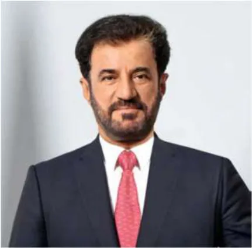
親愛なる友人の皆さまこの新しいシーズンの始まりにあたり、最新の要件と技術革新を反映した２０２６年FIAラリー安全ガイドラインを皆様にお伝えいたします。２０１９年に初めて発表されたこのガイドラインは、世界中で行われているＦＩＡのラリー競技会を安全に実施することに関しての、詳細な分析および協議が継続的、集中的に行われた結果です。我々の安全部門およびラリー部門は、ＦＩＡ世界ラリー選手権から最良な実施情報をＦＩＡレジョナルラリーおよび国内ラリーにも関連する形式で集めるために、ＦＩＡクローズドロード・コミッションおよびＦＩＡラリー・コミッションの委員らと緊密に連携し作業を行ってきました。現代のＷＲＣは最先端技術と最高水準の安全基準を体現しており、世界を巡るこの選手権は、安全手順とプロトコルの最良な実践訓練において模範を示す必要があります。これらのガイドラインに従うことで、これらの目標の達成と、このスポーツの未来を守る上で重要な役割を果たすことができます。私は、すべての加盟クラブ、ラリーオーガナイザー、オフィシャル、ボランティアがこのガイドラインを活用し、ラリー競技会の開催を支援する貴重な資源として考慮していただきたいと思っております。２０２６年のラリーシーズンが安全でエキサイティングなものになることを祈ります。敬具ＦＩＡ会長モハメド・ビン・スライエム
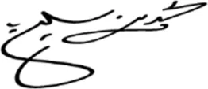
P.9目的
本ラリー安全ガイドライン（以下「本ガイドライン」という）の目的は、FIA安全規定を補完するとともに、関連する規則情報を一元的に集約することにある。本書は、オフィシャル、競技参加者および観客が、FIA規則をより容易に理解できるよう作成されたものである。本書に記載された内容は、FIAウェブサイトに公表される公式文書に代わるものではなく、規則としての効力を有するものではない。本書は、新たな情報、規則文書またはガイダンス文書の改訂、あるいはFIAが競技参加者およびオフィシャルにとって関連性があると判断する解釈の明確化を反映するため、随時改訂される文書である。常に最新版を参照すること。
P.11目次
前書き
1/ オフィシャル 役割と責任1.1 競技審査委員会委員長1.2 ASN / FIAセーフティデリゲート1.3 競技長1.4 FIA メディカルデリゲート1.5 医師団長1.6 レスキューチーフ1.7 最高安全責任者1.8 最高安全責任者代行1.9 スペシャルステージコマンダー1.10 副スペシャルステージコマンダー1.11 スペシャルステージ安全責任者1.12 ステージマーシャル要件1.13 タバード2/ セーフティカーとその義務2.1 ラリータイムライン2.2 セーフティカーゴールデンルール2.3 観客のセーフティカーまたはS1 2.4 セーフティカー000/00 2.5 ゼロカー（0）2.6 セーフティパトロールクルー2.7 スイーパーカー2.8 中間セーフティカー2.9 追加のセーフティカー2.10 セーフティカーのタイミング2.11 VIPカー2.12 追加車両（オフィシャルカー）3/ 安全ドシエ（書類一式）3.1 安全ドシエ3.2 安全ドシエの詳細3.3 インシデント管理計画3.4 医療ポイント3.5 スペシャルステージ無線通信3.6 必須の無線ポイント3.7 補助無線ポイント
3.8 追跡システム3.9 シケイン3.10 コーナーカット3.11 サービスパーク3.12 競技車両の給油3.13 電動ラリーカー3.14 プライベートテストのための推奨事項3.15 環境方針3.16 障害とアクセシビリティ4/ スペシャルステージ選択4.1 スペシャルステージ選択4.2 タイヤウォーミングゾーン（TWZ）4.3 スタート、フィニッシュおよびストップライン4.4 リスクの特定4.5 ガードレールの保護およびその他障害域4.6 砂漠地帯で行われるステージ5/ 観客の安全5.1 リスクのあるエリア5.2 セットアップ図5.3 テープの色5.4 観客とのコミュニケーション5.5 マーシャルコミュニケーション5.6 車両支援5.7 メディアの安全性と識別6/ ヘリコプターとドローン6.1 ヘリコプター6.2 ドローン7/ インシデントの取り扱い7.1 ラリー管制7.2 初期現場7.3 Heli-Medの手順7.4 競技参加者の安全説明会7.5 重大な事件の取り扱い7.6 事故データ収集7.7 世界事故データベース
P.13前書き
ラリーは、地形と時間に対する人間と機械の最大の試練の１つです。ドライバーとコ・ドライバーだけでなく、ホストエリア周辺のスペシャルステージに取り組むために昼夜を問わず働く熟練した技術者のフルグループで構成されるチームスポーツ。それは彼らの町や村を通過していくため、多くの熱狂的な観客や一般の人々が見易いスポーツです。
ラリーは強い安全実績を持つ厳しい規制の下でうまく組織化されていると認められているスポーツですが、その安全実績からの逸脱は私たちが愛するスポーツのまさに未来を脅かす可能性があります。
すべての観客が容認できる位置にあり、車両が暴走する危険性を認識していることを確認するのは、全員の責任です。安全はあらゆるラリーイベントの中心になければなりません。
私たちのスポーツの未来にとって、オーガナイザーが、競技参加者、ボランティア、競技役員、マーシャル、メディア、観客の全員に対する安全上のリスクを効果的に管理することは極めて重要です。
これは生きた文書であり、ベストプラクティス（最良の実践）を反映するように更新されます。私たちのスポーツが私たちの経験を統合し、ベストプラクティスと学びを共有することを可能にするために、それはイベントオーガナイザーや公認団体から受けた支援によって成長していきます。本書はFIA WRC／レジョナルラリー競技規則およびFIA国際モータースポーツ競技規則、付則H項と併せて読まれるべきである。付則 H項 では、各イベントが適切に配備しなければならない安全要件について説明している。競技規則： https://www.fia.com/regulation/category/117 https://www.fia.com/regulation/category/119 国際モータースポーツ競技規則： https://www.fia.com/regulation/category/123
ラリーのスポーツの最大の課題の１つは、一般大衆の安全を確保することにあります。
任務遂行中のマーシャルまたは競技中の競技参加者以外のすべての者が観客としてみなされ、それゆえに一般大衆の一員として考慮されるべきであることが念頭におかれるべきです。
すべてのモータースポーツイベントは、主に主要な公共イベントとして、そして次にスポーツ競技として考慮される必要があります。残念なことに、あまりにも多くの観客が潜在的な危険性を理解しておらず、車両の速度を把握していません。その結果、彼らは危険な場所に彼ら自身を置き、ドライバーのスキルと自動車の信頼性にあまりにも信頼を置き、そしてしばしば安全規則の基本的な理解または知識の欠如を示しています。
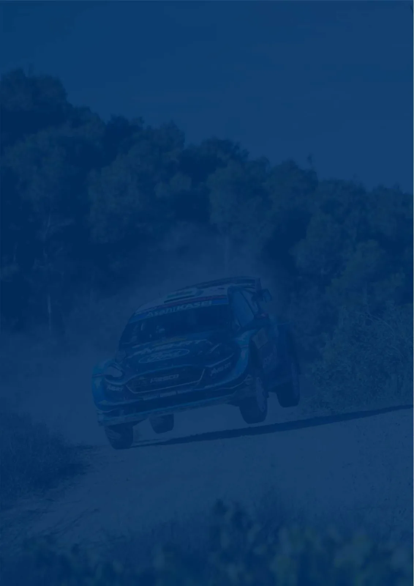
P.151/ オフィシャルの
役割と責任
1.1競技審査委員会委員長
1.2 ASN / FIAセーフティデリゲート
1.3競技長
1.4 FIAメディカルデリゲート
1.5医師団長
1.6レスキューチーフ
1.7最高安全責任者
1.8最高安全責任者代行
1.9スペシャルステージコマンダー
1.10 副スペシャルステージコマンダー
1.11 スペシャルステージ安全責任者
1.12 ステージマーシャル要件
1.13 タバード
P.171/ オフィシャルの役割と責任
ラリーオフィシャルの命令系統
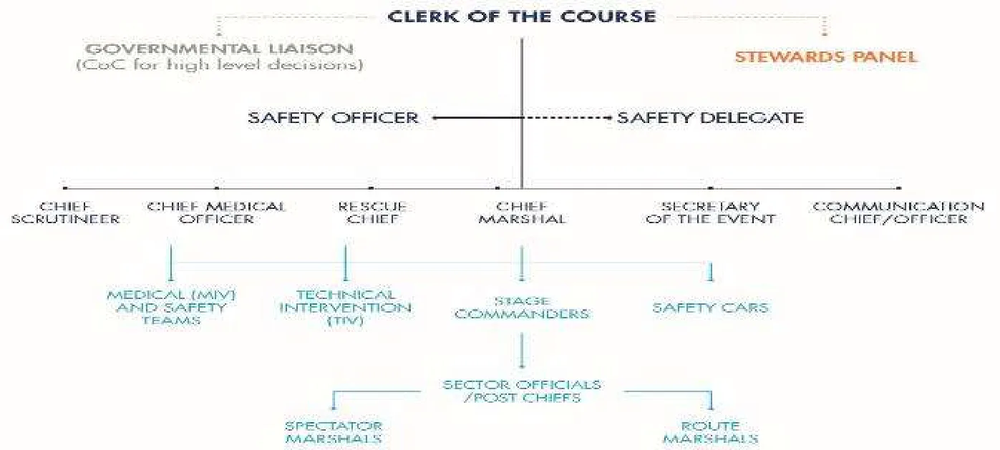
==============================================================================================================================
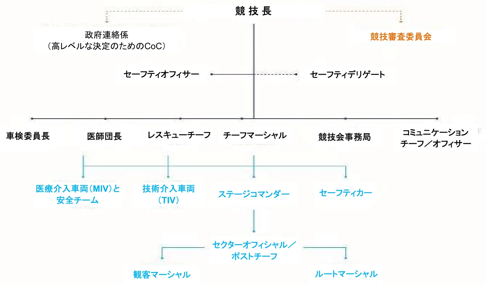
| 医師団長 | レスキューチーフ |
P.181.1競技審査委員会委員長
競技審査委員会委員長は、3人の委員の長を務める上級者です。 競技審査委員会はイベントの開催に一切責任を負いませんし、そのイベントに関連していかなる執行責任も負わないものとします。したがって、競技審査委員会はその活動を規定しているASNおよびFIAに対して以外には一切の責任を負いません。競技審査委員会は、競技参加者にペナルティを課したり、競技特別規則書を変更したり、失格を表明したりすることができ、不可抗力の場合や重大な安全上の理由から、競技を延期することがあります。 彼らは一時的または恒久的にあらゆる競技をやめるという決断さえ下す場合もあります。国際モータースポーツ競技規則、付則V項
競技審査委員会は競技中の規則の執行を担当します。
A/ 役割— 競技審査委員会は、競技に対する最高の権限、ならびに国際モータースポーツ競技規則および国内および競技特別規則の規則ならびに公式プログラムの執行に対する権限を持っています。彼らは、国際モータースポーツ競技規則の中で規定されている控訴の権利を条件として、競技会の間に起るいかなる問題も解決することができます。
B/ 責任— 国際モータースポーツ競技規則を参照してください。第11条8および11条9。FIA世界ラリー選手権競技規則FIAレジョナル選手権競技規則
11.1 競技審査委員会競技審査委員会（審査委員）は常に3名のメンバーで構成されます。委員長と1名の委員は、FIAによって任命される。3人目のメンバーは、ラリー大会を開催する国のASNによって任命されるものとします。審査委員と競技長との間では、常時連絡を取り合わなければなりません。 ラリーの競技実行中、審査委員の少なくとも1人はラリー競技会本部の近くにいなければなりません。
1.2 ASN / FIAセーフティデリゲート
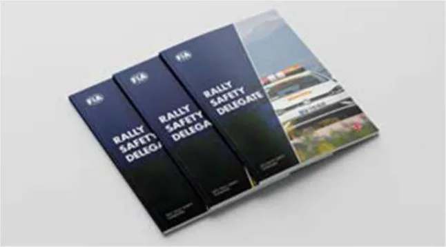
セーフティデリゲートは、安全性に関する十分な知識と経験を持つ経験豊富な人物です。彼はオーガナイザーを支援し、イベントの安全な運営と管理を確実にするのを助けるために助言を与えます。セーフティデリゲートの役割は次のとおりです： • 一般市民、ボランティア、競技参加者を安全に保つことを目的とした安全対策の有効性を評価すること。• 安全ドシエおよびその他の関連文書（メディア計画など）を見直し、早い段階でのイベント計画へ反映させること。
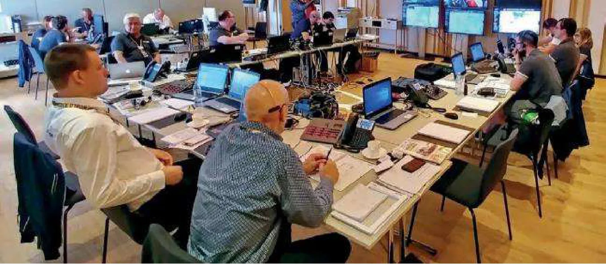
P.191. オフィシャルの役割と責任
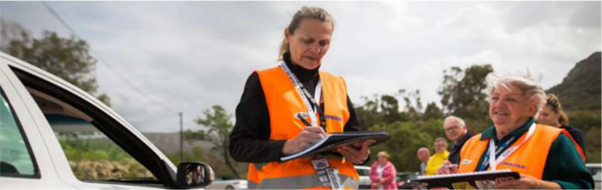
•イベント中に適切なセーフティカー（第2章を参照）を使用して、合意されたスケジュールを守り、可能な限り最初の競技車両の走行に近く、スペシャルステージをいたるところ移動すること。•彼はチーフセーフティオフィサーと直接に働き、セーフティカーやラリー管制無線で連絡を取る。•彼はイベント後の報告会に参加する。•彼は、イベント終了後にオーガナイザーが利用できるようにする安全委任報告書を作成する。
セーフティデリゲートは不可抗力の場合、または安全上の理由から、競技長に30分ステージの開始を延期することを推奨するか、またはスペシャルステージの実行中止を推奨する権限を持ちます。
ラリー委員会は、イエローカードが与えられたイベントを翌年のカレンダーに含めないことを決定する場合があります。ブルーカード（BLUE CARD）ブルーカードは、規定遵守および約束された内容（アイテナリー、組織構造など）に重大な欠陥が認められた場合に、イベントオーガナイザー／ASNに対しラリー委員会が与えることができます。翌年のカレンダーに含まれるためには、当該オーガナイザー／ASNは、ラリー委員会より決定された行動リストを受け入れ、それを実行しなければなりません。国際モータースポーツ競技規則、付則V項
セーフティデリゲートがいないイベントでは、任命されたオブザーバー - しばしば第二審査委員が兼務 - が彼らの報告書で安全性を評価するよう求められます。
セーフティデリゲートまたはオブザーバーから一貫して不十分な報告がなされた場合、イベントへ任命の変更、または可能性として翌年の同イベントに許可証が承認されない結果を招くことが予想されます。
セーフティデリゲートおよび/またはオブザーバーの報告は、医師団長の報告、競技審査委員会の報告および競技参加者から収集された報告と併せて読む必要があります。
FIAイベントについては、これらの報告書はまとめられ、見直しのためにFIA安全部とラリー部に送られます。
FIAクロズドロード委員会は、安全上の懸念が強調されているFIAオブザーバー報告書またはセーフティデリゲート報告書を検討し、必要と判断した場合は、該当するFIAスポーツ委員会に「イエローカード」の発行を勧告します。重大な安全違反は世界モータースポーツ評議会に直接報告されます。イエローカード（YELLOW CARD）イエローカードは、安全面で重大な欠陥が認められた場合にクローズドロード委員会の提案により、イベントオーガナイザー／ ASNに対しラリー委員会が与えることができます。
セーフティデリゲートはその権限の範囲内で、競技の安全オフィシャルがその職務を遂行するのを助け、FIA選手権を統括するすべての安全規則が尊重され、必要と判断した場合にはその意見を述べ、そのイベントに関して必要な報告書を作成するように任命されています。ラリーでは、彼はスペシャルステージの開始を最大30分遅らせる権能を持っています。
A/ 役割
— セーフティデリゲートの役割は、イベント前および大会中の実施で大会安全計画を見直し、検証し、全体を通して最高安全責任者の作業を監督することです。
B/ 責任
— イベントに関連して安全計画および評価会議に出席する。— 公共およびメディア分野の安全性を監視する。— 安全性に関するあらゆる管理上の項目をFIAとASNの間で調整すること。— イベントでの安全関連の事件を評価し報告する。
FIA世界ラリー選手権競技規則FIA World Rally Championship Sporting Regulations FIA地域選手権競技規則FIA Regional Championship Sporting Regulations
P.201. オフィシャルの役割と責任
11.2.3 FIAセーフティデリゲートFIAセーフティデリゲートは、公衆およびメディアの安全を監視することに特に責任があります。 安全条件が十分ではないと判断した場合、彼/彼女はスペシャルステージの開始を最大30分遅らせることができます。
1.4 FIAメディカルデリゲート
FIAメディカルデリゲートは、医療安全計画の規定制への適合性をチェックし、それが確実に実行されるようにしなければなりません。• 彼は、医師団長がラリー会の2か月前に記入して送付した予防医療アンケートの助けを借りて医療安全計画を評価します。• WRCの新しいラリーごとに、または5年間連続してこの選手権に参加していないラリーごとに、彼は、関連する競技がWRCカレンダーに登録される前に、医療サービスと提案されている病院の検査を行います。• 競技中、彼はステージ上のすべての医療ポイントとサービスパークを訪問して医療サービスが正しく設定され、機能していることを確認し、スタッフが現場にいて適切に配置され訓練されていること、車両と装備が任務遂行に適しているか、また医療救出施設が適切であるかを確認します。 これは、FIAセーフティデリゲートおよび競技長との緊密な協力と良好なコミュニケーションのもと、最初の競技者の60分から90分前にすべてのスペシャルステージを通過することによって行われます。• 彼はすべての医療関係者と救出の練習を行い、必要ならば彼らの訓練に貢献します。• 彼は、事故および／あるいは医療事件について医師団長から通知を受けなければならず、競技審査委員会に送られる前に作成された日報をチェックします。• 医師団長との共同責任において、彼は、ドライバーが事故を起こした後にどこで彼が再びレースを許可されるかを決定します。• 必要に応じて、彼は病院に入院しているドライバーの追跡調査を行います。• 競技終了後、彼はFIAのためのメディカルサービスに関する報告書を作成し、それがASNに転送されます。参照：付則H項 補足8第2条
1.3 競技長
競技長は、主催チームを率いて、イベントを安全に運営するだけでなく規則に従ってイベントを開催することの責任者です。彼らは、最終的に競技結果が確定するまで、事前準備と競技を通して効果的な決定を下してイベントを管理し、上級役員、マーシャル、各国当局、そしてボランティアを通して、自由にすべての要員を使います。
競技長は、最終的には指揮系統の中心となり、そのためステージコマンダーと連携してステージに関する決定を下します。この意思決定プロセスでは、常に安全を最優先事項とし、イベントのアイテナリー（行程）を2番目の側面として考慮する必要があります。
障害のある競技者（ドライバーまたはコ・ドライバー）がラリーに参加する場合は常に、すべてのマーシャルはそのことを知らされていることを競技長は確認しなければなりません。事故が発生した場合には、競技参加者の車両に障害者のユニバーサルシンボルが表示されているのを見た時には常に、非歩行者の乗員が 特別な支援を必要とする状態であり、足と胴体の追加拘束システムが邪魔となって脱出できない状態になっている可能性があることをマーシャルは考慮すべきです。また救助隊にも周知されているよう、医師団長にも伝えられていなければなりません。国際モータースポーツ競技規則、付則V項競技長は、スペシャルステージでの安全のあらゆる側面に責任を持ち、安全マニュアルを作成し、競技中にそれが遵守されるようにします。
1.5 医師団長医師団長（CMO）は、安全ドシエの医療部分とその実施に責任があります。彼は、イベントのための医師や救急救命士の募集に責任があるだけでなく、それぞれの専門技術がチームが直面しなければならないかもしれない怪我に関連していることを確実にするためにも責任があります。CMOは、スペシャルステージ内の医療施設のポイント間の最大距離が10分であることを確認します。これは安全計画とアイテナリーの準備で、場所を選ぶために時速50〜55キロで車を運転することで計算されます。
A/ 役割
— 競技長は、適用される規則に従ってイベントを開催する責任があります。
B/ 責任
— 国際モータースポーツ競技規則を参照してください。 第11条11。
P.211. オフィシャルの役割と責任
イベントのために医療チームを計画し調整するために、彼らのイベントでの展開を指導し、最高レベルでの医療上の意思決定に責任を持ちます。
彼はまた、ラリーからどんな患者でも受け入れるかもしれない外傷センターと病院に連絡し、それらの病院がイベントの開催を知っており、いかなる犠牲者にも対応するための正しい施設を持っていることを確実にします。これには、競技当日にこれらの施設で勤務中の医師と面会することが含まれます。
詳細については、2.7.2.1から2.7.2.2までのFIA国際モータースポーツ競技規則、付則H項、および補足2を参照してください。
CMOは、医療介入車両がスペシャルステージ上で作業する基準に達するものであり、規則で強調された時間内で対応できる場所にステージ上で配置されることを保証します。CMOはまた、イベントで使用されているすべての医療ヘリコプターと連携します。ステージ脇着陸の手順は、出動に備えてヘリコプターの乗組員と協議する必要があります。
国際モータースポーツ競技規則付則L項第11条3項身障者国際ドライバーライセンス保持者のモータースポーツの実践
非歩行である身障者ドライバーは車両に煙または火災が生じた場合にのみ、競技中のサーキットまたはステージ上で停止した車両から自己退避する。また、車両が水域の極近くにあり沈む
イベント当日、彼はすべての医療関係者がそれぞれの適所にいることを確認します。彼/彼女は、報告された事件または怪我の深刻さを競技長に助言し、救急車または医療ヘリによって、どのように負傷者をステージから救出し、病院に搬送するのが最善かについての協議で、競技長および医師団長と協力します。
恐れがある場合にも自己退避する。停車中の車両の身障者ドライバーが安全な場所へサーキットまたはステージを運転して離れることができない場合、ドライバーはケージ、ハーネス、安全装置で保護されたまま車両内に留まり、救助されるのを待つ。
障害のある競技者（ドライバーまたはコ・ドライバー）がラリーに参加する場合は常に、すべての救助隊員はそのことを知らされていることをCMOは確認しなければなりません。事故が発生した場合には、競技参加者の車両に障害者のユニバーサルシンボルが表示されているのを見た時には常に、非歩行者の乗員が 特別な支援を必要とする状態であり、追加拘束システムを装着している可能性を考慮すべきです。乗員の足が縛られ、および／あるいは胴体が座席に縛られていればそれが邪魔となって脱出できない状態になっている可能性があります。コクピットが改造されていればそれも救出を邪魔する場合があります。可能な限り、救助隊はラリーの開始前に身障者参加者に会い、またその改造車を確認して、それらの特殊性を事前に分かっているようにすべきです。
マーシャルは、競技参加者の車両に身障者のユニバーサルシンボルが表示されているのを見る際常に、緊急事態（煙、火事、水中）が発生していない事故で車が動かなくなった場合には、非歩行者の乗員が車内に留まるように要請されていることを考慮すべきであることを知らされるべきです。また、場合によっては、乗員の脚が拘束されている場合があることを認識しておくことも重要です。
1.6 レスキューチーフ
すべての対応要員の全体的な安全を確保し、医療要員とレスキュー要員の安全なアクセスを促進するために、ラリーステージにおける事故後のあらゆる緊急介入の運用上の監視はASNレスキューチーフの役割となります。
国際モータースポーツ競技規則、付則V項
医学博士である医師団長は、ＦＩＡあるいはＡＳＮにより組織される競技会によってなされるすべての活動に関連する医療サービスの組織に対して責任があります。彼は管轄のASNによって承認されています。
ASNレスキューチーフはASNによって指名され、必要なすべての非医療介入機材および個人用保護具の提供、および事故後のステージでの医療チームおよびレスキューチームの安全な介入の確保に責任を負います。
A/ 役割— 医師団長は、モータースポーツイベントでの医療サービスの提供を統括しており、レースディレクター/競技長と直接連絡を取り合っています。
ASNレスキューチーフは、すべてのレスキューチームリーダーが現場の安全管理、すべての消火活動および技術的レスキュー活動の指揮、およびそれらの活動に関する人材、資源、および機器の管理に適切な技能を備えていることを確認する責任があります。
B/ 責任－ イベントで医療サービスの組織と管理を運営すること。これには、適切に訓練され資格のある医療関係者の採用が含まれます。
P.22ステージでの緊急介入が発生した場合、レスキューチーフまたはレスキューチームリーダーは、現場の全体的な安全、指揮統制、消火活動、および技術的救助活動に責任を負います。
レスキューチーフおよび/または個々のレスキューチームのリーダーは、事件管理、指揮統制、技術的レスキューの経験があり、消防およびレスキューの経験、および/または現場でのモータースポーツレスキュー活動の運用に関する豊富な経験を持っていなければなりません。
A/ 役割レスキューチーフは、付則H項補足3で要求されている、すべての非医療介入機材の提供を確実に行わなければなりません。具体的には、次のとおりです： 救助機材の準備 消火機材の準備 電気的安全装備の準備
B/ 責任さらに、レスキューチーフは、関与するすべての要員に適切なレベルの個人用保護装備の準備を確実しなければなりません。事件が発生した場合、すべての対応要員の全体的な安全を確保し、医療要員とレスキュー要員の安全なアクセスを促進するために、レスキューチーフ（または適切な技能と経験を備え、指名されたレスキューチームリーダー）は次のことを行わなければなりません： 最初に出動するレスキュー車両に乗り、できるだけ早く現場に到着する 安全な作業体制を確立する 現場の安全、消火活動、および技術的レスキュー活動を監督する 効果的な救出を確保するため地域の医師と連絡を取り合う 適切である場合には、FIA eセーフティデリゲートと連絡を取り合い、安全を確保する
レスキューチーフは、は、適切な機材を適正に準備するために、医療および救助役務調査票（Medical and Rescue Services Questionnaire）の署名者として行動しなければなりません。
緊急介入が発生した場合、事件の性質、方法、および使用機材の詳細について、CMOに報告しなければなりません。
参照：付則H項、第2.8.2.4、2.8.2.5、5.3.2項、補足2 パート 6。
1. オフィシャルの役割と責任
P.231. オフィシャルの役割と責任
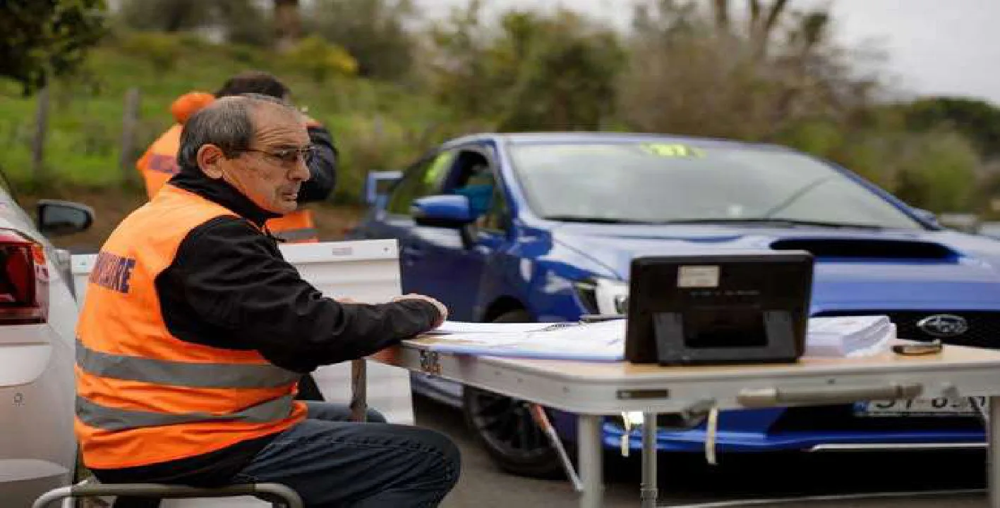
1.7 最高安全責任者（チーフセーフティオフィサー）
国際モータースポーツ競技規則、付則V項
最高安全責任者は、イベントについてのすべての安全事項を調整する責任を負い、他の何人かと組織チームで作業します。この重要な役割を担う人は、ラリーでの安全性についてかなりの経験を持っている必要があり、その仕事はイベントの安全な運営に欠かせません。
チーフ/最高安全責任者（ラリー）は、スペシャルステージの安全のあらゆる側面を担当し、安全マニュアルを作成し、それが競技中に遵守されていることを確認します。
A/ 役割
彼らは安全ドシエを作成し、イベントの運営に関わるすべての人がドシエを認識し、適切な場合にはその実施を確実にするために適切な訓練を受けたことを確認する責任があります。安全最高責任者は、経路計画、行事の実施およびイベント後の報告書を含む計画に関与するべきです。
最高安全責任者はイベントの前にイベント安全計画の策定を確実にし、またイベントがその計画に従って運営されるようにします。彼は直接競技長に報告し、医師団長、チーフマーシャル、最高救助責任者と協力します。。
B/ 責任
彼は、救急隊と地方自治体がイベントについて完全に相談され、計画プロセスを通して相談されることを確実にするために医師団長と連絡を取ります。
イベントでの安全と通信の全体的な管理を維持すること。
関連するすべての公安組織と連絡を取り合うこと。
その計画策定に関する将来の勧告を行うために、イベントを通してイベント安全ドシエの運用を監視すること。
彼はイベントのための一般的なリスクアセスメントを実行して、安全ドシエと準備計画に追加するために競技長と一緒にステージ特有のリスクアセスメントを実行します。イベントを通じて、最高安全責任者は継続的にリスク評価を評価し、イベントが進展しても有効であることを確認し、この学習を将来の推奨事項として使用します。
予想される観客数に十分な視聴エリアを確保すること。
イベント安全計画からの関連詳細がイベントの前に適切な担当者に配布されることを確実にすること。
彼は安全ドシエのコピー、または安全計画の関連セクションが必要な人に配布されるようにします。
万が一に備えて、最高安全責任者は競技長と密接に連絡を取り合い、あらゆる安全および救助活動の実用性について助言します。
P.241. オフィシャルの役割と責任
1.8 副最高安全責任者（副チーフセーフティオフィサー）
1.9 スペシャルステージコマンダー
スペシャルステージコマンダーは、イベントの前のできるだけ早い時期に、彼らに割り当てられたスペシャルステージについての完全な知識を持つべきです。彼らは担当ステージについて、セットアップダイアグラム、観客用駐車場、観覧エリアなど、イベント安全ドシエの適切なセクションのコピー受け取ります。安全計画の「草案」コピーに早期に含めることで、ステージコマンダーはイベント計画について知らされ、最終スペシャルステージに貢献することができます。スペシャルステージがセットアップ計画に従って運営されるよう準備されていること、そして観客ゾーンが計画と正確に一致させることは、ステージコマンダーの責任です。
副最高安全責任者は、ラリーで安全のかなりの経験を持つ人によって実行されるべきことが要求されるもう一つの重要な役割であり、その役割はまた最高安全責任者または副競技長によっても実行されることができます。
副最高安全責任者は、提案されたルートのうち、利用した場合には適切に制御できない部分についての観客の安全上の懸念にフラグを立てる必要があります。彼らは安全計画、特に観客の安全と各ステージの観客のアクセスに関するセクションに貢献するべきです。
イベントの際には、副最高安全責任者が観客の管理に重要な役割を果たし、各スペシャルステージが「ライブ」になる前に、ステージを決められたスケジュールで移動します。彼らの役割は、ステージを進行するにつれて発生する可能性のある問題を見つけて対処することです。
当日は、すべてのマーシャルがスペシャルステージ安全計画どおりに配置されていること、およびマーシャルがステージコマンダーまたは関連セクターのオフィシャルのいずれかからその職務についての説明を受けていることを確認することが彼らの責任です。
イベントの後、競技参加者からのオンボード映像やインターネットからのファン映像の使用を検討して、考案された計画がどのように機能し、将来に向けて学ぶことができるかを確認する必要があります。
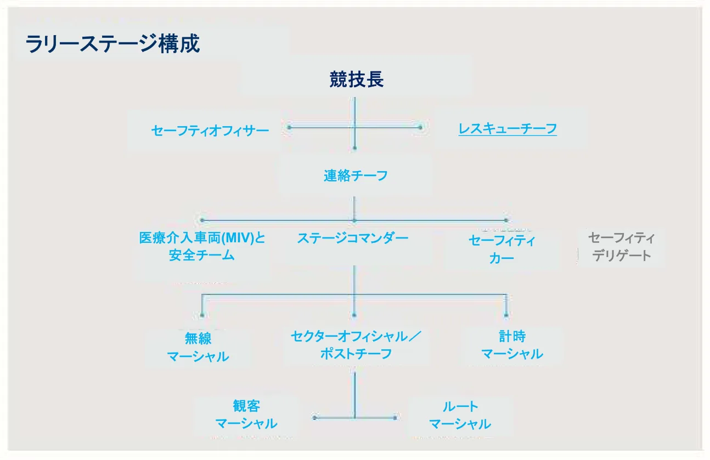
| ラリーステージ構成 | ||
| セーフティオフィサー | レスキューチーフ | |
| 連絡チーフ |
| 医療介入車両(MIV)と 安全チーム | ステージコマンダー |
P.251. オフィシャルの役割と責任
• 観客専用のエリアの予測数• メディアの調整
それぞれのスペシャルステージは、観客が到着するずっと前に準備され、走る準備ができていなければなりません。観客が観戦場所を一旦選択した後にエリアを設定しようとすることは不可能です。
以下での役割の注意： • ステージ上のマーシャルにブリーフィングを提供します• 新規または未経験のマーシャルの割り振り場所/バディ/ブリーフィングの調整• 低レベルのインシデントおよび重大なインシデントに対する指揮系統
副ステージコマンダーは、事件が発生した場合に介入しステージコマンダーの代理する能力を持っている必要があります。事件が発生した場合、または観客の安全に関連する問題がある場合は、副コマンダーもステージに入るよう要求されることがあります。
スペシャルステージのコマンダーは、スタートラインにいる競技参加者に、ステージを始める前に各自の安全装備が整っていることを確認するために見せる表示を準備するのがよいでしょう。確認事項には、以下のものが含まれます： • オーバーオールの下のバラクラバ• ヘルメットストラップを締める• FHRをヘルメットに接続する• ショルダーストラップの下にFHR • ベルトを締める• プラムベッド式消火器の装備• 手持ち式消火器の安全ロッカーを取り外すこと。
国際モータースポーツ競技規則、付則V項
A/ 役割— ボランティアオフィシャル、競技者、観客の熱心さ、規律、健康、安全、そして満足度を高めることによって、常に競技エリア（ステージコマンダー）または担当セクター（セクターマーシャル）を管理すること。
B/ 責任— すべてのエリア/セクターの要員に効果的なブリーフィングを提供すること。
エリア/セクター内のすべての利用可能な機材と人的資源を管理する。
表示は、スタートラインの位置決め用ポールに固定された単純な表示板か、スタートラインマーシャルが携帯して競技参加者のフロントガラスの前に何か示すものでよい。
事件が発生した場合、事件現場にいるオフィシャルの安全な調整を観察し管理しながら、イベント管制に情報を提供し続け、その後、事件後できるだけ速やかに満足のいく状態に競技路面が戻ってくるのを管理する。
ステージ安全性に影響を及ぼすいかなる事件（インシデント）が発生した後に、ステージマーシャルから要請を受けた場合、スペシャルステージコマンダーは、損傷した危険防護設備を復旧または交換するよう当該ステージマーシャルを指導し、ラリーコントロールと当該対応を調整しなければならない。
すべてのステージコマンダーは、安全に関する特定の事項に関して、イベントから説明を受けている必要があります。これは競技長、イベントまたは観客の安全管理者のいずれかによって行われることができ、ビデオプレゼンテーションまたはオンラインのコンピュータ会議または電子メールまたは他の直接的なコミュニケーションの合理的手段による会議を通じて行うことができます。このセッションは、すべてのステージコマンダーがイベントについての完全かつ一貫した説明を得ることを保証する機会です。このセッションでは、次のことを必ず説明します：
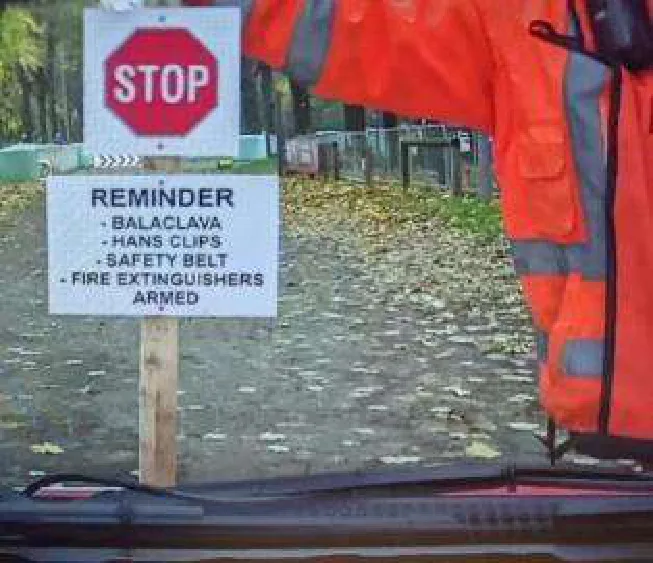
• すべてのステージコマンダーは安全計画と関連する運用計画に目を通しています• 安全計画からのキーポイントは下記のものを含みカバーされるべきです： • 予想される観客数とアクセス／観客の観戦の調整• FIA / ASNセーフティデリゲート、セーフティカーのタイムスケジュール、セーフティカーの調整• インシデント管理計画• 前年度からの変更点• ステージあたりの予測マーシャリング数、達成された数、および数がまだ十分でない場合に必要なアクション
P.261. オフィシャルの役割と責任
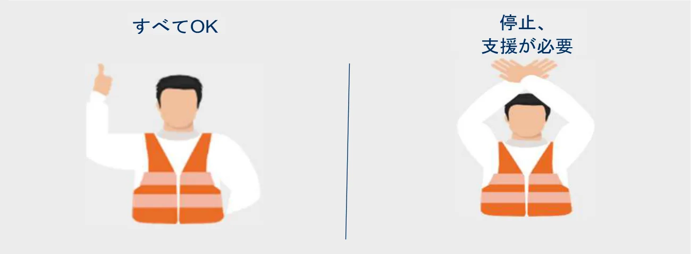
マーシャル
1.10 副スペシャルステージコマンダー
すべてのマーシャルは、安全性に関する特定の問題に関して、イベントから説明を受けている必要があります。これは、競技長、イベントまたは観客のセーフティオフィサーまたはステージコマンダーのいずれかによって行われることができ、ビデオプレゼンテーションまたはオンラインコンピュータ会議または電子メールまたはその他の直接的なコミュニケーションの合理的手段による会議を通じて行うことができます。
彼らはスペシャルステージが安全計画と観客エリア図に従ってタイムリーに、理想的にはステージが競技で使用される前日にセットアップされることを確実にするべきです。
副ステージコマンダーは、各競技者がスペシャルステージに入ったと記録されていることを確認し、無線ネットワークを使用して各車両のストップラインまでの進捗を監視します。
これは、各無線ポストが通過する車両の番号を書き留め、無線ネットワークを使用して、スペシャルステージに入る番号順にポストを通過しない車両を通知することで実現できます。
マーシャルがステージに到着すると、ステージコマンダーまたはその指名する代表者からのブリーフィングが行われなければなりません（そして、人々がステージに到着するときに応じて、複数回行われる必要があるかもしれません）。特定の状況では、これはイベントの前に、既知の経験豊富なチームリーダーとの電話で行うことができますが、それは行われなければなりません。
追跡システムが作動中であっても無線による競技参加者のこの手動監視は依然として実行されるべきです。
1.11 スペシャルステージセーフティオフィサー
このブリーフィングには以下が含まれます:
各スペシャルステージには、ステージセーフティオフィサー（SSO）と副ステージコマンダーがいなければなりません。
• 個人の安全情報• 地域特有のリスク評価情報；マーシャルは常に安全な／観客の場所に配置されます。スペシャルステージが開催されているときには、制限された場所に立ち入るべきではありません。マーシャルは問題に対処するために道を歩くことができますが、そうするときは常に彼ら自身の安全を考慮しなければなりません。• 彼らの配置のための指揮命令系統とコミュニケーションのプロセス• 関連がある場合、最も近い赤旗の位置、また最も近い無線マーシャル• 観客用観戦エリア（ゴー：立ち入り可）とノーゴー（立入禁止）エリアを示す図• 適切な場合はステージ看板
スペシャルステージセーフティオフィサーは、安全計画が担当のスペシャルステージに関連しているため、安全計画を完全に理解している必要があります。
彼らはまた彼らのステージで利用可能な人員と装備に関する完全な知識を持っているべきです。
彼らはスペシャルステージのスタートから最初のオフィシャルカーの1台で移動し、ステージセッティングの最終チェックを行います。スペシャルステージ安全責任者は、このフルステージチェックを行った後、スペシャルステージ終了地点の上級職に就きます。
P.27• イベント前後のセーフティカーのスケジュールと、最初の車両の出走予定時刻• ステージセーフティオフィサーまたは任命された代理人/担当者/ステージのチーフマーシャルの携帯電話番号• 立入禁止エリアに関連して観客やメディアを扱う際、および例えば協調していない観客によりステージの開始が遅らされることについての勧告をし、観客に動くよう求める際に、すべてのマーシャルが同じアプローチを取ることの確認• 近づいているセーフティカーまたはラリーカーについてマーシャルと観客に勧告するために笛を使うことの重要性についての注意• さまざまな警告灯がハイブリッドまたは電気ラリーカーに何を意味するかについての説明。 マーシャルはこれらの車両に近づく前にこれを知っておく必要があります• マーシャルは仕事中に座ってはいけません。これは、ラリーカーを見ながら座ってはいけないという観客へのメッセージを強めます• マーシャルは、セーフティカーがスペシャルステージを通過する際に、その認識された手信号を思い出す必要があります• 手荷物、安全装置、赤旗、消火器などをガードレールに立てかけたり、ガードレールやスペシャルステージの端に近づけたり決してしてはなりません。 車両や物体がこれらの物に衝突すると、おそらくあなたの方向に激しく飛んでいく可能性があります。機材は簡単にアクセスできる場所近くの十分な奥側に配置しますステージコマンダーは彼らのチームの知識と能力に自信を持っていなければなりません。
経験のマーシャルは、可能な限り、その役割遂行および自信の成長を支援するため、テープ等により区画・管理されたエリアに配置されるべきである。
ステージ道路上またはステージ道路を横断する移動は、当該ステージが競技車両の通行に対して閉鎖されていることが確認され、かつステージコマンダーの指示の下でのみ行わなければならない。
走行中のステージ上のマーシャルに関する最善： マーシャルエリア内で発生したいかなる事件（インシデント）も、状況の明確な説明および正確な位置を添えて、直ちにステージコマンダーへ報告しなければならない。 いかなる者であってもステージ道路付近で作業を行う必要がある場合は、専任の監視員（スポッター）を配置しなければならない。 必要に応じて笛または声による警告を行うこと。接近する車両の音が適時聞こえるものとみなしてはならない。 コースアウトした車両の進路上となる場所（コーナー外側、ジャンクション出口、ブレーキングゾーン、道路面より低い場所）には、絶対に立ってはならない。 道路付近にいる場合、接近する競技車両に背を向けてはならない。 ステージ備品または危険防護設備の復旧は、安全に実施でき、かつステージコマンダーの許可を得た場合に限り行うこと。
安全マーシャル - オレンジ
ステージセーフティオフィサー -オレンジ地に白い縞とテキスト
1.12 ステージマーシャル要件
ポストチーフ青地に白のストライプ＆テキスト
計画段階では、ラリーオーガナイザーは、各イベントの安全な運営を管理するために必要なマーシャルの数を考慮する必要があります。
メディア - グリーン
地元の地形と過去のイベントの観客に関する経験から、必要としそうな数を見積もることができます。
ステージコマンダー - 赤とテキスト
当日の実際の状況はさまざまな理由で変わる可能性があることを忘れないでください。当初計画していたよりも多くのマーシャルを用意することをお勧めします。
競技参加者リレーションオフィサー（CRO）
赤いジャケットまたは赤いタバード＆テキスト
マーシャルの配置は、各場所の複雑性に応じて調整されなければならない。経験豊富なマーシャルは、複雑なエリア（重大な危険を伴う場所、リスクの高いゾーン、およびテープ等による区画はないが観客等が立ち入る可能性のあるエリア）に配置されるべきである。大人数の観客エリアには、経験の浅い者に優良な実務慣行を共有するため、少なくとも1名の経験豊富なマーシャルを配置すべきである。
メディカル - 白
無線 - 黄色に青い無線マーク
車検員 - 黒
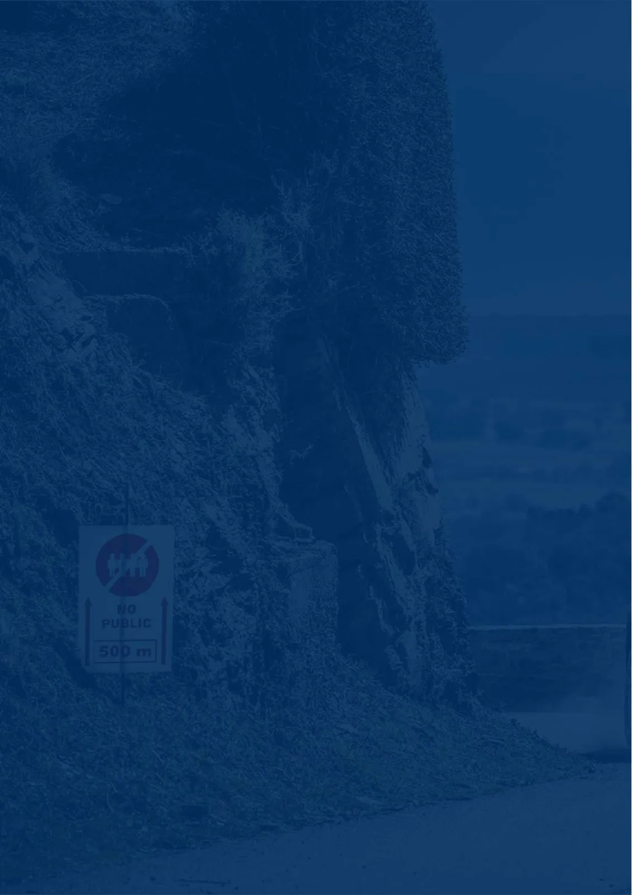
P.292/セーフティカーとその義務
2.1ラリータイムライン
2.2セーフティカーゴールデンルール
2.3観客セーフティカーまたはS1
2.4セーフティカー000/00
2.5ゼロカー (0)
2.6セーフティパトロールクルー
2.7スイーパーカー
2.8中間セーフティカー
2.9追加のセーフティカー
2.10セーフティカーのタイミング
2.11 VIPカー
2.12追加車両（オフィシャルカー）
P.312/セーフティカーとその義務
セーフティカー
それらは（順番に）:
０００あるいはトリプルゼロカー
（あるいは同等なもの）ＦＣＤ*の３０～４０分前
セーフティデリゲートＦＣＤ*の２０～４０分前
００あるいはダブルゼロカー
ＦＣＤ*の１０～２０分前
０／ゼロカーＦＣＤ*の５～１０分前
*FCD：First Car Due（最初の車両の出走予定時刻）
P.322.1 ラリータイムライン
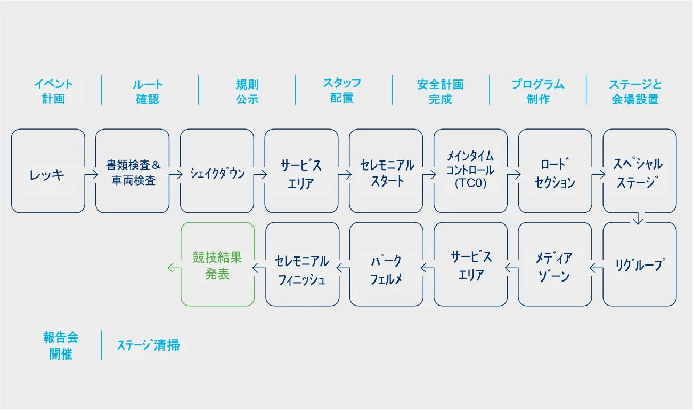
2.2 セーフティカーゴールデンルール
観客の安全、中間の安全、000、00、またはスイーパーのいずれであっても、すべての安全のための車両はセーフティカーと呼ばれます。Zero車と呼ばれる唯一の車両は、側面に1つの0がある車両です。他の車両はオフィシャルカーと呼ばれます。
各イベントは、ステージが安全ドシエとさまざまなイベントチームによって作成された文書とともに提示される方法が異なります。十分に準備するのに余裕ある時間内にすべての書類を受け取ったことを常に確認してください。準備の一環として、次の点を考慮する必要があります: イベント前準備の例
イベントでのセーフティカーの主な機能は、安全計画の順守を確認するためにルートをチェックし、この情報をラリー管制に提供することです。 すべてのセーフティカーが各ステージを撮影できるようにし、これらのビデオを将来の使用のためにイベントに提供することをお勧めします。
・クリップボード・ＰＡ／サイレン／灯火・ホチキスとホチキスの針・イベント必要文書・地図・適切な着衣・飲食料を含む人的準備・携帯電話と充電器・個人用救急箱・無線－固定され機能する・ペン／鉛筆・ビデオカメラ、充電器および取り付け架台
（エアバッグの邪魔にならないこと）
P.332. セーフティカーとその義務
6. セーフティカーの乗組員は、マーシャルはボランティアであることを忘れないでください。そのため、常に礼儀正しくしてください。マーシャルには元気づけが必要であり、彼らの義務について短い訓練しかなされていないかもしれません。
ダッシュカメラ、タブレット、トリップメーター、携帯電話などを取り付けるときは、エアバッグを覆っていたり、運転者の視界を遮っていないことを確認してください。
追跡システムが使用されている場合は、セーフティカーもこの追跡システムを使用する必要があります。
7. セーフティカーは、常に事前に決められたタイムスケジュールを守り、イベントの進行における遅れを補うためにこれを適応させるようにしなければなりません。イベントがスケジュールを守っているほど、安全性は高まります。
セーフティカーとゼロカーの乗組員は、彼らの義務と行動に関して、競技会の競技部分の開始前にブリーフィングを受けなければなりません。
例外なく、ゼロカーを含むすべてのセーフティカー/クルーに以下のゴールデンルールが適用されるべきです;
8. セーフティカーは問題が特定されるのを可能にする適切な速度で運転されなければならず、必要に応じて停止し、取り組む問題を明らかにする準備ができていなければなりません。すべての乗組員がラリーに関連して見るものすべてに対して「それを見分けるようにする」という態度を持つことが不可欠です。
1. すべてのセーフティカーは明確に識別されるべきであり、すべてのセーフティカーの乗組員もまた、彼らが車両から降りたときにはイベントオフィシャルとして明確に識別可能であるべきです。
2. 現実的である場合、すべての公式のセーフティカー＆スイーパーカーは、ロードブックに従って可能な限り完全なルートを完走し、可能な限り完全なタイムカードを維持する必要があります。
9. すべてのセーフティカー（ゼロカーを除く）には、ルーフライト、サイレン、およびPAシステムが必要です。車両が適している場合、ゼロカーにはこれらまたは警告灯が付いている場合がありますが、サイレンの使用を強くお勧めします。
3. 各乗組員は、他のセーフティカーやラリー管制／競技長と、理想的には専用チャンネル付きの無線機で通信する手段を持つべきです。専用の無線チャンネルを持つことにより、セーフティカークルーがスペシャルステージの設営と運営に協力する際に、邪魔にならないチャンネルを確保することができます。ラリー管制とステージコマンダーはこの専用チャンネルにアクセスする必要があり、それによりイベント全体の管理とステージ特有の決定を行うことができます。
10. セーフティカーは通常、イベントのオーガナイザーから提供されたロードブックやその他の印刷された情報のみを使用するべきです。
11. 各セーフティカーは、その車の特定の役割を示すフロントガラスのサンストリップを持つべきです：FIAセーフティデリゲート、000、スペクテーターセーフティなど。明るい黄色の背景に黒文字で書かれたものであること。
4. すべてのセーフティカーは、走行中の車両および一般的なステージ状態に適した速度で、スペシャルステージを通過する必要があります。セーフティカーが、乗員、ステージのオフィシャル、または一般の人々を危険にさらすような方法で運転されてはなりません。
イベント後、すべてのセーフティカーとゼロカーは、イベントの報告会に使用するために、イベント安全責任者または競技長に報告書を提出する必要があります。
5. セーフティカーは、イベントの宣伝を促進するためにスポンサーを楽しませたり「スター」に自由走行させるために使用されるべきではありません。彼らは重要な役割を果たしており、そのため乗員は仕事をする必要があります。
P.342.3 観客セーフティカーまたはS1
不要な公式車両は走らせてはいけません。他の上級役員がステージを通過することを要求される場合、彼らの車両はセーフティカーではなく「オフィシャル」カーと呼ばれるべきです。
観客セーフティカー（Spectator Safety Car）はPAシステムと警告灯同様に常に適切な識別情報は必要です。それはルートについての深い知識を持っている有能な人によって運転されるべきです。 観客安全オフィサーがこの車両を走行します。
一貫性を保つために、イベントではドアパネルに次のセーフティカーの記述を使用する：Spectator Safety、000、00、0、SweeperおよびFIA / ASN Safety Delegate。他の安全車両を使用したい場合は、ドアプレートにその機能の明確な説明を記載してください。
イベント前 ｰ 可能であれば、イベントの前にステージを訪れたり、以前の車載カメラ映像を見たりして、ルートや観客席に慣れておくべきです。
セーフデリゲートは通常、00の前に走り、00車両の乗組員が必要な追加の行動をとることができるようにします。セーフティカーの乗組員は、先頭車両の出走予定時刻までの遅れを認識できるように、無線でラリー管制と密接に連絡を取り合う必要があります。彼らはそのスケジュールを調整して彼らがあまりにも先に走らないことを確実にすることができるように、また彼らが後退し遅れてステージに入ることによってイベントを遅らせることがないように常に監視するべきです。
観客セーフティカーはすべてのステージを訪問し、これらのタイムコントロールでタイムカードを完成させる必要があります。可能であれば、ルート全体、特にサービスエリアやその他の観客エリアも下見する必要があります。
彼らは他のすべてのセーフティカーやラリー管制とのコミュニケーションの手段を持つべきです。
各ステージ出発地点に到着したら、観客のセーフティカーはステージコマンダーと連絡を取り、マーシャル数の修正を含め、ステージ内に観客の安全上の問題があるかどうかを調べます。
FIA WRC競技規則付則Ⅲ‐第5条4.4(d)および第5条4.6 （ｆ）＆付則H項
c) ゼロカーは、FIA優先ドライバーやラリーから引退したドライ
バーによって運転されるべきではない。
彼らはラリー管制に連絡して各ステージへの彼らの出走予定時刻を確認するべきです（ラリー管制はルートの他のセクションで遅れがあった場合、観客セーフティカーがステージの出発地点で待機するよう要求する場合があります）。
d) ゼロカーの運転手とコ・ドライバーは、適度な速度で完全に
安全に運転ができるかなりのラリー経験を持つものでなければならず、競技ルート状況に関する情報およびコメントを完全に競技長に伝えることができなければならない。ゼロカーも、マーシャルが精通しているタイムカードの手順での打刻チェックを受けることとする。
クリアランスが与えられると、観客セーフティカーはステージを通って進み、すべての観客、マーシャル、そしてオフィシャルがステージセットアッププランに従って適切なポジションにいることを確認します。
安全キャラバンに関わるすべての人は、elearning.fia.com で利用できる最高安全責任者のeラーニングモジュールに従うことをお勧めします。
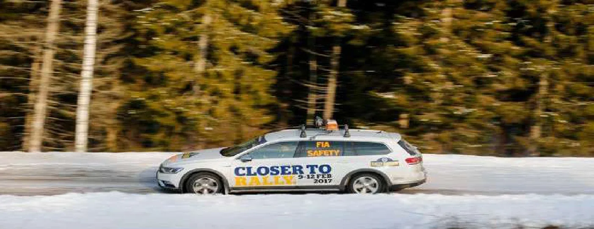
P.352. セーフティカーとその義務
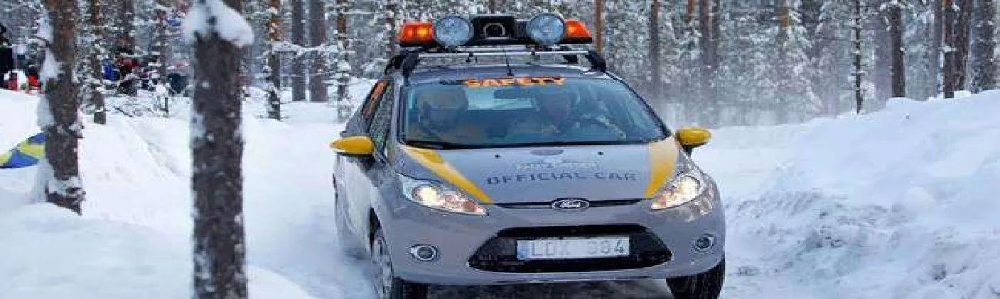
彼は彼らに代替として適切な場所を知らせて、これらの状況を次のセーフティカーに報告します。ステージは安全計画に従って看板、テーピングなど設置され（必要な場合には割り振りするためのスペアの装備を車載する）、ステージマーシャルは観客の問題を把握します。
| 車両 | ラリー管制、 FIA/ASNセーフ ティデリゲートと の無線通信 | サイレン | 拡声器 | 警告 ルーフライト | タイムカード | レーシングスー ツとヘルメット |
| 装備必要 SSC | 不要 |
彼らは、観客席のそれぞれに正しい数のマーシャルが配置されていることを確認するか、ステージが「ライブ」になる前にステージコマンダーと協力して状況を修正する必要があります。
2.4 セーフティカー000/00
理想的には（グラベルイベントの場合）、000と00は、すべての状況で役割を果たすための適合性を保証するために4 x 4の車両にする必要があります。これらの乗り物は観客にも最高の視界を提供します。
観客セーフティカーは、観客の問題領域に立ち止まり、すべての要員・資材を自由に使用して「それを見分けるようにする」というポリシーを採用する準備をする必要があります。
観客セーフティカーは、ラリーコントロール/ステージコマンダーにそのような問題と最初の競技車両のスタート時間を遅らせる可能性を認識させ、適切な場合には支援を要請するべきです。
アスファルトイベントの場合は、場所と要件に応じて選択した車両を決定する必要があります。
経験豊富な乗組員のみが利用されるべきです。
可能な限り、観客セーフティカーはPAシステムを使用して、最初の車両の出走予定時刻がいつくるのかを発表し、利用可能な結果を提供します。
これらの車両には、PAシステム、サイレンおよび警告灯と同様に、常に適切な識別情報が必要です。
イベント前に、ルート、予想される観客数やその他の関連文書を含む安全計画、さらには最終的な責任についてイベント担当者と連絡を取るとともに、安全計画をよく理解しておく必要があります。
観客セーフティカーは、000、00およびセーフティデリゲートと密接に協力して、すべての観客に一貫したメッセージが与えられ、受け入れ可能な場所にいることを確認します。
各ステージの終わりに到達したら、ステージコマンダー（または必要に応じて副ステージコマンダー）と連絡を取り合い、すべての観客が安全計画に従って設置された適切なエリアにいること、および十分なマーシャルが配置されていることに満足していることを報告する。
イベント実施中 － ルート変更については公式掲示板をチェックしてください。
000か00かのどちらかの車両は全ルートをたどらなければならず、彼らが訪れる各コントロールのための完成したタイムカードを持っていることを確認するべきです。これは最終的なセーフティカースケジュールで明確にされなければならず、タイムカードを正しく完成させるためにタイミングマーシャルを指導することを含む場合もあります。
この車両は他のセーフティカーに非常に接近して走行していますが、観客席を確保するテープを張る装備に加えて、スペアのステージの機器を携帯する必要があります。
観客セーフティカーがその所定の時間スケジュールを維持することは非常に重要であるが、ステージが走るのに安全な状態にあることを納得することが重大である。ステージが安全であることを保証することが遅延を意味するのであれば、これは避けられません。
イベントを時間通りに実行できるようにするには、000および00車が所定のタイムスケジュールを守ることが必須ですが、イベントが必要とする場合はタイムスケジュールを調整する準備ができていることも重要です。
P.362.5 ゼロカー (0)
彼らは他のすべてのセーフティカーやラリー管制とのコミュニケーション方法を持ち、観客の移動や場所に関連する要求を常に把握するひとつのチームとして機能しなければなりません。
ゼロカーの役割は、最初の競技車両出走の前にセーフティカーキャラバンがステージに入る最後の車という重要な役割を担っています。他のセーフティカーよりも高速で走行し、そのように競技用車両が走行するわけで、非常にシビアで重要な仕事となります。クルーは、前のセーフティカーが行った作業を監視し、ステージ上の無線通信を監視し、問題が発生した場合にはステージ上で停止して解決する準備をしなければなりません。スペシャルステージにゼロカーを停止させるのはまさに最後の手段。 安全キャラバンで前の車両が行った作業の効率性を考えれば、このようなことは決して起こらないはずです。 そうなった場合は、前の車両で実行された作業に失敗があったことになります。
スペシャルステージの前の各タイムコントロールで、彼らは入る前にステージコマンダーと連絡を取り合うべきです。これを可能にするために、競技長または最高安全責任者がセーフティカーのアイテナリーを構成する必要があります。
これは、000と00の車が競技参加者よりもサービス/再グループのエリアでより短い時間を過ごすことを意味するかもしれません。彼らは、安全計画、予測された数、または看板または予測された数に関する設定計画に対するいかなる修正についても、自身が明確であることを確実にする必要があります。
000と00の乗組員は、乗員同士で、ステージ備品、安全性の問題、マーシャル活動と観客の安全性に関する最終チェックを行うべきです。彼らはまた予備のステージの備品／装置とそれを修理するための手段を持っていなければなりません。
仕事内容は以下の通りで、ラリーの運営との兼ね合いもあります。
職務権限
問題が発生した場合は、そのことを認識または助言を得るために、ステージコマンダー/ラリー管制に報告しなければなりません。
最初の車両が出走する前のスペシャルステージの最終チェック 競技スピードの70/80%で走行 スタートライト、タイムカード、観戦ゾーンの準備をマーシ
暫定的な安全ポイント、必須の無線位置標識および赤旗も、これらの乗員によってチェックされるべきです。
ャルが行っていることを確認する。 セーフティカーのキャラバンの作業が完了したことを確認
フライングフィニッシュ＆ストップの場所がロードブックに従っている
する ステージがセットアップと安全計画に準拠していることを
こと、消火器も設置されていることを確認してください。
確認する 気になることがあれば、すぐにラリーコントロールに連絡
ステージの終了時に、ステージが実行可能な状態にあることをス
テージコマンダー（または適切な場合は副ステージコマンダー）に確認する必要があります。 また、このメッセージがラリー管制に渡されるようにする必要があります。 彼らは、イベント後の結果報告/報告書を最高安全責任者または競技長に渡すべきです。
する
安全
セーフティデリゲートと００車が通過した後、観客の動きを確認すること マーシャルの手信号をチェックすること
技術は常に発展しており、これらの新しい開発は、セーフティカークルーとラリーコントロールに提供される情報を強化するために使用できます。スペシャルステージの準備状況をリアルタイムで把握することは、最初の競技車両がステージを出走する前の準備を進める上で非常に重要な要素です。
アイテナリー
競技規則では、競技長の仕事はアイテナリーを尊重することとされている 遅延があれば観客の移動につながる シリーズプロモーターの圧力のあるイベントもある 時間通りに走ることで、マーシャルの注意を喚起 競技参加者は時間通りにステージを開始し、遅延によっ
ラリールート上の強力なデータ接続環境によっては、ウェブカメラを000車や00車のフロントに接続することも可能です。これらの映像はラリーコントロールに送信され、セーフティデリゲートがステージに入る前に見ることができ、ステージスタート前にステージの状況を把握することができます。
て疲労しないように注意を払う
ラリーコントロール
ラリー隊列をコントロールする 安全とアイテナリーのバランスを保つ セーフティカーのキャラバンの通信・行動・懸念事項の認
セーフティカーのライブ映像を使用する場合は、現地のGDPR規制を確認し、常にコンプライアンスを確認する必要があります。
識 スペシャルステージの間中を通じでゼロカーの位置を追
| 車両 | ラリー管制、 FIA/ASNセーフ ティデリゲートと の無線通信 | サイレン | 拡声器 | 警告 ルーフライト | タイムカード | レーシングスー ツとヘルメット |
| 装備必要 00/000 | 不要 |
跡する ステージが走行可能な状態であることをステージコマンダーに伝えたり、課題解決のための行動を調整したりする ゼロカーが問題の発生により停止した場合に、ステージ
00/000装備必要不要
のスタートを止める準備をしたり、競技参加者に赤旗を出す
P.372. セーフティカーとその義務
ゼロカーはラリーの準備の整えられた車両であり、従って他の競技用車両と同じ方法で安全検査のために提示されるべきであり、乗員は他のすべての競技者と同じ規則を常に遵守しなければなりません。つまり、ハーネスを締め、FHRデバイスと承認されたレーシングスーツとヘルメットを着用。
クルーの一人はまた、安全面とセーフティカーの両方の経験があることが必要です。またドライバーは現行のあるいは以前の競争ライセンス保有者であるべきです。
ゼロカークルーは事前にスペシャルステージの偵察をしておくとよい。これにより、安全計画、スペシャルステージ、ロードブックを熟知しておくことができる。またクルーは、ポストナンバー、観戦エリア、無線の位置などをマークしておく必要のあるルートノート一式を使用することもできます。
ゼロカーは観客に最初の競技車両到来の警告を提供します。それはスペシャルステージ上で最後の最後の問題を識別することができるようにラリー速度の最大70-80％で走るべきです。
利用可能なスペアのゼロカーは常に配備されるべきです。
ゼロカーは、非常に基本的なルートノート一式に基づいて走行する場合、ラリースピードの70～80％の速度で走行するのが、安全性が高いことが認識されています。またこれにより、コ・ドライバーは、スペシャルステージで見られる可能性のある問題に注意を払い、観察したことについてドライバーからの指示を受けたりすることができます。
競技長が最初の競技車両の前でゼロカーがステージを離れることができると確信する限り、最初の車両がスタートする前にゼロカーがステージを離れている必要はありません。
ゼロカーは、ロードブックに従って全ルートをたどり、訪問した各コントロールのタイムカードが完成していることを確認する必要があります。
ゼロカーの主な役割は、000車、セーフティデリゲート、00車の作業を監視し、これらの車が通過してから観客が動いていないことを確認し、何か行動を起こさなければならない場合には停止する準備をしておくことです。
ゼロカークルーには、メインのラリー主催チームから１名が参加しなければなりません。この役割は、競技長、イベントのセーフティオフィサー、あるいは観客安全オフィサーではなく、その当日はゼロカークルーの一員であることが唯一の役割となる個人とします。これにより、クルーはイベント全体の計画に精通し、安全計画を熟知し、ラリー全体の上級役員やステージコマンダーと同様に安全計画を熟知していることが保証されます。
クルーは常にスペシャルステージの無線通信を監視し、懸念事項やそれに対応するのに呼び出される準備をしなければなりません。
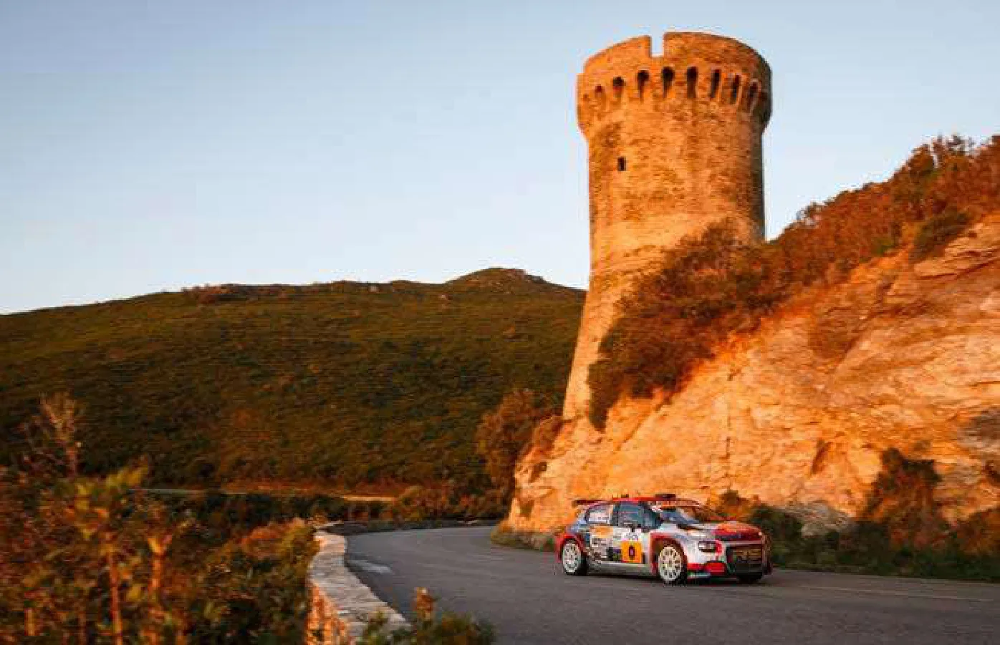
P.38車載装置：「"Safty Patrol"(セーフティパトロール）１／２／３／…」識別ステッカーサイレン拡声器テープ／メッシュ／ハンマー／エリア区分けポールラリー管制＋ステージコマンダーと接続された無線イベント追跡プロバイダーからの追跡システムユニットセーフティドシエ／安全ロードブックのコピークルーの要件：地元住民２名からなる経験豊富なクルー（移動中にスペシャルステージを通過しないようにするための現場に関する重要な知識を有し、および現地の言語を話す者）最低２名の予備マーシャルイベント前の安全に関するブリーフィング／トレーニングに参加しなければならない通信プロトコル：セーフティ無線チャンネルに接続されていることあらゆる動きや緊急介入は、ラリー管制およびステージコマンダーとの緊密な協議のもとに行われること問題の状況を報告すること詳細については、ISCの付則H項を参照してください。
イベントが予定通りに進行できるようにするには、ゼロカーが事前に決定されたタイムスケジュールに準拠することが不可欠です。
ゼロカーは他のすべてのセーフティカーとラリー管制と通信する方法を持つべきです。
それぞれのスペシャルステージのスタート時に、彼らはステージコマンダーと連絡を取り合い、実行可能な場合彼らの出走予定時刻通りに入るべきです。
スペシャルステージの長さが30 kmを超える場合は、1台はスタートから、もう1台はミッドポイントからフィニッシュまで2台のゼロカーが適切なタイミングで走ることを強くお勧めします。
それでもルートが安全計画に準拠していることを確認し、必要に応じて停止する準備をします。これが必要な場合、すぐにラリー管制に報告して、ステージの開始を遅らせることを求め、状況を説明します。問題を解決することが可能である場合それをして下さい。そうでなければ、ステージコマンダーとラリー管制がステージをキャンセルする準備をしてください。安全計画に準拠しているとは見なされないステージを実行することは、認められません。
ゼロカーは、本番前にスペシャルステージを通過する最後のセーフティカーです。 停止する必要はありません。主に、最初の競技車両が次に来ることを観客に警告するためにあります。ゼロカーで問題が見つかった場合、これは前のセーフティカーが正しく仕事を行っていなかったことを示しています。
各ステージの終了時に、彼らはステージコマンダー、副ステージコマンダーにステージが実行するのに許容できる状態にあることを確認する必要があります。また、このメッセージがラリー管制に渡されるようにする必要があります。
必要に応じて、イベント後、最高安全責任者または競技長へ結果報告/報告書。
| 車両 | ラリー管制、 FIA/ASNセーフ ティデリゲートと の無線通信 | サイレン | 拡声器 | 警告 ルーフライト | タイムカード | レーシングスー ツとヘルメット |
| 装備必要 | 不要 | 装備必要 |
装備必要不要装備必要
2.6 セーフティパトロールクルー
スペシャルステージがオープンエリアで実施される場合、セーフティパトロールクルーは、スペシャルステージの特定のゾーン全体を見渡せる準備を整えているものとします。セーフティパトロールは、見晴らしの良い場所に位置するのが理想的で、スペシャルステージ実施中にあらゆる問題に介入できるよう準備を整えておくべきです。それらの場所はセーフティドシエに記載されるものとします。車両には少なくとも次の装備が必要です：
P.392.7 スイーパーカー
スイーパーカーの乗組員は、イベントタイミングシステムがどのように動作するかについての深い知識を持ち、可能であれば、最大制限時間（OTL）を超えている各車両で停止し、ラリー管制と協議してタイムカードを収集する必要があります。
いくつかのイベントは複数のスイーパーカーを保有しているかもしれません。しかしその場合も1つのスイーパーカーだけが各ステージを通過するべきです。スイーパーカーは通常、ドアパネルの1つのチェッカーフラッグで識別され、ステージが終了したことを示します。
競技参加者がOTLであるためにイベントを継続する資格がなくなったことを確認するには、スイーパーカーがラリー管制と常に連携することが不可欠です。
スイーパーカーは道路セクションを含む完全なルートをたどるべきです。各ステージの開始時に、彼らは次の情報を提供することができるステージコマンダーに報告しなければなりません。
スイーパーカーが遅れると、彼らは直ちにラリー管制に助言するべきです。
ステージが再び使用されている場合、スイーパーカーの乗組員は、かなりな人数の観客のあるエリアを特定するのに加えて、再構築/再マーキングが必要なジャンクションやエリア、欠けている安全アイテムがあればそれをラリー管制に伝えます。
a. ステージに入った車両の数b. ステージを出た車両の数c. ステージを完走できなかった車両の位置に関する正確な
レポートd. 最後の競技者がステージスタートコントロールを離れた時
間
彼らはまた、場所と可能な場合には競技参加者のリタイヤの原因について報告するよう求められる場合もあります。
スイーパーカーは、道路セクションでリタイヤした数を含めて、ステージに入った競技者の数が、最後のステージを離れた数と一致することを確認する必要があります。
競技参加者の車両がまだステージにある場合は、それらを移動する必要があるのか、それとも現場に残すのが賢明であるのかを検討します。競技参加者は常に早い機会に自分の車両を回収したいと思うでしょうが、これはイベントに参加している他のすべての人にとって最良の利益とはならないかもしれません。実際にステージを塞いでいる場合、または危険をもたらす恐れがある場合を除き、車両の回収または移動を依頼しないでください。
彼らは訪問したすべての場所からすべての管理記録カードを集めるべきです。
彼らがすべての完成したコントロール記録カード、公式の報告書（審判員のものを含む）を、各ステージからシートにサインするオフィシャルと一緒に集めることは不可欠です。これらのシートは早い機会にラリー管制に返却する必要があります。ラリー管制またはリザルトチームからのすべての質問に対して、それらをアクセス可能にしておくことをお勧めします。事件レポートがある場合は、それらを写真に撮って、できるだけ早くラリー管制に提供するようにしてください。
彼らが了承したならば、すべての乗組員が考慮され、そしてそれが最後のステージ運営であれば、ラリー管制の権限で、そしてその時だけ、そのステージの運営に関わるマーシャル、医師そして救助隊が態勢を解くことが可能になるでしょう。
スイーパーカーはラリー管制の承認を得てステージに進入する必要があります。
スイーパーカーは、必要に応じて、イベント後の結果報告/報告書を最高安全責任者または競技長に送付する必要があります
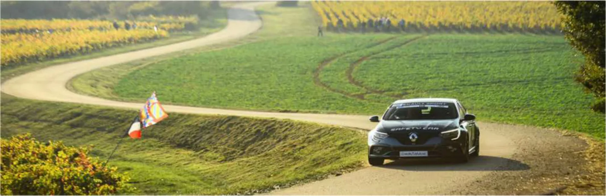
P.401日に最低2台の追加のセーフティカーが必要です。
2.8 中間セーフティカー
セーフティカーを補助するための資材を追加したスペアカーを最低1台用意するべきです。ステージ上で必要とされる場合には、追加でマーシャルを配備できるように、マーシャルを乗せた１台の車両をセーフティカーのキャラバンに挿入する必要があります。ギャップが20分未満の場合は、中間的なセーフティカーの使用を検討するか、またはステージの長さとイベントタイムスケジュール内での位置に応じてスペアのゼロカーを使用することを検討してください。
彼らのスケジュールは、問題が解決されたら、後続のステージに移動できるように計画されています（すべての車両が通り過ぎてセーフティカーコンボイと再編成できるか、観客エリアが明らかにされ、そこへ彼らが移動できます）
副ステージコマンダーは、この役割やルートや実用性に応じ、専用のクルーと車両に適しているかもしれません。中間セーフティカーは競技用に準備されたものや4 x 4である必要はありませんが、さらに車両が後ろにいることを観客に伝えるために使用するライト、サイレン、PAは必ずなければなりません。
長さや地形によっては、中間セーフティカーが最初の車両が入る前に、ステージから離れている必要はありません。
ルートの線形性などの要因により、停車後または遅延期間後にステージを再スタートする必要がある場合は、両方またはいずれかのセーフティカーを再展開することが現実的ではない場合があります。ステージを再開する準備が整う前に、この中間的なセーフティカーの乗組員が観客と関わり合い、観客を管理することが重要です。
2.9 追加のセーフティカー
セーフティカーを支援するための追加の資材を備えた最低１台のスペアカーを用意する必要があります。ステージ上で必要とされる場合には、追加でマーシャルを配備できるように、ーシャルを乗せた１台の車をセーフティカーのキャラバンに挿入する必要があります。
これらの車両は、必要に応じてステージ設定の最後の詳細を決めることによって、000およびASN / FIAのデリゲートをフォローして支援するために利用できるべきです。
予想外の観客配置が起きた場合には、無線を持った熟練したマーシャルがこれらの車両でステージ上に派遣され、それらの観客を制御することができます。
彼らの役割は、一般公衆の位置と配置をより適切に管理し、必要に応じて最終的に追加のマーシャルを残すことです。
P.412.10 セーフティカーのタイミング
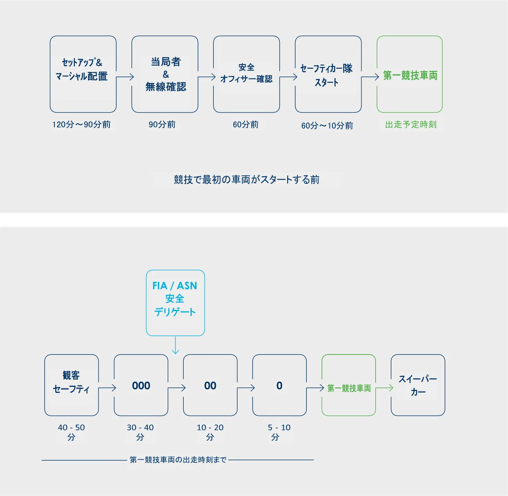
P.422. セーフティカーとその義務
設備管理者は、最初の車両の出走予定時刻の前に約90分を走行する必要があります。
2.11 VIPカー
VIPカーはセーフティカーのキャラバンの一部を構成してはいけません。セーフティカーゴールデンルールの7項は、「イベントの宣伝を促進するためにスポンサーを楽しませたり「スター」に自由走行をさせるためにセーフティカーを使用するべきではない」と明記しています。
イベントに遅れが発生する場合は、設備管理者のタイミングを再スケジュールする必要はありません。
彼らは完全なルート（ステージと道路セクションの両方）の深い知識を持っているべきであり、そして合理的に実行可能な限りにおいて、使用されているスペシャルステージのすべての順列を知っているべきです。
セーフティカーのキャラバン内に、競争速度に近い速度でVIPカーを移動させるのに安全な場所はありません。
オーガナイザーが商用またはプロモーション目的で VIP カーが必要であると判断した場合、スケジュール内でスペシャルステージの走行時間を確保する必要があります。 ステージの２回の走行の合間に時間があり、これは １ つの可能性で、ステージがすでにセットアップされていて、競技車両がいない場合です。
設備管理者は、有能な者によってルートの周りを運転してもらうべきであり、それによって彼らがステージ設備などに集中することを可能にし、それが彼らが参照しているセットアップブックの通りに設定されることを確実にします。
すべてのセーフティカーの乗組員は以下の点に注意してください：
彼らは最低限、ステージのスタートとフィニッシュのボード一式を、バリアテープ、杭、木槌、矢印、ホッチキス、ホッチキス針と共に持ち歩くべきです。
イベントを通して機会が発生した場合、2回目の走行で発生し改善される可能性のある問題について話し合うために、ステージのループの間に非公式な会議が開催されるべきです。
彼らはまた、チーフタイムキーパー、チーフマーシャル、ラリー管制、そして競技長と直接連絡をとる手段をもつべきです。可能な限り彼らはラリー管制に彼らがステージに入ろうとしていることを知らせ、そして彼らがいつステージを出たかを無線操作者が知ることを確実にするべきである
観客は、ステージの開始と終了を閉鎖することによって、最初の競技車の時刻の30分前にスペシャルステージを歩くことを禁止されるべきです。
このメッセージは、セーフティカーの場内放送（PA）システムによって、そしてマーシャルのサポートによって強化する必要があります。
すべてのセーフティカーと同様に、彼らが遭遇するかもしれないどんな問題に対しても、彼らが「それを見分けるようにする」という態度を維持することが不可欠です。
00車は、ステージ上にス観客が存在しないことを確認する責任があります。
観客がこの新しい方法に適応することを可能にするために、マーシャルは最初の車両の時間まで30分の時点で彼らの笛を長めに強く吹くことが勧められます。
設備管理者がすべてのステージを通過したとき、彼らは発生する可能性のある装備要件を調整するために、イベントの中心的な場所に留まるべきです。
2.12 追加車両（オフィシャルカー）
チーフタイムキーパー
チーフタイムキーパーまたは指名された代理人は、通常はチーフマーシャルのすぐ前でステージを通過する最初のオフィシャルカーの1つとして走行するべきです（これはイベントの構成と使用されるタイミングシステムにより、最初の車両の出走予定時刻の60分から120分前とすることができます）。
これらの車両は、セーフティカーの前のステージを減速して走行することができます。
設備管理者/ステージ安全管理者
設備管理者、またはステージ安全管理者が任命されている場合は、ステージが走行準備の整った状態でセットアップされていることを確認するか、またはステージコマンダーが各配置場所およびタイミングポイントに必要な正しい装備を持っていることを確認します。
チーフタイムキーパーは、各コントロールで誰を迎えることになるかについてチーフマーシャルと連絡を取り合う必要があります。
前者であれば、それが設備管理者によってチェックされた後にスペシャルステージで何かに必要な変更があってはなりません。
チーフタイムキーパーは、各ステージの到着管理エリアに到着したときにラリー管制と連絡を取り合い、各コントロールで正式なタイムカードが完成していることを確認する必要があります。
すべてのイベントで現場の前に設備管理者が配置されるわけではありませんが、任命される場合は以下を考慮に入れる必要があります：
ステージに入る前に、彼らはステージに進むためにラリー管制から許可を得るべきです。
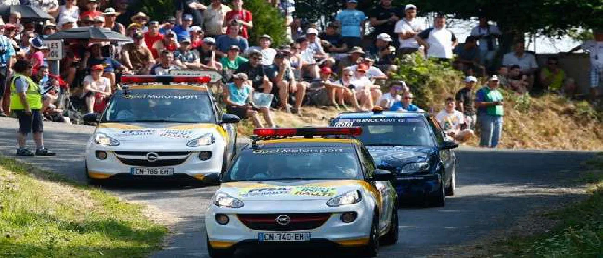
チーフマーシャルおよび/または最高安全責任者
その時点で他の車両がステージにあるかどうかも確認する必要があります。
イベント前 - イベントの前にチーフマーシャルがより多くの仕事をするほど、彼らは当日に職務を遂行することがより容易になります。
チーフタイムキーパーは、時計機器または計時機器を使用することになるすべてのマーシャルが彼らがしていることを正確に把握していることを確実にし、タイミングシステムがすべての車両のために正確に操作されることを保証するために機器のマーシャルによる操作の再確認に必要な時間を費やします。ステージコマンダーは、チーフタイムキーパーがこの目的のためにやってくるときに、計時チームの少なくとも一人のメンバーが利用可能であることを確実にするべきです。
いくつかのイベントでは、チーフマーシャルがステージをすべて通過できないか、最高安全責任者（ESO）と一緒に移動する場合があることが認識されています。チーフマーシャルがステージを通過しない場合、他の公式車両の1つがこれらの義務を引き受けるべきです。：チーフマーシャルは、イベントおよびステージスタートエリアをカバーするのに十分なマーシャルが配備され、それらが正しい事務処理および適切な管理委員会と装備機器を持っていることを確認する必要があります。
チーフタイムキーパーは、以前の車番システムが使われているところでは、マーシャルがタイムカードを正しく完成させることができることを確実にするべきです。
各ステージの終わりに、チーフタイムキーパーは、フライングフィニッシュとストップラインの間に正常な通信システムがあることと、障害発生時にバックアップシステムが存在することを確認する必要があります。
実行可能であれば、チーフマーシャルはロードブックまたはその他の公式ルート情報に記載されているようにルートを完全に完成させるべきです。各コントロールに到着したらチーフマーシャルが率先して常に模範を示して指導し、公式のタバードまたはイベント用の服装および/または身分証明書を着用します。
チーフタイムキーパーは、完全なルートに関する知識を持ち、タイムキーピングの役割を担う能力のある人物によって運転してもらうべきです。
彼らは彼らが訪問する各ポストのすべてのマーシャルが彼らがどのような義務を果たすことが期待されているかについての明確でそして簡潔な理解を持っていることを保証します。
彼らはルートを通過する際に全ての管制区域の標識をチェックし、それが供給されたロードブック/ルート情報と一致することを確実にするべきです。
看板や装備品が不足している場合は、ラリー管制に報告して、次の公式車両またはセーフティカーに不足品の供給を依頼してください。
チーフマーシャルが各コントロールに到達するまでに、すべてのステージ/コントロール施設が適所に設置され、セットアップブックの各項目がチェックされます。
また、サービスエリアや再グループ化エリアを含め、これらのエリアのいる誰もが自分たちが何をしているのかを把握していることを確認するために訪問することも重要です。彼らは必ずしも完全なルートをたどる必要はありません。
イベントの安全計画に記載されているように、チーフマーシャルは、正しい数のマーシャルが、予測された数を満たすように配置されていることを確認する必要があります。彼らは常に彼らのタイムカードを完成させておくべきであり、各競技車両に実行されるであろう完全なステージ開始手順をリハーサルするべきです。
これが不可能な場合は、他の公式またはセーフティカーのうちの1台がこれらの場所に行かなければならず、それらの場所のチーフタイムキーパーの役割を果たす必要があります。
P.442. セーフティカーとその義務
他のすべてのオフィシャルカーやセーフティカーと同様に、チーフマーシャルは有能な人によって運転される車両で周るべきです。
このメッセージが確認されたときにのみ、それらは次のステージ／コントロールポイントに進むべきです。遅延が発生した場合、チーフマーシャルはタイムスケジュールが調整された場合に備えて、ラリー管制と常に連絡を取り合うべきです。もしチーフマーシャルが何らかの遅れを知っていれば、彼らはこの情報を現場のマーシャルに転送するべきです。
車両も常に適切な身分証明を有している必要があります。（PAシステムが便利な場合があります）
彼らはラリー管制同様、他のすべてのセーフティカーとも通信リンクを持つべきです。
チーフマーシャルは、予備のステージ備品、警告表示、バリアテープ一式を、木槌とホッチキスと一緒に車内に用意する必要があります。
計時ポイントで止まるのと同様に、彼らは観客のアクセスポイントとして宣伝されている各ポイントで止まるべきであり、すべての観客安全マーシャルが適所に配備されていること、少なくともスペシャルステージ安全計画で示された予測数があることを確実にします。
チーフマーシャルはまた、すべての医師、救出隊、回収隊および無線の要員がルートに沿って適切な位置にいることを確認する必要があります。
この数が計画に従っていない場合、その場所でのマーシャル数が予想される実際の観客数に対して十分であるかどうかを確かめるために、動的リスク評価を実施する必要があります。
これらのいずれかが適切でない場合は、チーフマーシャルは適切な調査を行い、その一方でラリー管制に行った措置について常に通知します。
すべての公式看板と適切な警告通知は、スペシャルステージ安全計画のアクセスポイントでもチェックされるべきです。
ステージ上で赤旗が使用されている場合、この車両では赤旗が正しい場所にあり、正しく表示されていることを確認するのが適切かもしれません。チーフマーシャルが予備の旗を所持することをお勧めします。
ステージを通過する途中で問題を特定した場合は、直ちにラリー管制に連絡してステージのコマンダーと話し合い、問題を是正するための行動計画に同意する必要があります。
イベント後 － 彼らはマーシャルからのすべてのフィードバックをまとめて、彼らの報告会のためにイベント組織チームにレポートを提供します。
各ステージの終わりに、彼らはステージスタートとラリーコントロールに無線で返信し、ステージは走るのに完全な状態で容認できるものであることに彼らが満足していることをステージコマンダーに知らせるべきです。
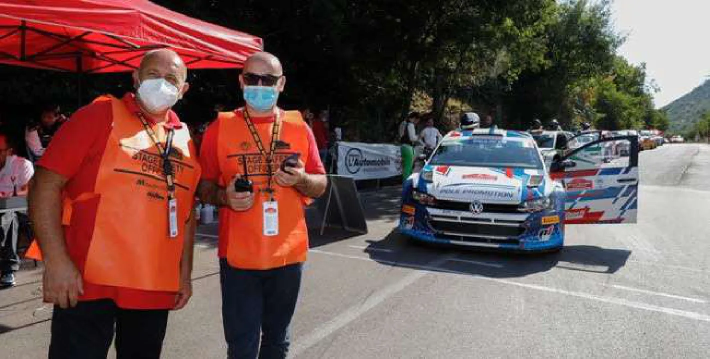
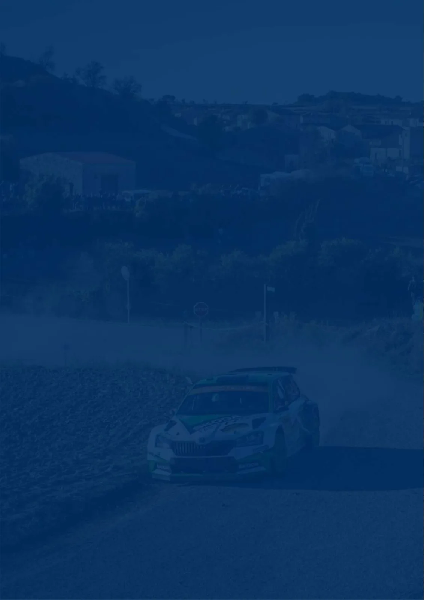
P.473/安全ドシエ（書類一式）
3.1安全ドシエ3.2安全ドシエの詳細3.3インシデント管理計画3.4医療ポイント3.5スペシャルステージ無線通信3.6必須の無線ポイント3.7補助無線ポイント3.8追跡システム3.9シケイン3.10 コーナーカット3.11 サービスパーク3.12 競技車両の給油3.13 電動ラリーカー3.14 プライベートテストのための推奨事項3.15 環境方針3.16 障害とアクセシビリティ
P.493/セーフティドシエ（書類一式）
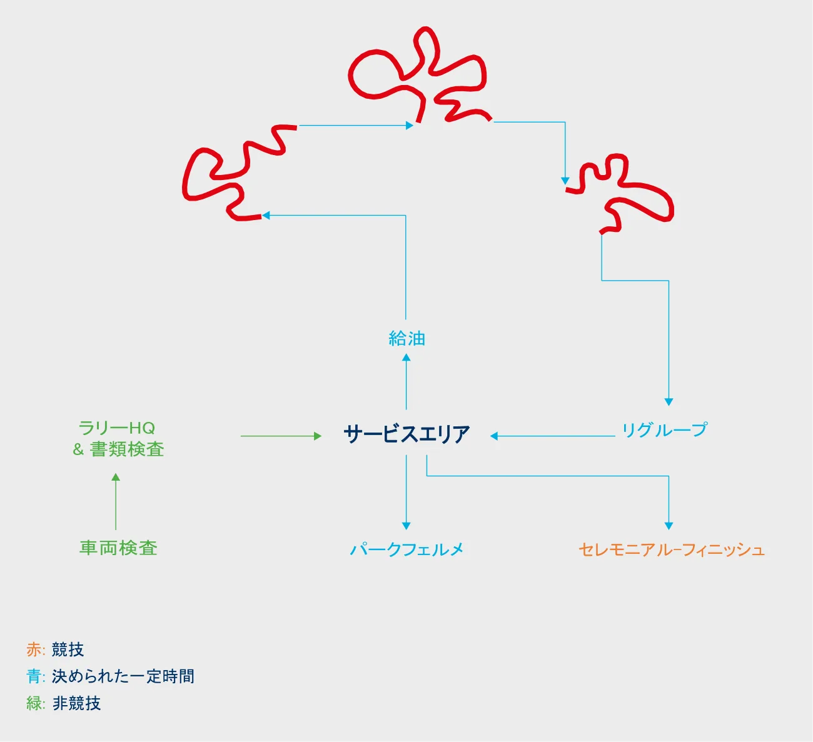
* その土地の法律に基づき、競技参加者がその国内で定められた制限速度を上回らない速度を維持するように
P.503.1安全ドシエ（書類一式）
ベストプラクティス（最良の実践）は、セーフティデリゲートが大会の2か月前にラリールートを訪れ、各スペシャルステージをチーフセーフティオフィサー/競技長と共に訪れることです。
安全ドシエとは、イベントのスポーツ的および非スポーツ的な安全要素をすべて包含する、運営上および重大な事件に関する管理手続きの書類一式をいいます。
ステージ査察では、危険有害性の特定、リスク評価、およびリスク軽減のプロセスを実施します。このプロセスは観客席だけではなく、ステージ全体に適用されます。
オーガナイザーは、各選手権規則で規定されたテンプレートと設定期限内に安全ドシエを作成準備しなければなりません。
安全ドシエのすべての部分が、すべての人の職務に完全に関連しているわけではありません。多くの役割では、その職務機能を成功裏に遂行するために、ドシエの一部分のみが必要となることもあり得ます。しかし、事故が発生した場合、多くの職務の役割の中には、ラリーでの日常的な役割を遂行する上で必ずしも重要ではない情報や役割構造の詳細を必要とするものがあることが認識されています。そのため、ドシエは、配布のために別々のセクションに分けることはできず、過去に「安全計画」を受領したことがある人全員がコピーを持つことができるように、1 つの文書として出されるべきです。
査察中、観客の配置が考慮されます。主に場所の設定、アクセスが禁止されているエリアとアクセス、そして競技参加者の安全が検討されます。この査察中に、安全計画を修正することができます。
安全計画は、過去のイベント/シーズンで得られた経験に従って毎年更新されるべき作業文書です。
全体的な安全マニュアル（ドシエ）は、不要な印刷コストをかけずに配布を最大化するような方法で組み合わせる必要がある次の主要要素で構成されています。そのため、自分のイベントに最も効果的な方法でセクションを組み込むことを選択できます。重要なのはそれらが含まれているということです。
ベストプラクティス（最良の実践）としては、セーフティーキャラバンの中の人やステージ上の安全関係者のために、チューリップダイアグラムをベースとしたロードブックと組み合わせた、縮約された「ロードブック/セットアップ」を作成することです。スペシャルなステージを通過する間、扱いにくい安全ドシエを持っていると、作業が困難になることがあります。この簡略化されたバージョンを持つことで、これらの特定のクルーのためにドシエをより簡単にし、より効率的に作業することができます。
A. 安全ドシエは次を含みます: a. リスク管理文書b. ステージの安全情報と地図c. ステージ/会場のセットアップ情報と図d. 観客エリア計画
B. すべてのオフィシャル/役割のための運用計画
効果的な安全ドシエは、文書を扱わなければならない人々にとって理解可能であるために最適な準備を必要とします。
（これらは無線支援計画を含むかもしれません）
イベントがラリーが直面するリスクを評価し、そのリスクを最小限に抑えて安全なイベントを実行する方法を計画したことを証明するのも文書です。
C. 事件管理計画（主要な事件＆コミュニケーション
計画を含む）
D. セーフティーカー・ロードブックフォーマット
大多数のラリーはすでに効果的な安全ドシエを作成していますが、それらすべてが観客の安全に対する特別なニーズを十分に満たしているわけではありません。
安全ドシエは、セーフティカーのクルーが道路上で使用できる実用的なロードブックスタイルの形式である必要があります。: a. ロードブックに準じるステージスタートからの距離とボックス
安全ドシエはステージラリーの重要な要素です。このドシエは、事件が発生する可能性を低減または防止するとともに、事件が発生した場合の結果を軽減するために取られ、実行されている行動を詳しく説明します。
番号付けb. 道路から観客ゾーンまでの距離（メートル）。これにより、セーフティカークルーがスペシャルステージを走行する前に観客エリアを予測することができるようにする。c. スペシャルステージからの観客ゾーンの高さd. 4.2の図によるステージ開始時のセーフティカー位置e. テーピング － 配置場所と色付けf. マーシャルの配置場所。これは、安全ドシエの作成者がマー
安全ドシエにはいくつかの役割があり、当局から依頼された文書の一つでもありますし、ステージを設定するために使用される文書であり、安全ロードブックでもあります。
セーフティデリゲート/医師団長が審査を行い、必要に応じて調整を提案/依頼することを可能にするため、それは少なくとも1か月前にASN / FIAに送られるべきです。
シャルの配置を希望する場所について、マーシャルに明確な指示を与えるものです。セーフティカークルーがスペシャルステージのこの地点に到達したとき、マーシャルが所定の位置にいるかどうかを素早く識別できるようにします。
P.513. 安全ドシエ
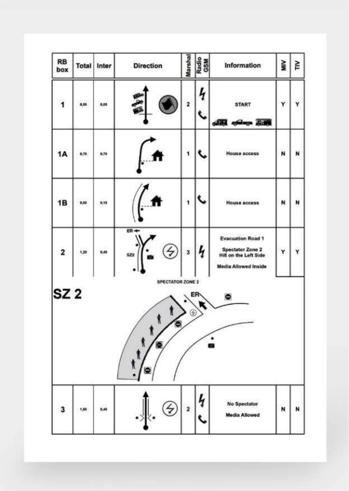
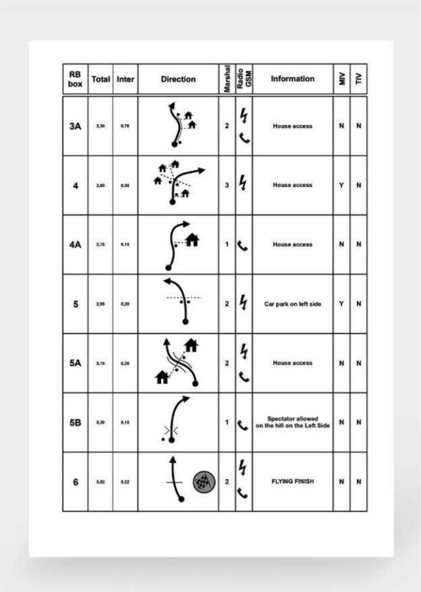
P.533. 安全ドシエ
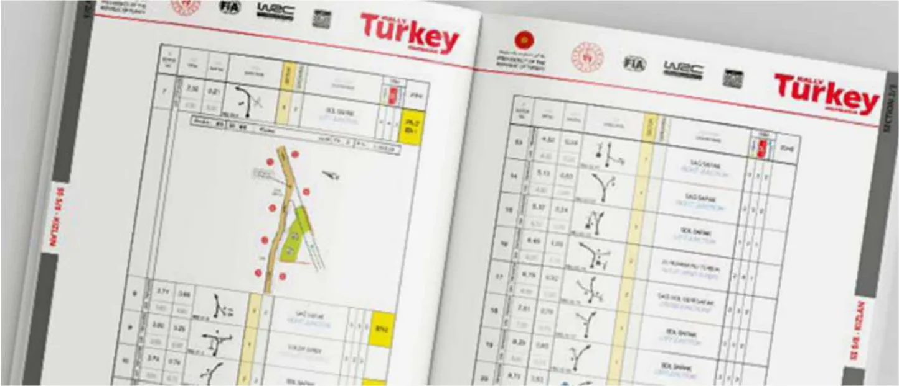
- 観客安全オフィサー
3.2安全ドシエの詳細
- 無線管理者
1. 導入の概要：
- 各スペシャルステージのステージコマンダー
- メディアオフィサー6.さまざまな緊急サービスおよび安全サービスの電話番号：
計画の目的；
誰がそれを読むべきですか？
イベントのために作成された他のすべての文書/運用計画への参照。
- 警察
- 病院（住所を含む）
あなたの安全方針
- 消防隊
2. 安全計画では、以下の各分野の問題に具体的に対処する必要があります。：
- 応急処置および負傷者搬送
- 救急車サービス
- 各スペシャルステージに配置された救助ユニット
公衆の安全（医療／応急処置カバーを含む）
- 各スペシャルステージにある回収ユニット
競技参加者クルーの安全性
- 各スペシャルステージにいる医師や救急救命士
イベントでのボランティアの安全
- その他必要に応じて
選択された病院は、ラリーで緊急サービスの待機を要求される前に書面で連絡されるべきです。
3. 使用されているすべてのセーフティカーと全体的なルートマップを含む総合イベントタイムスケジュール：
4. ラリー本部（ラリー管制）の所在地および主な連絡先番号、および／あるいは異なる場合は緊急電話番号：
7.リスク評価は単純な常識です。 あなたは、セットアップ中や故障中、そしてライブイベントでのリスクを考慮する必要があります。セーフティデリゲートや、イベントを組織するチーム以外の人にとって、テンプレートはリスク管理計画を理解するための最も簡単な方法です。
5. 主な役割と責任、それに続き、次のさまざまな担当者の氏名と主な連絡先についてのメモ：
- FIA/ASN セーフティデリゲート
8.計画には、評価されたリスクとその管理方法を説明する必要があります。観客／一般の人々、競技参加者、そしてオフィシャル／マーシャルのための特別な対象範囲があるべきです。
- FIA/ASN 審査員と競技審査委員会
- 競技長
- 副競技長
- 最高安全責任者
- 医師団長
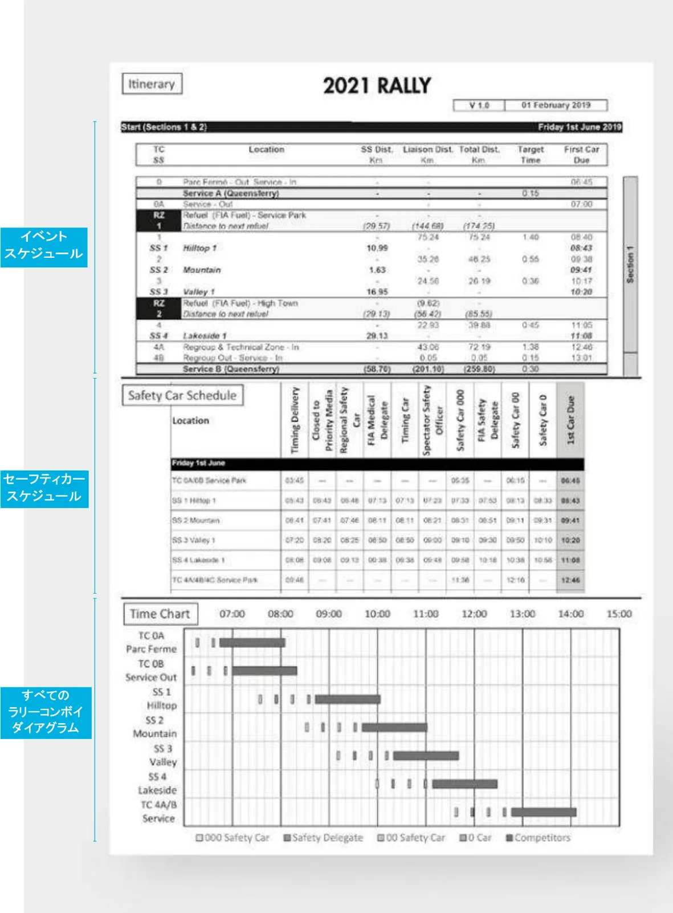
P.553. 安全ドシエ
9. 観客の安全のために、次の見出しの下に情報を含める必要があります。：
12. プロモーション用アーチを適切に管理し、安全上のリ
スクを最小限に抑えるため、以下の措置を実施しなければならない。
- 予想される観客数および発生した特定の問題
- ラリー競技ルート上に設置されるすべてのプロモーショ
- アクセスルート、駐車場、観客用の観戦エリアを示すプラン
ン用アーチは、安全計画書（Safety Dossier）に記載しなければならない。
を見開きページに関連本文と共に表示すること
- イベントに使用されている看板
- プロモーション用アーチは、競技者およびオフィシャルに
- 安全に関するイベントに関する見物人への連絡 プログラム、
よる設置位置の確認を可能とするため、レッキ（事前走行）開始前に設置しなければならない。当該時点で設置が不可能な場合は、その正確な設置位置を明確に標示し、レッキにおいて考慮されるようにしなければならない。
ウェブサイト、セーフティカー
- 立ち入り禁止エリア、テープ張りエリア、観客観戦エリアに
関連した観客の管理におけるステージ上のマーシャルの役割
- 各プロモーション用アーチ付近には、ステージコマンダ
- ステージごとの予測マーシャル － 新しいポジションに移動
ーと接続された通信機器を備える専任のマーシャルを配置しなければならない。当該構造物に関する不具合は、標準手順に従い報告しなければならない。
する必要がある場合に、ステージマーシャルに直接連絡を取ることができるようにしなければなりません。
- 手に負えない観客を扱うマーシャルを支援する際のステー
- プロモーション用アーチは、道路の直線区間に設置する
ジコマンダーの役割、すなわち観客が求められても移動に応じない場合はステージを中断する
ことが望ましい。
10. 各スペシャルステージの安全計画。これには、すべての主要オフィシャル、そのステージの緊急サービスに加えて、無線や救助の場所、観客席、そして負傷者の移動場所に関するランデブーポイントを含むスペシャルステージの詳細な地図が含まれます。
[ステージをキャンセルした場合に使用するために、スペシャルステージごとに代替ルートを用意する必要があります。]
11. 安全計画は、車検、サービスエリア、リグループ、メディア
ゾーン、タイムコントロールなど、ステージ以外のすべての会場でも実施する必要があります。
| 1 | 2 | 3 | 4 | 5 | 6 | 7 | |
| － | － | － | － | － | － | － | |
| ハザードとは何 | 誰がどのように害を | あなたはすでに何 | このリスクを管理するた | だれによる行動 | いつまでの行動 | 完了日 | |
| か? | 受ける可能性があり | をしていますか? | めに他に何かする必要 | ||||
| ますか? | がありますか? もしそう | ||||||
| なら、何? | |||||||
| ステージは完全に日中 | |||||||
| リスクに関してマ ーシャルにアドバ | |||||||
| 実用的な靴を履くよ | 行われるので、他の予 | ||||||
| 1 | 不均一な地面と | 観客とマーシャル | うみなに勧告し、極 | 防策は講じられていま | イス。プログラム | イベントの2週間 | |
| 木の幹 | 端に悪い場所をテ | せん。応急処置備品 | 前に | ||||
| およびWebサイト | |||||||
| ープで閉鎖する。 | は、観客エリアに適所に | ||||||
| 上の注書き。 | |||||||
| 配備。 | |||||||
| サービスエリアと | 「準備完了」モードの消 | ||||||
| サービスエリア | |||||||
| 2 | 燃料補給エリア | マーシャル | は別に2メートルク | 火器を備えた訓練を受 | 設営 | イベント日 | |
| 管理者 | |||||||
| リアゾーン | けたマーシャル | ||||||
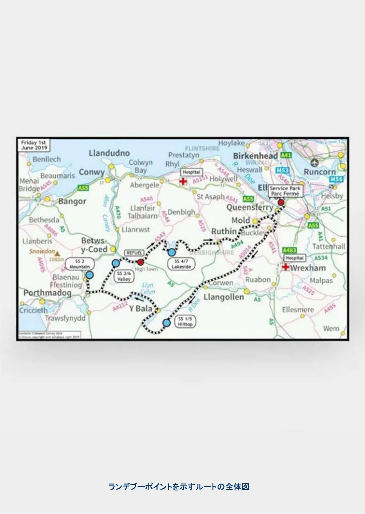
P.573. 安全ドシエ
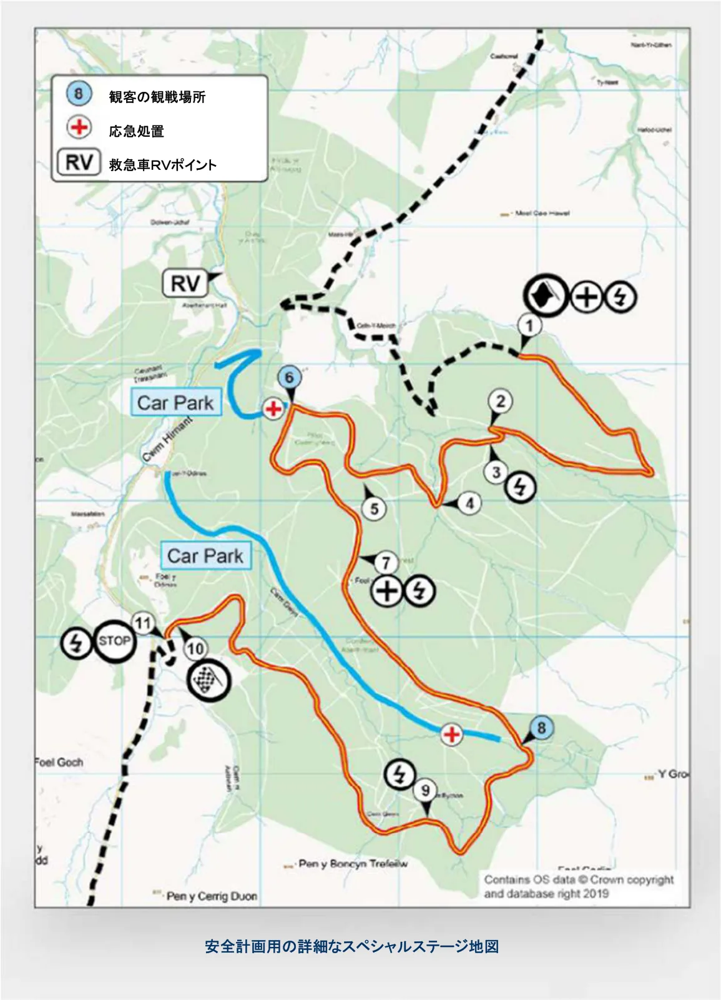
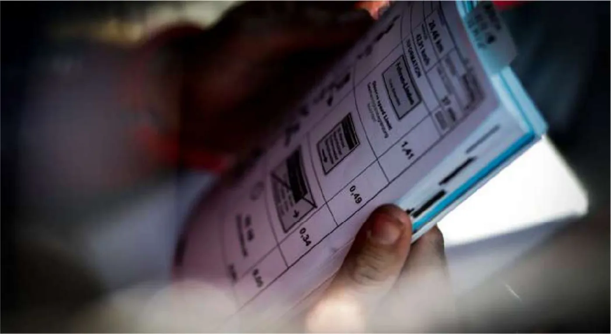
c.重大（メジャー）インシデント – 重大な怪我、人命の損失、または公の秩序の崩壊の恐れがあり、警察がその解決の調整を行うことを要求するインシデントとして定義される。
3.3事件（インシデント）管理計画
観客、競技役員、または競技者を巻き込む事故が発生するとは誰も信じていませんが、そのような事態に備えて計画することは賢明です。
マイナーインシデント
この計画は、安全ドシエ全体の一部にすることも、別の文書として保持することもできます。
効果的な計画にもかかわらず、まだ小さな事件が発生する場合がある。しかし、ラリー管制はそのような状況に効果的に対処できるべきであると認識されています。
この計画は、識別されたリスクまたは予期しない事象が発生した場合にどのような行動をとるべきかを識別するように設計されています。
そのような日常的な出来事の解決は、イベント管理の本質的な部分です。
インシデント管理計画（IMP）は、小規模（マイナー）インシデントまたは相当な（シリアス）インシデント（イベントの安全な運営に影響を及ぼすが、警察がその解決の調整を引き受けることを要求しない日常的な事件）あるいは重大（メジャー）インシデントがどのように対処さるのかの説明から成るべきです。
その予測可能性を考慮すると、適切な緊急時対応措置が実施されているべきであり、ラリーコントロールによって管理されるでしょう。
シリアスインシデント
たとえば、群集管理の状況が発生した場合はどうしますか。これらのインシデントは次のように分類することができます。：
いくつかの事件は、マイナーな事件よりも重大であり、救急車や復旧車がステージに入るなどのイベント介入を必要とするかもしれません。
a.小規模（マイナー）インシデント – イベントの進行に影響を与えるが外部からの支援を必要としない日常的なインシデントで、負傷程度は軽傷であり、応急処置要員またはイベント自体の要員・設備で容易に治療することができます。
相当な事件の管理もまた、ラリー管制の行動の本質的な部分であり、そのため、事象の正しい解決とコントロールを確実にするために標準的な無線手順を通して調整されます。
b.深刻な（シリアス）インシデント – イベントの安全な運営に影響を与える事件。シリアスインシデントは怪我を含むかもしれません。ただし、必要なすべてのアクションはイベントの要員・設備内で管理できます。
負傷者がある場合は、イベントの医療スタッフと医師団長が連絡を取り、正しい治療が提供されるようにします。
P.593. 安全ドシエ
メジャーインシデント
3.4 医療ポイント
• 医療ポイントは、すべてのスペシャルステージの開始地点、およびステージの長さが15 km以上の場合はその中間ポイントに設定する必要があり、介入速度で運転される関連車両では10分以下の到達距離にある必要があります。
ラリー管制がマイナーインシデントとシリアスインシデントを処理する責任を負いますが、関係者は状況に対処する能力の限界を認識し、それによってメジャーインシデントの発生を認識する必要があります。
そのような状況では、対応の調整に対する責任は警察に渡され、警察はマーシャル、オフィシャルおよび一般の人々への重要な情報の伝達においてラリー管制の援助を要求するでしょう。
• 医療ポイントは、緊急治療救急車（MIV）、技術的介入（車外への救出/救出/消火）（TIV）、および負傷者の避難（救急車）で構成されています。
あなたのインシデント管理計画は、この状況がどのように管理されるかをカバーする必要があります。
• 医学的および技術的介入車は、2台の車両として組み合わせて使用することも、混在させることも、別々に使用することもできます。
すべての場合において、現地の医療サービスの範囲に収まらないような重大な事件が発生した場合に備えて、この救助計画を実施するために地元の自治体と連絡を取るべきです。たとえば、火事や爆弾の脅威にどう対処しますか?
• すべての車両は、MIV、TIV、救急車の順に、前方に障害物がない状態で、ステージに直接アクセスできるように配置する必要があります（例：他の車両、フェンステープ、バリア、安全マーシャル）。
それぞれの場合において、あなたは以下のプロセスと取り決めを説明する必要があります:
• すべての医療ポイントは無線ポイントに関連付けられ、適切に標識設置されている必要があります（稲妻とクロス）。
• 意思決定の役割と責任
• 各MIVには、蘇生に熟達し病院前救護の外傷管理に経験豊富な少なくとも1人の医師と1人の救急救命士/看護師からなるクルーがいます。
• イベントの安全サービス、および必要に応じて緊急サービスと通信する
• 競技参加者、役員、観客とのコミュニケーション
• 各TIVには、車外への救出、救出、消火の経験のあるクルー、できれば消防隊の要員がいるべきです。
• メディアとのコミュニケーション
• 現場にいる人々のための報告メカニズム
• ステージが急な降下のあるエリアで実行されている場合、TIVには、車両が渓谷に落ちた場合に救出する適切なツールが装備されていなければなりません。
インシデント管理計画は安全ドシエ全体に含めるか、あるいは独立した別の書類とすることができます。
• 開始地点の救急車の1台には、救出中の集中治療の必要性を伴う負傷者に付き添う医師とともに、蘇生ユニットがあるべきです。
メジャーインシデントコミュニケーション計画は、IMPに含めるための有用な要素です。また、誰がどの意思決定に関与するのか、どのメッセージを誰が発行するのかを説明する必要があります。
• 医療用介入車両の機器は、付則H項補足 3に準拠している必要があります。
これらの問題を事前に計画することは、メジャーインシデントに対処するときに最も役立ちます。
• メディカル車両の派遣は、医師団長と協議のうえ、ステージディレクターへ情報を提供すると共に、競技長によって開始されます。
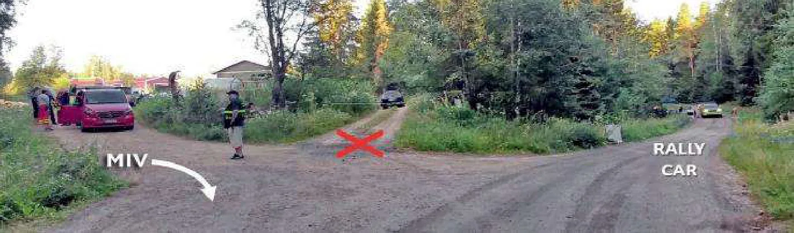
P.603.5 スペシャルステージ無線通信
3.6 必須の無線ポイント
必須無線ポイントは、理想的には2人以上の人員が配置されるべきであり、次のように定義されています：
無線カークルーは、理想的には、無線オペレーターと無線マーシャルからなる2人のマーシャルで構成されます。すべての無線マーシャルは、必要に応じて車両の事故や観客の管理などのイベント管理の問題を支援するように要求される可能性があるため、屋外での作業や車内での作業に備えておく必要があります。
各ステージの開始時と終了時の無線機。
これらは安全計画書とロードブックに記載されていなければならず、無線ボードを表示する必要があります。ラリー管制との直接通信が可能であることを確実にすることのできる、スタート、フライングフィニッシュ/ストップの無線ポジションを見つけるべきです。
彼らが無線カーの外に配備されるときはいつでも、彼らはマーシャルのタバードを身に付けなければなりません。
イベントの安全な運営を優先し、これらの場所の立地を考慮する必要があり、そのため、ステージルートの短縮が必要になる可能性があります。
イベントでは、無線ロケーション間に約5キロメートルの距離があることを確認する必要があります。
ステージを実行するには、ロードブックに記載されている無線の場所に、イベントにスタッフを配置しなければなりません。
中間の安全/医療用中間点および安全車両が使用する可能性があるショートカットの再合流点にある無線機。
レッキ中は、各無線ポイントの義務付けられた位置に無線ポイントシンボルの付いた標識を表示しなければなりません。
無線は、無線ポイント間の距離が約5 kmというFIAの要件に準拠する必要がありました。赤旗は、競技長を通じステージコマンダーの指示によってのみ表示および撤回されなければなりません。
この標識はもっと小さくてもよいが、その場所が彼らのペースノートに記されるように、レッキを行っているクルーにはっきりと見えなければなりません。
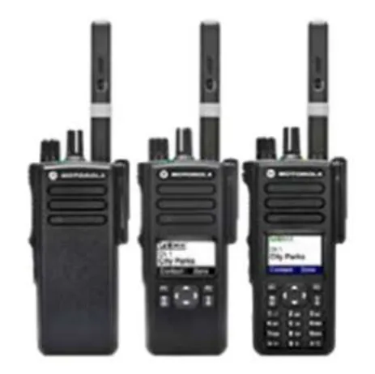
無線通信ネットワークと無線管制官は、すべての救助、医療および回収サービスがそれらの任務を完了するまでその場にとどまるべきです。
すべての場合において、無線操作員は競技ルートから十分遠く離れた位置に駐車して配置し、出口ルートを妨害しないようにしなければなりません。
彼ら自身の安全のためだけでなく、競技する車両によって投げ出されるかもしれないどんな破片からでも無線カーを保護するために。
主な観客エリア
セーフティカーのキャラバンがステージを通過すると、赤旗が常に表示されます。
これらの無線マーシャルは競技参加者の番号を見る必要はなく、観客席のエリアを見張るように配置されるべきです。
これらの場所は安全計画に示されていなければなりませんが、ロードブックに示されていたり無線ボードを持っていたりする必要はありません。
それらの場所では、上記の場所と一致しない限り、赤旗を必要としません。
P.613. 安全ドシエ
3.7補助無線ポイント
補助無線ポイント（義務付けではありません）は、理想的には2名以上のマーシャルで構成されるべきです。
これらのポイントは、イベントに必要数、ステージ全体に配置され、看板は必要ではなく、ロードブックに表示される必要もありません。
ただし、それらの場所と詳細は、安全計画に記載されている必要があります。そのポイントに赤旗を必要としません。
これらの場所はロードブックには含まれていないので、イベントを実行するためにそれらすべてに人員を配置する必要はありません。
無線オペレーターのスペシャルステージでの責務
彼らは彼らのセクター（区間）に責任があります。
彼らは観客が到着するかなり前に配置につき、観客が立入
禁止エリアに入るのを防ぎます。
彼らはスペシャルステージの安全担当者とラリー本部との
コミュニケーションをチェックします。
礼儀正しいやり方で、彼らは、推薦されたエリアで観戦する
ためにマーシャルの指示に従う場合にだけスペシャルステージが実行されますと観客に知らせます。
彼らは観客の数についてステージコマンダーに通知し、より
多くの支援要員が必要かどうかを決定します。
ステージを実施している間、彼らは無線の隣にとどまり、ス
ペシャルステージを開始する各車両の発表に従います。
彼らは彼らの前を通過する車両を記録します。車両がいな
い場合は、直ちにステージの安全管理者に知らせ、指示を待ちます。
彼らは笛を使ってラリーカーが近づくことを観客に警告する
ために、前と後ろに配置された安全マーシャルと協力します。
彼らは競技長の指示によってのみ赤旗を表示します。
P.62RE 6 無線スクリプト
| Script 1 ルートマーシャル | ステージコマンダー |
| もしもし。 ステージコマンダー聞こえますか? | どうぞ。だれがステージコマンダーを呼んで |
| いるのですか? | |
| こんにちは、マイクです。 目の前に車両が | |
| はい、あなたはどのステージにいて、場所 | |
| 転倒し、ひどい状態です。どうすればよい | |
| はどこですか? | |
| のか分からないほどの被害があります。? | |
| 私はあなたのステージの右カーブの直後に | 正確な場所を教えてください? |
| いますでしょうか? | |
| はい、カーブ後約15メートルで、車両は屋根 | |
| マイク、ステージ番号と名前は? | |
| を下にしていて、競技者はまだ入っていま | |
| す。 私は何をすればいいですか? | |
| そのステージ3だと思います。名前はわから | 車両番号は何ですか? |
| ないです。 | |
| マイク。安全であれば車両の正面に向かっ | |
| 車両番号8です | |
| て歩いてください。他の競技車両が来た場 | |
| 合にあなたに警告するためにコースを戻っ | |
| て行くことができる他の誰かがいますか? | |
| 今はたくさんの観客が手を貸そうとしていま | |
| す。車両をホイールが下になるように戻すの | |
| を手伝うつもりだと思います。 | |
FIA_RMM_ 2018_Copyright
トレーナーのコメント:
1. ステージコマンダーは怪我があるかどうか尋ねませんでしたか? 2. マーシャルは彼らが言ったことがまったく明確ではありません。3. 彼らは車両を車輪が下になるよう戻すべきですか? 4. 常に誰かをコースに送り戻しください。5. 三角警告表示板と必要ならOK / SOSボードを
事件後のスペシャルステージ無線通信の例
P.63RE 6 無線スクリプト
| Script 2 ルートマーシャル | ステージコマンダー |
| コマンダー3、コマンダー3、SS 3ポスト | |
| はい、どうぞマイク、こちらコマンダー3。 | |
| 番号3のマイク・スミスです。 | |
| ポスト5から約200メートル行ったところの | 情報をありがとうマイク、他の競技車両が |
| 右カーブ直後に、車両8が私たちの前で転 | 来た場合にあなたに警告するためにコース |
| 覆しています。現在調査中ですが、ステー | を戻って行くことができる他の誰か出してく |
| ジは部分的にブロックされています。どう | ださい。自分を安全に保ち、私に常に最新 |
| ぞ。 | の情報をください。 |
| はい、そうします。 | 待ってます。 |
| コマンダー3、コマンダー3、マイク・スミスで | |
| す。乗組員は大丈夫そうです。彼らは自分 | |
| 他車両は通過することができますか? | |
| たちの車両を車輪を下にに戻すことを求め | |
| どうぞ。 | |
| ており、そうすれば続行できると言っていま | |
| すが、左フロントがひどく損傷しているので | |
| 不可能に見えます。どうぞ。 | |
| マイク、インシデントレポートフォームにい | |
| はい、慎重に。どうやって私に進めて | |
| くつかメモしてください。一旦ラリー管制が | |
| ほしいですか? どうぞ。 | |
| どのような行動を取るかを決定したら、あ | |
| なたに連絡します。コントロールは待機し | |
| ます。 | |
事件後のスペシャルステージ無線通信の例
P.643.8 トラッキング（追跡）システム
ステージ全体の各無線ポストはポストを通過するときアナウンスされる車両の番号を監視するチャートを維持するべきです。順番がずれていたり、無線を通過していない車両は、ステージの無線コントローラーに報告して、競技参加者の位置の検索が追跡システムと連動して開始できるようにする必要があります。
すべての車両に安全追跡システムを取り付けることを強くお勧めします。搭載は車検時に確認し、収集、返却および取り付けに関する指示は各オーガナイザーが、通常は競技特別規則書にて発行します。ラリー中にシステムに何らかの干渉があった場合、競技参加者は競技審査委員会に報告されます。
一次追跡システムと二次追跡システムの両方とも、行方不明になった場合に備えて、車両の位置を特定する手順と一緒にイベント安全ドシエに詳述する必要があります。
追跡システムが使用されるとき、システムは、ハーネスが固定された状態で着座した、ドライバーおよびコ・ドライバーにとって容易にアクセス可能でなければならない。
FIA は、イベントオーガナイザーに追跡の課題と重要性を説明することを目的とした追跡（システム）使用ガイドラインを公開しました。ガイドラインは www.fia.com/rally-safetyからダウンロードできます。
ラリー管制の全員が追跡画面を見ているはずですが、ラリー管制のチーム構成員１名が各競技参加者からの追跡信号を監視するよう割り当てられなければなりません。競技車両からの信号； OK、停止、SOS、または通信の喪失などは、関係するスペシャルステージに報告され調査されるべきです。
競技車両のすべてに、作動状態にあるトラッキング装置（理想的にはFIAテクニカルリストNo.98に適合するもの）が装備されている場合、最低1分のスタート間隔を設けることが強く推奨される。すべての車両をリアルタイムな追跡ができない場合には、車両位置情報を正確に把握できない状況においてマーシャルおよびオフィシャルが対応するための十分な時間を確保するため、最低2分のスタート間隔を設けることが強く推奨される。
追跡システムがどれほど洗練されていても、100％故障しないシステムはありません。常に受信した信号を調べてください。
競技車両内に追跡システムへのバックアップが常にあるべきです。各ステージの開始時に無線オペレーターはステージの無線ネットワークを介してステージを開始する車両の番号をアナウンスする必要があります。
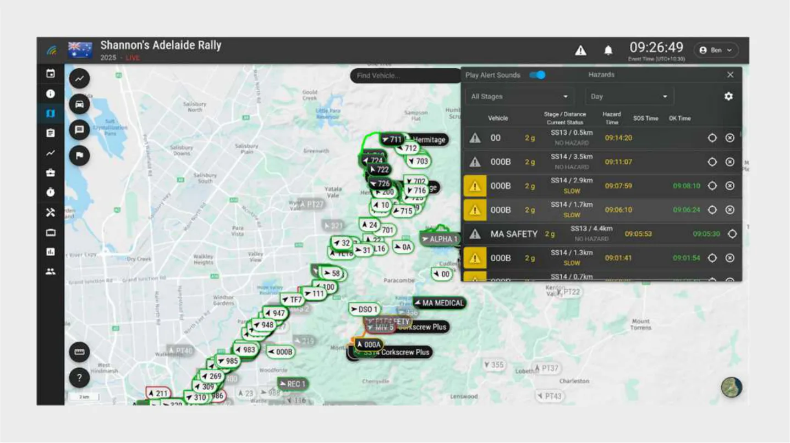
P.653. 安全ドシエ
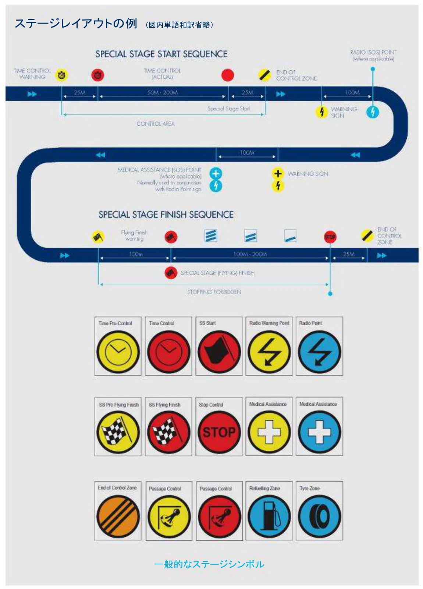
P.663.9 シケイン
シケインの要素の正確な位置は、それらが位置から外れた場合にそれらが再配置されることができるように塗装線によって明確にマークされるべきです。
シケインは、スペシャルステージで特定の危険性の高い場所の手前で速度を下げるために使用できますが、可能な限りシケインが必要とされない場所にステージルートを計画することが望ましいです。すべてのシケインはロードブックに記載されている必要があり、すでにマークされているか、またはレッキ中に所定の位置にある必要があります。
トラッキングシステムが対応可能である場合、速度低減が必要であるものの通常のシケインを設置できないエリアにおいては、バーチャルシケインの使用が強く推奨される。これは、特に長く幅員の狭い道路に該当する。
ステージ間およびイベント間の一貫性を保つため、壁と壁の間の距離は10 mとしてください。
競技参加者がこれに慣れることができるよう、シェイクダウンにおいてバーチャルシケインを実施することが推奨される。
シケインの方向をゼブラマークまたは矢印でマークし、シケインの前に「100 m」のパネルを置くことが重要です。
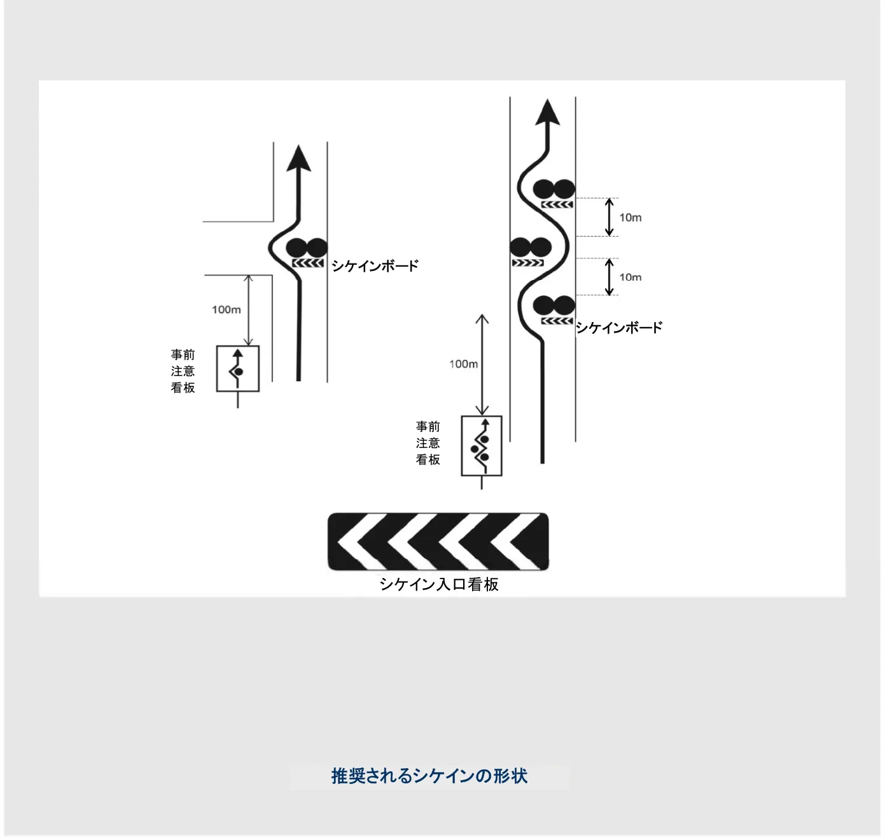
P.673. 安全ドシエ
シケインは以下から作られるべきです：
3.10 コーナーカット
• わら俵（250kg以上）• 水タンク• 接続されたタイヤの壁• 露出した端を保護したコンクリート製の柵
FIA選手権では、約20 x 20 x 38 cm、最低15 kgの重さのブロックを使用することをお勧めします。スティックはプラスチック製であるべきです。
代わりに、わら俵を使用する場合は、それらをプラスチックフィルムでしっかりと包む必要があり、それらを元の位置に素早く戻す手段が提供されなければなりません。
ラリー中、車両がシケインの一部に当たったことによって生じた損傷を修復するために、マーシャルを各シケインに配置する必要があります。無線マーシャルもこの場所にあるべきです。
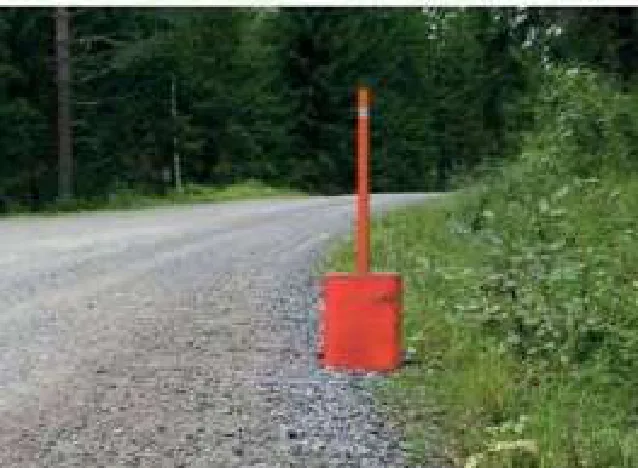
シケインがほんの少しの当たりを超えて損傷していて、それが修理を必要とするならば：
次に：彼らが損傷した領域をリビルドしようとしていのに注意を向けている間、見張りを立て、近づいてくる車両について笛を使って同僚に警告しなさい。この仕事を引き受けるのが安全でないならば、ステージコマンダーに助言し、コマンダーは次の行動を決定するようにラリー管制に通知します。
マーシャルのうちの1人は、シケインに当たった車両を競技長に報告するために審判員として指名されるべきです。衝突を報告する目的でシケインを撮影することは有益でしょう。
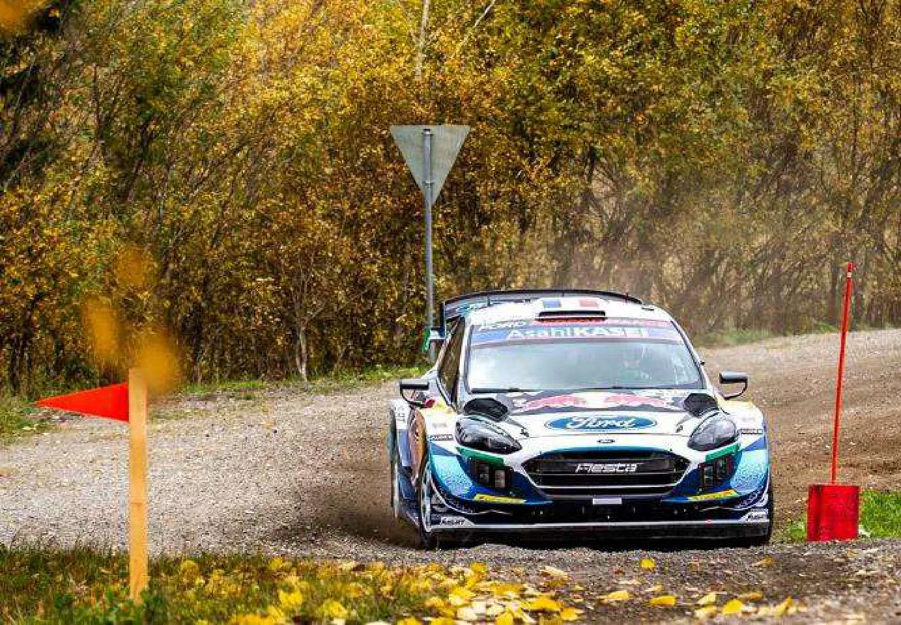
P.68サービスパーク/エリアの基本的基準
3.11サービスパーク
• サービスエリアは、個々のサービスベイ、車両の移動、および安全な歩行者のアクセスに十分なスペースを確保するために適切なサイズにする必要があります。適切に管理された大きなハザードがある場合でも、地面は比較的平らであるべきです。
ラリーでのサービスエリアは、チームがイベントの次のセクションのために競技車両を準備する必死の活動のエリアである場合があります。チーム員、メディア、家族、観客で混みあうサービスベイでは、時間に追われる環境である場合があります。それは人々に重大なリスクを生み出す可能性があるエリアであり、人々が車両に取り組んでそのエリアを観客にとって魅力的にする一方で、これらのリスクを最小限に抑えるために慎重に管理されなければなりません。
• オーガナイザーはサービスパークの制限速度を設定する必要があり、この情報を競技会特別規則書で公表しなければなりません。
• すべてのエントラントは、車両での作業が開始される前に、環境に関するグランドシートを用意します。
エントラント、競技参加者、サービスクルーのメンバーは、自分自身や他の人々の満足できる状態を知っておくべきです。イベントオーガナイザーは、活動を調整し、合理的に実践できる範囲でこれらのエリアの安全要件が満たされていることを確認する最も重要な責任を負います。
• 日よけやポップアップテントなどの一時的な建造物は、風の状態に対処するためにしっかりと十分なバラストを伴いしっかりと建てなければなりません。イベントオーガナイザーによって安全でないと判断された建造物はすべて解体し、撤去する必要があります。
イベントオーガナイザーは、サービスパーク内の各競技チームに「サービスエリアゾーン」を割り当てる必要があります。これらのゾーンは、他のチームや会場にとっての安全性や環境上のリスクを表さないように管理する必要があります。
• 特に溶接や研削が行われている場合や車両に燃料が補給されている場合は、消火器をいつでもすぐに使用できるようにしておく必要があります。
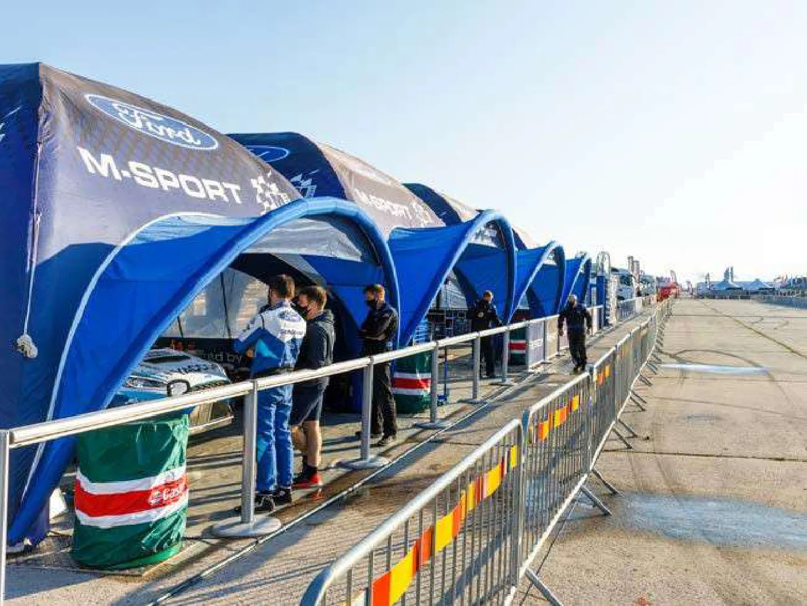
P.693. 安全ドシエ
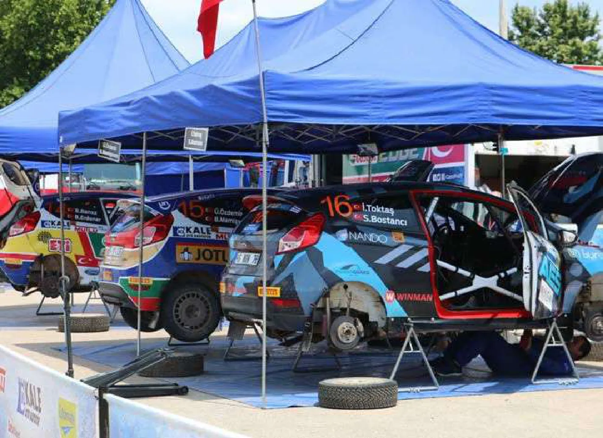
• サービスパークのレイアウトは、必要が生じた場合に緊急車両アクセスを許可しなければなりません。
– 安全エリアが確立され、その中ですべての発火源が取り除かれます。
• オーガナイザーは、火災、負傷、治安事件など、サービスパークの緊急時の手配を確立する責任があります。これらの取り決めは、すべてのエントラントと競技参加者に伝達される必要があります。
– 最小量の燃料が使用され、除去された燃料はすべて密閉容器に保管されます。
• サービスベイは、競技参加者、クルー、隣接するチーム、または一般の人々に容認できないリスクを与えないように管理する必要があります。
• トロリーや他の種類のジャッキで空中に持ち上げた場合、車両はすべてベースプレート付きのアクスルスタンド、シャシーシルスタンド、またはランプで支える必要があります。車の上昇または下降が行われているときに他の作業を試みるべきではありません。
• 垂下ケーブルとホースはつまずきの危険を生み出すことを許されるべきではなく、ケーブル保護で覆われていない限り、アクセスや道路を横切って走らせるべきではありません。
• 必要に応じて、サービスの一環として、燃料タンク、燃料ポンプ、燃料フィルタ、または燃料回路のその他の部品を交換し、燃料タンクを空にする、および/または補給することが許可されます。但し以下を条件とします：
• サービスクルーおよび競参加技者は、サービスパーク内の場所にいる間に経験された寒さ、湿気または熱への長期間の暴露に注意し、それに応じた服装をする必要があります。
– 作業はオーガナイザーが認知している上で行われます。
• エントラントは、スポーツ規則や競技特別規則書の要件を常に遵守する義務を念頭に置いています。
– オペレータのいる消火器が待機中であること。
– この作業中は、他の作業は行われません。
P.70電気の安全
廃棄物
• すべての電気機器は安全な状態に維持する必要があります。• 外部で使用されるすべての電気機器は耐候性があり、工具は感電に対して絶縁されている必要があります。• 可燃性の蒸気が存在する場所では、電気機器や手工具を使用することはできません。
• エントラントはコンテナ、梱包用品、タイヤ、オイルなどを含むすべての廃棄物をサービスパークから取り除かなければなりません。それらは環境法に従って処分されなければなりません。• 現場の一般廃棄物処理施設を使用して、有害物質または有害物質で汚染されている物質を処分してはいけません。これらは、廃棄物規制に従って隔離して処分しなければなりません。車両の安全性
火災予防策
• すべての競技車両およびサービス車両は適切な消火器を携帯する必要があります。• 調理電化製品を照らす前に、特別な考慮を払うべきです。• すべての発火源は、燃料貯蔵庫や燃料補給エリアから遠ざける必要があります。• 消火器は、使用時以外は、既知の場所から移動しないでください。火災が発生した場合は、サービスパークを出る前にイベントのオーガナイザーに報告する必要があります。• オーガナイザーは、火災を防ぐための緊急計画を整備する責任があります。
• インシデントに対応する緊急車両を除き、サービスパーク内では常に定められた制限速度を守らなければなりません。
• サービスパークには歩行者がいるかもしれません。このような状況では、衝突を避けるために特別な注意を払う必要があり、歩行者用ルートを分離するために実用的な場合はオーガナイザーが作業を行う必要があります。
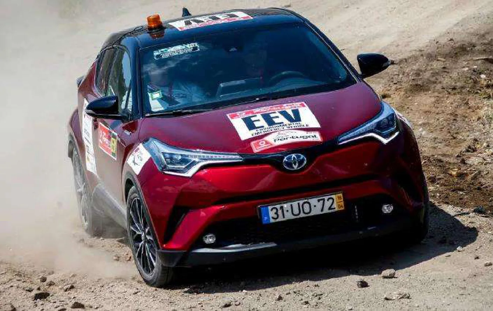
P.713. 安全ドシエ
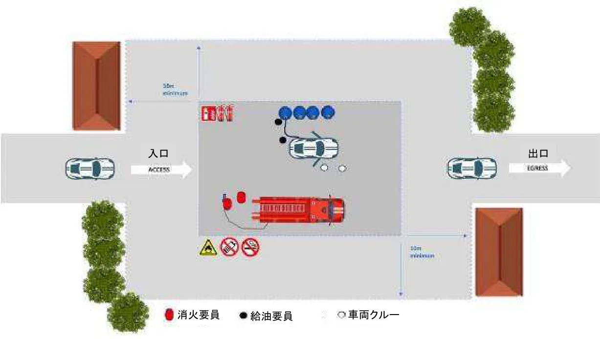
3.12競技車両の給油
給油ゾーン
そのラリーのオーガナイザーは、そのイベントのための給油の取り決めを決定し、燃料の流出、火災、その他の事故の危険を管理するための適切な措置を講じなければなりません。燃料補給の手配やリスクのレベルを決定する際に、オーガナイザーは自分たちのイベントにとって実用的なものとサービスパークで利用可能な選択肢を考慮する必要があります。
燃料の貯蔵と分配を管理し調整する責任はオーガナイザーにあります。リスク評価、安全計画、およびインシデント計画が必要です。セルフ給油燃料の貯蔵と分配を管理し調整する責任はイベントオーガナイザーにあるままです。しかし、彼らは活動を直接管理することはできないため、安全要件事項をエントラント/競技参加者に渡します。リスク評価、安全計画、およびインシデント計画が必要です。オーガナイザーはセルフ給油エリアの安全を監視する責任があります。燃料の供給が行われている間は、常に防火カバーが設置されていなければなりません。その場所は、一般人の立ち入りができないように保護されなければならず、理想的には高さ2mのフェンスで保護され、環境用の流出防止マットが敷かれていなければなりません。
ラリーの給油について4つのオプションがあります：
商業用給油所から燃料を汲み上げる
すべての給油はイベントから分離された商業用給油施設で行われるので、このオプションでオーガナイザーが責任を負うことはありません。一般的には、道路脇の給油所で利用可能な市販の燃料の使用を望むクルーのためのオプションとなります。ただし、通過するラリーカーのためにイベントに専用の給油ポンプ数が用意されていない限り、競技フィールド全体が市販の給油ステーションを利用するという選択肢はありません。そうでなければ、リエゾン時間枠範囲では対応しきれない行列を作ることとなるでしょう。
競技参加者 – 最良の実地
専門の燃料の製造者
商業的な給油所から離れた所にあるすべての給油場所で、クルーは2人ともラリー車から降りることが最良の実地です。給油中に競技車両に内に着座していると、保護用手袋やバラクラバをその時に着用しているとは思えないクルーにとって危険が生じます。給油にかかる時間を考えれば、給油中、クルーには車から降りてもらうように頼むことは大きな負担にはなりません。
オーガナイザーは全体的な責任を維持しますが、任務を有能なサプライヤーに委任します。リスク管理のための契約者の取り決めは、それでもイベントオーガナイザーによって検証され、安全システムが整っていることを確認するためのチェックが行われるべきです。
P.72• 理想的には、燃料補給は手持ちコンテナからではなく、手動ポンプで行う必要があります。• 理想的には、燃料補給は手持ちコンテナからではなく、手動ポンプで行う必要があります。• ガソリンは燃料としてのみ使用され、他の目的には使用されません。• 車両への燃料補給はすべて屋外で行われます。喫煙やその他の発火源は禁止し、安全な場所には消火器を持った操作員を待機させる必要があります。• 消火器を持って待機している人も含めて、給油を行う人は、グローブや目の保護具を含む保護服を必ず着用してください。• 給油エリア内では携帯電話や無線通信の使用は厳しく禁止されるべきです。
世界ラリー選手権およびレジョナルラリー選手権イベントにおいては、現在、競技参加者が常に給油プロセス中に車両から降りることが求められる規定となっています。
リスク管理
イベント給油の手配をする際には、以下のことを考慮する必要があります：
• 燃料の輸送、漏洩の危険性および安全性法の遵守。燃料を現場に運搬するための手配は、競技参加者/エントラントの責任です。オーガナイザーは、現場での燃料の移動を考慮する必要があります。• 適切な容器を含む燃料の保管方法、保管場所の明確な指定および車両による衝撃からの保護。コンテナは、漏れがない、しっかりと密閉され、「ガソリン — 引火物（Petrol - Highly Flammable）」と適切に表示された状態で、修理が完了した状態でなければなりません。• 燃料の貯蔵に使用されるエリアは直射日光の当たる場所にあってはなりません。• 分配装置のあるエリアの管理は、ピットガレージ、サービススペース/ピッチ、敷地内の建物、隣接施設または人々のグループから約10メートル離れている必要があります。• 可燃物または発火源の除去。• 給油エリアからの明確な出入りの維持。火災におよび漏洩に対処するための施設の提供、および適切な緊急時措置を講じます。適切な数の消火器（乾燥粉末およびAFFF）を用意しなければなりません。• 未許可の人によるアクセスを防止するための、この地域の適切なセキュリティ。• 環境を守ること。燃料補給は、封鎖タンクまたは分離タンクのいずれかを使って、不浸透性の表面で実行する必要があります。• 適切な個人用保護具が、燃料を配給する人々によって着用されること。• 可燃性物質の存在および発火源の禁止を警告するための適切な標識があること。燃料の貯蔵と使用• オーガナイザーは、指定された給油ゾーンを優先して、給油のための適切な手配を確立しなければなりません。• サービスベイで燃料補給が許可されている場合、これは車両がそこを去る前に実行される最後の作業です。燃料補給を開始する前に、車両を支えスタンドから外し、四輪すべてを地面に置き、その他の作業をすべて中止し、乗員がいないようにしてください。
緊急管理
緊急計画は、イベントに関連するリスクに合わせて調整する必要があります。
• 管理者。• 流出または火災の際に必要な措置。• 緊急事態に対処するための連絡方法と手順。• 緊急サービスに連絡するための手配。
P.733. 安全ドシエ
3.13電気ラリーカー
イベント前に、観客に対し電気自動車やハイブリッドカ
2022年にはRally1車両がWRCに、またハイブリッド技術が導入されました。レジョナルラリー選手権では、完全な電気自動車がステージで競い合う様子も見られました。電気推進力を持つこれらの車両の登場は、ラリーへの新たな関心を呼び起こします。新しい技術は歓迎されますが、競技参加者、オーガナイザー、マーシャル、観客にとって安全な方法でスポーツを継続するために、新しい方法を取り入れ、適応させなければなりません。
ーの違いについてや、さまざまな警告信号の意味についてメッセージを送ること。ライト表示状態RESS表示状態緑安全赤点滅危険（システム不良）点灯無し安全でないと考えられる車両に触れないこと
すべての電気自動車は、すべての道路走行車両に適用される型式承認基準を満たさなければなりません。これらの基準に加えて、車両はFIAによって定められた規定を満たさなければなりません。これらは、国際モータースポーツ競技規則（ISC）付則J項第 253条、第18条22項に概説されています。
そのゾーンを設定するための、いくつかの重要なポイントを以下に示します。 電気的故障のある車両を安全に駐車できる空きエリア イージーアクセスゾーン（ステージから戻る回収トラック
電気ラリーカーの安全な運転には、高電圧システムの恒久的な監視が重要です。 マスターアラームインジケーターは、競技車両の内外に見える光信号によって、高電圧システムのステータスに関する情報を提供します。センサーシステムは、高電圧システムの障害を即座に報告し、故障が修正されるとコックピットエリアの内側または外側からスイッチを切ることができます。
用）
耐候性の仮設構造物（手で移動可能）
寸法：車両の周囲に最低3mの距離を確保（電気的安全確保 の場合は1.25mの距離+機器と人員の作業距離2m） 他の建物/インフラ/人口から隔離されているエリア（熱、炎、煙など）
安全ドシエでは、各警告灯が何を意味するのかを強調しなければならず、これをマーシャルのブリーフィングで繰り返す必要があります。 同じメッセージをソーシャルメディアキャンペーンを通じて観客に宣伝し、車両に近づくマーシャルや観客がシステムに問題があることに気づかなければならず、車両に近づく手前で専門家の到着を待つ必要があります。
緊急出動/回収車両（消防車）へのアクセスを許可する 水源へのアクセスが必要（10～15,000リットル） － バッテリー発火による化学的リスク（バッテリーの液漏れ）を安全に管理。
電気自動車やハイブリッドカーが参加するイベントでは、以下の準備が必要です：
• 各スペシャルステージで高電圧の訓練を受けたスタッフ － ADAC FIUのような、またはTIV車両で訓練を受けたチーム。
• スペシャルステージのマーシャルとサービスエリアのマーシャルのためのイベント前のトレーニング。
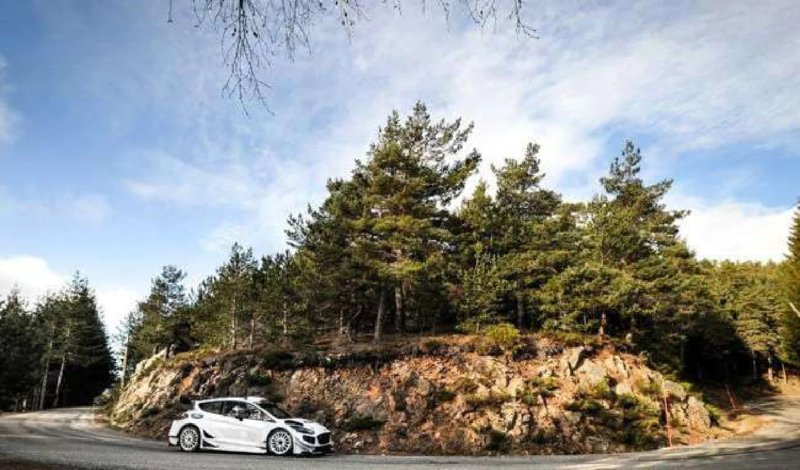
3.14 プライベートテストのための推奨事項
事件発生のリスクは、競技参加者のテスト中もイベント中と同じくらい高いです。ラリーカーが競技スピードで運転されているところはどこでも事故が起こる危険があることを認識しなければなりません。
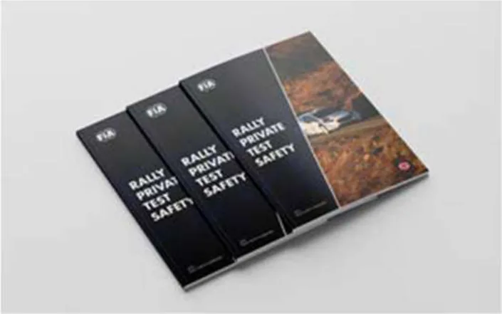
すべての私的テストでは、次のことを計画する必要があります：
• 救急車と救急救命士の立ち合い• 試験道路のスタート地点、フィニッシュ地点、そしてすべてのエリアを確保するアクセス道路／小道にマーシャルの配置• テストエリア、スタート、フィニッシュそしてすべてのアクセス道路へのアプローチを知らせるすべての警告サインは。 テストエリアに近づく人は誰でもテスト道路に到着する前にこれらの警告サインの少なくとも3つを通過するべきです。• ステージのスタートとフィニッシュ、一切のアクセス道路間の無線通信。• 観客ゾーン、観客アクセス、NO-GO立ち入り禁止エリアの計画。
スペシャルステージでラリーカーが走っているのを見るのは、いつも爽快な体験です。 チームのテスト日にアクセスできるラリーファンは、実際のラリーよりも混雑していない環境で、1日に何度もラリー車とドライバーに会うことができることを知っています。
ラリーテストオーガナイザーは、現地全体を管理し、すべての人の安全を強化し、スポーツを保護するために、テスト前の計画へ、観客のアクセス、コントロールを含める必要があります。
ラリーテストの場合、以下の安全チェックリストは、すべてのテストオーガナイザーが提起されたポイントを検討し、それに基づいて行動したことを確認するための優れたガイドです。
FIAは、テストオーガナイザーがラリープライベートテスト中の安全性を向上させるのに役立つガイドラインを公開しています。このために作成されたガイドラインは、すべてのラリーテストに関連しています。

ラリープライベートテスト安全チェックリスト
通知 保存 印刷 クリア本書類の目的は貴殿のプライベートテストが開始される前に、すべての安全策が講じられていることを確実にするためのものです。ステージはラリープライベートテスト安全ガイドラインおよびラリー安全ガイドラインに従って設営されるべきです。テスト前にチームとテストオーガナイザーと共に書式を記入し、各テスト日の最初のレッキ／走行の前に安全チェックリストを完成させてください。チーム情報テストと安全を担当するチーム員： テスト中の携帯電話番号（国際フォーマット表記）：テストオーガナイザー情報会社名所在地国際電話番号国テストおよび安全の担当者テスト中の携帯電話番号（国際フォーマット表記）：テストベース情報国地域町道名称／番号路面車両（含複数）情報車両台数ラリー１ 0 ラリー２ 0 ラリー３ 0 ラリー４ 0 ラリー５ 0 その他 明記0 1
ラリープライベートテスト安全チェックリスト
最初のレッキ／走行の前に安全チェックリストを完成させてください。頁１にて記されているように、最初のレッキ／走行の前にチームとテストオーガナイザー代表者と共にこのセクションを記入してください。テストロードマップ番号（上記テストロードマップ詳細＃に従う）： 1 テスト日： テスト開始時刻： テスト終了時刻： 最寄りの病院： 緊急携帯電話番号（国際フォーマット表記）： テストロード計画上の詳細マーシャル数： 現地の実際のマーシャル数： 追加のマーシャル数： 無線台数： 追加の無線／バッテリー数： 頁１にて記されているように、最初のレッキ／走行の前にチームとテストオーガナイザー代表者と共に、入口から出口道路閉鎖標識までのステージを全体に渡って、以下の安全チェックリストを記入しながら走行する十分な時間を確保してください。何か不足していることがあれば、テストを開始する前に、強力なバックアップソリューションがあるようにし、オブザベーションのセクションに報告してください。□公式書類および認可がテストオーガナイザーにより正式に得られている□マーシャルブリーフィングがなされた□スタートライン閉鎖公衆警告標識□各マーシャルの無線□全てのマーシャルが安全で専用の位置についている□「一般の立ち入り禁止」標識□各マーシャルポイントの赤旗配備□すべての分岐合流点が安全に閉鎖されている□公衆の立ち入りが認められるゾーンにテープ張り□消火器が利用可能□脱出用道路に駐車なし／無人状態□医師／救急車チーム準備□フィニッシュライン閉鎖公衆警告標識その日を通して数回リストを調べること、特に長時間のメンテナンスやランチ休憩の後は、車のいない時間に人は移動しやすいということを忘れないようにしてください。一日を通じて一般の人が到着するのを注意していること。時折予期しない方向から人が入ってくる場合があります。安全は最優先されることを忘れないように。疑いがあれば状況を是正するため、一時的にテストを中断することを躊躇わないこと。5
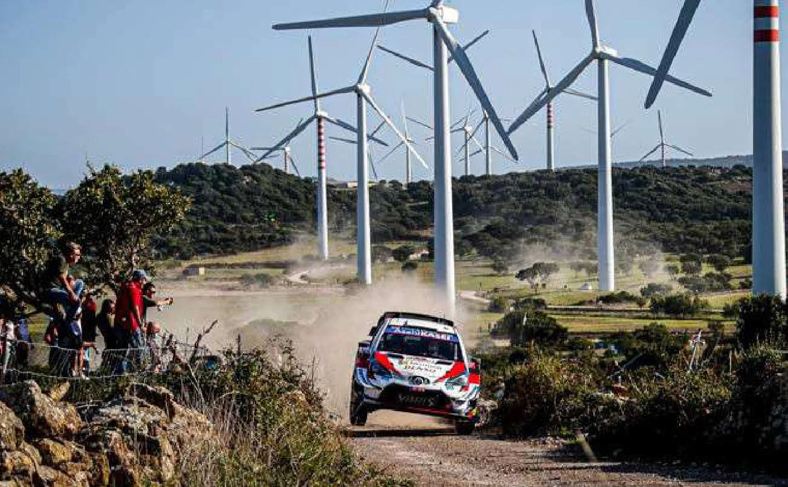
3.15環境方針
これらの文書は、FIAの環境への取り組み戦略に関するいくつかの出版物の一部であり、モータースポーツにおける環境管理のベストプラクティスに焦点を当てています。それらは彼らの組織に環境管理を導入するか、または強化するために、世界中でモータースポーツ関係者によってテンプレートとして使用されるように設計されています。
https://www.fia.com/environmental-accreditation
イベントでは環境チャンピオンを指名し、イベントチームのシニアメンバーの支持とコミットメントの達成を目指し、環境への影響と持続可能性があらゆる行動において考慮されるようにすべきです。
主な目的は、環境管理の問題に対する意識を高め、さまざまなFIA利害関係者による環境イニシアチブの採用を促進するためのガイダンスを提供することです。
3.16 障害とアクセシビリティ
すべての競技参加者、競技役員、ボランティアおよび観客が安全で慎重な方法でスポーツにアクセスして楽しむことができることを保証できるようにするために、すべての十分な考慮を払わなければなりません。
FIAは、この目的を達成するために多層戦略を採用しています。
• まず、ベストプラクティスの枠組みを提供しました。
競技役員、ボランティア、観客にとって、すべての人が利用しやすいことは、イベントで計画されている、あらゆることの最前線になければなりません。
• 第二に、FIAは、そのフレームワークを採用したいと考えている利害関係者のための認定ガイドラインを作成しました。
• 第三に、ＦＩＡは利害関係者が環境パフォーマンスの観点から彼らの基準レベルを確認することを可能にすると同時に彼らの環境パフォーマンスのレベルを上げるための要件を特定することを可能にする認定チェックリストを開発しました。そして
ISCの付則L項の第10条と第11条は、競技参加者に関するこの件に関する規定の詳細を示しています。
• 最後に、FIAは、さまざまな利害関係者を対象に、参照を容易にするためのガイダンスの要約版を提供しています。
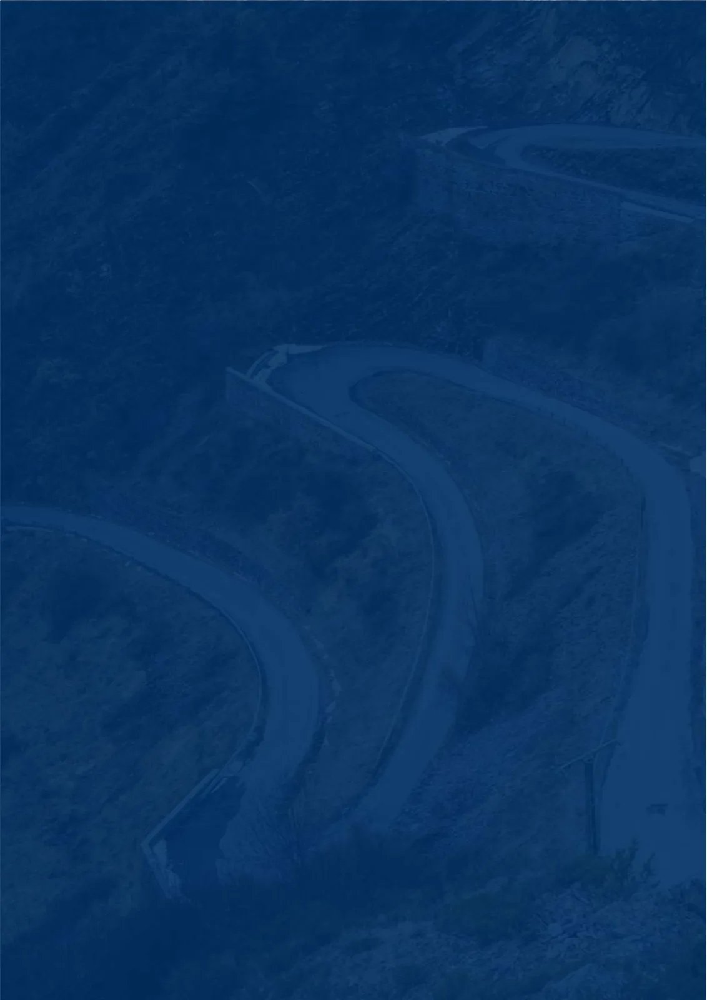
P.794/スペシャルステージ選択
4.1 リスペシャルステージ選択
4.2 タイヤウォーミングゾーン（TWZ）
4.3 スタート、フィニッシュ＆ストップライン
4.4 リスクの特定
4.5 ガードレールおよびその他障害の保護
4.6 砂漠地帯で行われるステージ
P.814/スペシャルステージ選択
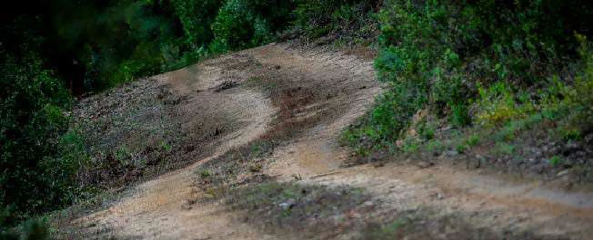
• 高速度ポイントはありますか？これらの領域は長時間の高速度ですか？ • 競技車両からGPS追跡を入手できますか？
4.1 スペシャルステージ選択
スペシャルステージの選択は、競技参加者、マーシャル、観客、メディア、一般の人々のため、イベント全体の安全性にとって非常に重要です。
ステージを適切または不適切なものにするための簡単な基準はありません。 ステージの進行方向、１日の中の時刻、または１年の中の季節によっても変わる可能性があります。
歴史的に、このステージを実行した経験はどうでしたか？
• 過去に競技参加者が関与したインシデントはどこでありますか？ • 以前のセーフティデリゲートのレポートから入手できる情報は何ですか？ • この場所での観客の経験についてどのような情報がありますか？
スペシャルステージ選択の多くは、ドキュメントからではなく、経験と知識から行われます。
このセクションの目的は、スペシャルステージを選択するときに下す決定に重みを加えることです。
過去に実行されていたスペシャルステージを選択する。
– ステージへまたステージからの交通管理はどのように行われていましたか？
ステージ選択に関して、イベントオーガナイザーが利用できるツールは何ですか？
– 混雑していましたか？
• 両方の方向でステージを実行した経験はありますか？ • 以前に実行されたステージのオンボード映像は何がありますか？ • 以前の実施のスペシャルステージに沿った速度を測定したデータはありますか？ • 平均速度は、スペシャルステージの適合性の指標ではありませんが、選択の際の考慮事項の1つです。高速セクションは必ずしも危険ではありません。大きな落差があったり、崖があったり、樹木が茂っていたり、突然のコーナーやジャンプがあったりと、周囲の環境次第で危険度は変わってきます。ステージ全体の平均速度ではなく、そのセクションの速度に影響されるすべての要素が考慮されるのです。
– 受傷はありましたか？ つまずきや転倒？
– 競技車両と観客の間にニアミスがある場所がありましたか？
– 観客は指定された場所から予期しない場所へと溢れ出ましたか？
• ステージコマンダーおよびマーシャルからのステージに関する歴史的な情報はありますか？
P.82スペシャルステージとしてルートの新しいセクションを検討する
夜間に行われるスペシャルステージ
「夜間ステージ」（早朝または深夜のいずれかの暗闇の時間で実行）では、計画作業に追加の考慮事項を適用する必要があります。
以下のリストは完全なものではありませんが、新しいスペシャルステージを検討する際に必要な考慮事項を示しています。
• 観客通路のアクセスルートは、駐車場エリアからのアクセスルートを照らすために照明の恩恵を受ける必要があります。
• 提案されている特別なステージの長さはどのくらいですか？
• それは、ラリーの競技性とプロモーションの特徴を追加する道ですか？
• マーシャルは自分の位置を強調するために反射タバードを持たなければなりません。
• 競技参加者、MIV、救急車、回収ユニットのアクセス道路は適切ですか？
• 観客のアクセスルートは、多い交通流量も受け入れられますか？
• スペシャルステージのタイムコントロール、開始および停止コントロールでは、これらのエリアに照明をする必要があります。
• 予想される観客数に適した駐車場はありますか？
• 割り当てられた観客の観覧エリアはどのような容量を受け入れますか？
• 無線ポイントとスペシャルステージでのジャンクションは、ラリー交通の方向で点灯し、無線オペレーターがその場所を通過する車両の競技番号を監視できるようにする必要があります。
• スペシャルステージ（同じステージ内でラリーカーが同じセクションを2回通過するセクション）内でのループの使用は避けた方がよいでしょう。2台の車両の合間のタイムを管理するのは非常に困難です。 衝突の危険につながる可能性があるものであり、または事故時の安全サービスの管理のために。
• マーシャルの場所にはトーチが必要です。
• すべてのMIVおよび回収車両は、救助または回収作業を支援するためにポータブル照明ユニットを携帯する必要があります。
• 競技車両が強力な競技用照明を使用することを考えれば、ドライバーを眩惑させる可能性のある反射率の高いステージ標識/備品または公共道路標識の使用には考慮が必要です。
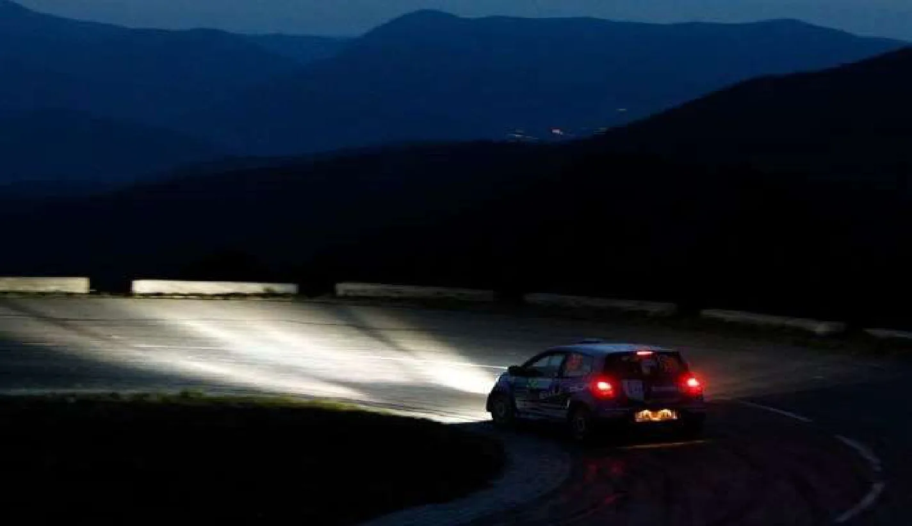
P.834.スペシャルステージ選択
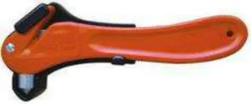
• 競技参加者は、ブリーフィングで、ラリーカーが停止するか、スペシャルステージを出る場所の少なくとも50m前に反射する赤い三角形を配置することの重要性を思い出す必要があります。
オーガナイザーは、もしあれば、これらの活動制限を知る必要があります。
ウォーターハザード
いかなる水域も、競技者、ボランティア、オフィシャルおよび観客にとって重大な危険を伴うものであり、これには以下が含まれる。・湖・沿岸エリア（海）・屋外水泳プール・ダム
水の周りのエリアを保護して、ステージルートを離れた車両を止めることは可能ですか？
可能な限り、水に入る可能性のあるすべてのポイントがマーシャルの視界内に収まるようにしてください。
ウォーターハザードと並行して暗闇の中でステージを実行することは受け入れられないと見なされます。
上記に加えて、異常気象（洪水）によって生じた水域も重大なリスクとみなす必要があります。
すべての競技車両は、車両のコクピット内にドライバーとコ・ドライバーの両方が簡単に手の届く範囲にハンマー端部を含むハーネス切断ツールを備えていなければならない。競技座席にベルトを締めて着座している時にいずれかのクルーが、２つの切断ツールに届くことを確実にしなければならない。
競技車がマーシャルによって見えないところでウォーターハザードに入るリスクは重大です。
車両が水没したときにクルーが車両に閉じ込められるリスクは非常に重大です。
スペシャルステージにウォーターハザードが存在する場合、その具体的な情報を事前にチームおよび競技者に共有することを強くお勧めします。
理想的には、計画されたルートは、イベントを通してウォーターハザードを回避していることです。これは完全に可能ではない場合があるため、すべてのリスク削減対策が講じられていることを確認するための予防措置を講じる必要があると認識されています。
トンネル
可能な限り、スペシャルステージにトンネルを設置することは避けるべきです。事件や事故が発生した場合、競技参加者、医療/レスキュー/リカバリー要員、観客に重大な危険やリスクをもたらす可能性があります。定義上、トンネルの最小長さは世界中で 50～150 メートルと異なりますが、比較的短いトンネルでも事故や事件が発生した場合に安全性が損なわれる可能性があるため、避けるべきです。火災が発生するとリスクはさらに高まります。
• スペシャルステージへの水の近さは？
• 競技車が水に到達する可能性を妨げる自然の障害がありますか？
• 水に隣接するエリアへのアプローチは、競技車両が高速または低速となりますか？
• 水の深さは？ 車は完全に水没しますか？比較的浅い水域であっても重大な危険となり得ること、また車両は水中で車輪を下にした状態、横倒し、あるいは逆さまなど、あらゆる姿勢で停止し得ることを念頭に置かなければなりません。
一般的なリスク トンネルの長さが長く、幅および/あるいは高さが制限されている場合、事故/事件または故障が発生した場合に次のようなリスクが生じる可能性があります： 事件/事故または競技車両が故障した場合、クルーが接
• イベントでは、ダイバーとボートをスペシャルステージの実行中に配置することができますか？もしそうなら、これらのダイバーは、風、嵐、日照時間によって、彼らの活動が制限されていますか？
近する後続車両に適切な警告を発することができない。 競技車両、ラリー本部、およびチーム間の通信が妨げら
• 水は潮汐の影響を受けますか／流れが速いですか？
れる。
• 水全体は凍結しており、事故発生時に浸水する可能性がありますか？
P.84 ドライバー/コ・ドライバーの緊急脱出が妨げられる。 消防/医療/レスキュー/リカバリークルーの緊急アクセスが
考慮事項 スペシャルステージの一部としてトンネルの使用を回避
妨げられる。 救助および回収プロセスが妨げられる、および／または遅
できない場合（またはスペシャルステージ間の指定ルートの一部にトンネルがある場合）、包括的なリスク評価に従って完全な緊急/レスキュープランを作成し、次の点を考慮する必要があります。 トンネルの高さと直径 - これにより、医療/レスキューおよ
延する。
火災発生時のリスクトンネルは閉鎖空間であるため、次のような理由でトンネル内での火災は壊滅的な被害をもたらす可能性がある：
びリカバリークルーがすぐにアクセスできますか? トンネルには照明がありますか? トンネルには自動火災検知、スプリンクラー、換気（自然
出入口が制限される
煙の蓄積や放射熱により出入口が制限される可能性が高く、消防隊員、医療、レスキュー要員の緊急アクセスやドライバー/コ・ドライバーの緊急脱出が直ちに制限される。
または補助装置付き）などの固定設備があり、これらのシステムは緊急時に使用できますか? ドライバー/コ・ドライバーが使用できる避難場所または避難所はありますか? 緊急サービス用の代替アクセスポイントはありますか? トンネルの両端に消防とレスキューサービスを配置し、
換気不足
自然換気または補助装置による換気が不足すると、煙の蓄積が激しくなる可能性があります。
十分な持続的な給水、陽圧換気装置 (PPV)、自給式呼吸装置を備える。 トンネルの出入口にマーシャルを配置し、視界を確保す
放射熱が強まる
換気不足と（該当する場合）高さが低いため、トンネル内では熱が急速に蓄積します。トンネルは断熱性の高い空間であるため、火災が急速に広がる可能性があります。
る。 この緊急/レスキュープランは、医療およびレスキューチームが利用できるようにする必要があります。
構造的損傷および剥離のリスクが増加
高熱によりトンネルが破損し、部分的または完全な崩壊につながる可能性があります。
観客が見るためのスペシャルステージを選択する。
観客の場所について考慮すべき項目は次のとおりです。• 高所観戦プラットフォーム• 観戦領域の深さ• 駐車場からのアクセスはどのようなものですか？ • エリアには交差点が必要ですか？もしそうなら、それを設置するための安全な場所はありますか？ • 観客のために観戦場所の周りに自然な保護がありますか？ • 車両のエリアへのアプローチ速度はどのくらいですか？ • ステージが逆方向に実行されている場合、観客エリアは安全ですか？ • 観客のアクセスポイントは、競技車両の退避路と矛盾しますか？
移動距離が長すぎる
トンネルが長くなると、消防士の作業時間が制限され、消火活動と救助活動が遅れます。
ハイブリッド車両または電気自動車の火災ハイブリッド車両または電気自動車が火災に関与している場合（具体的にはハイブリッド/EVユニットが関与している場合）、リチウムイオンの存在により消火活動が長引く可能性があります。トンネル内でこのような事態が発生すると、重大な危険が生じ、追加の資材が必要になります。
P.854.スペシャルステージ選択
ロードストレートオンのTジャンクション
90度カーブ
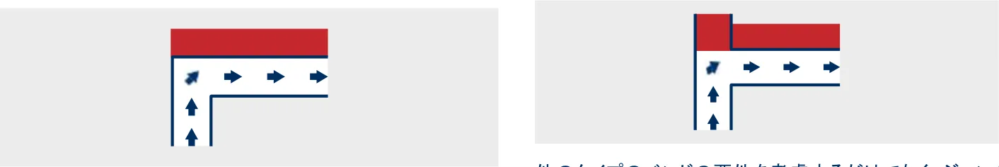
他のタイプのベンドの要件を考慮するだけでなく、ジャンクションでラリールートが左または右に進むTジャンクションは、スペシャルステージの通常の特徴であり、観客にとって自然な魅力となっています。
カーブの外側は、常に観客、マーシャル、またはメディアがスペシャルステージを見るために立ち入ることが禁止されているエリアと見なされます。
ただし、地域の自然な地形によって許される場合、この規則の例外とされます。角の外側が高さ約3メートルの急な土手である場合、土手は頂上に立っている人を保護します。
まっすぐな位置は、すべての人が禁止されているエリアである必要があり、そのエリアは100mの間なにもない状態になっている必要があります。
土手の端は、見物人が滑るリスクを減らすために、端から少なくとも1メートル後ろにテープで留める必要があります。
観客が頂点近くのジャンクションの内側に立つことを許可される場合、次のことを考慮する必要があります。コーナーの内側はラリーカーによって「カット」できますか？
土手は制御不能な車へのランプとして機能しないように、スペシャルステージまで急な降下が必要です。
ジャンクションのブレーキング中に車がコントロールを失い、コーナーの内側になってしまう可能性はありますか？
カーブベンド
アプローチの内側の領域に自然な土手、保護はありますか？
Yラリールートの先の道路とのY字路
曲がり角の外側は常に、観客、マーシャル、またはメディアがスペシャルステージを見るために立つことが禁止されるエリアと見なされます。
ただし、地域の自然な地形によって許される場合、この規則の例外とされます。
他のタイプのベンドの要件を考慮するだけでなく、ジャンクションでラリールートが左または右に進むＹジャンクションは、スペシャルステージの通常の特徴であり、観客にとって自然な魅力となっています。
カーブの外側が高さ約3メートルの急な土手である場合、土手は頂上に立っている人を保護します。
土手の端は、見物人が滑るリスクを減らすために、端から少なくとも1メートル後ろにテープで留める必要があります。
ラリールート右方向での左にそれる方向の非競技路は、すべての人が立ち入り禁止区域とする必要があり、その区域は100mの間なにもない状態にする必要があります。
土手は制御不能な車へのランプとして機能しないように、スペシャルステージまで急な降下が必要です。
観客が頂点近くのジャンクションの内側に立つことを許可される場合、次のことを考慮する必要があります。コーナーの内側はラリーカーによって「カット」できますか？
このタイプのベンドは、競技車をジャンプさせたり、「ふらつかせ」たり、ベンドに到達する前に不安定にしたりする可能性のあるクレストが手前にないことが重要です。
ジャンクションのブレーキング中に車がコントロールを失い、コーナーの内側になってしまう可能性はありますか？
アプローチの内側の領域に自然な土手、保護はありますか？
P.86Sタイプベンド
ラリールートの後方に道路のあるY字路
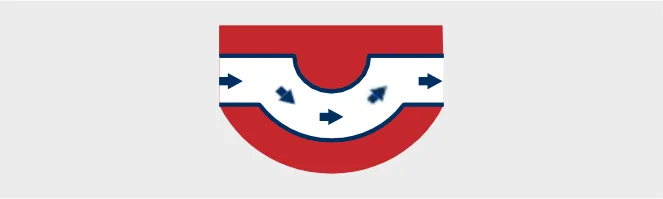
ラリールートが左右にスイープする場合、またはその逆の場合、各ベンドの内側と外側の両方で保護される必要があります。
他のタイプのベンドの要件を考慮するだけでなく、ジャンクションでラリールートが左方向または右方向に進むＹジャンクションは、スペシャルステージの通常の特徴であり、観客にとって自然な魅力となっています。
地形に応じて、車両はカーブを「直線化」する機会を得ることができ、または、コーナーがクレストの後にある場合、車両はジャンピング/「ふらつき」が生じ、このセクションで不安定になる可能性があります。
ラリールートの背後にある左または右への非競技路は、観客が見ることができる場所で、ステージの端から15 mの短いなにもない区間があります。
ただし、地域の自然な地形によって許される場合、この規則の例外とされます。コーナーの外側が高さ約3メートルの急な土手である場合、土手は頂上に立っている人を保護します。
ジャンクションの外側は、90°のコーナーで説明されている高さにない限り、すべての観客、マーシャル、およびメディアの立ち入り禁止エリアである必要があります。
土手の端は、観客が滑り落ちるリスクを減らすために、端から少なくとも1メートル後ろにテープで留める必要があります。
クレスト/ジャンプ
土手は制御不能な車両へのランプとして機能しないように、スペシャルステージまで急勾配が必要です。
十字路、直進
車両がジャンプしたり飛んだりする可能性のある山頂は、最も壮観な眺めです。
車両がクレスト/ジャンプに続いて着地するときの車両の挙動がどうなるかのリスク要素は、予測できない性質のものです。
交差点の出口は、観客へのリスクを減らすための対策が必要なエリアです。
ジャンプ後の100mのエリアは、車両が着陸するエリアの左右にかなりの距離を空けて何もない状態でなければなりません。
一般的な直線路の性質を考えると、速度が高くなる可能性があり、車両をふらつかせる可能性のある道路への傾斜または山のいずれかがある可能性があり、出口を不安定にします。
ステージルートと観客が配置される場所の間に障害物がある場合、このエリアを狭くすることができます。
すべての人員は、交差点を囲む出口エリアを立ち入り禁止とされなければなりません。
遠隔操作のカメラをステージ側に配置することもできますが、この付近にメディアは許可されません。
これより前に道を外れた競技車を止められる障害物がない場合、禁止区域は少なくとも50mでなければなりません。
ジャンプに続くエリアの両側に高いバンクがあるか、スペシャルステージから数メートル後ろに並木がない限り、除外ゾーンの例外は許可されません。
観客は、交差点を左または右に出る道路から30m以内に立つことはできません。
P.874.スペシャルステージ選択
スペシャルステージの適合性を評価するためのデータの使用
これは、将来の学習を高めるために、提案された観客エリア周辺で、またはステージでのインシデント後に調査できる詳細です。
以前に実行されたスペシャルステージの履歴情報を使用して、イベントのステージの適合性を分析する方法を詳しく説明しました。
次のページに、Jembaによって取得されたデータを使用して速度低下対策を挿入する方法と、これがスペシャルステージのタイムにもたらす違いのいくつかの例を示します。
特定の道路でデータを提供できる技術があり、ラリー走行に適しているかどうかを判断するのに役立ちます。
イベント：CEREDIGION 2019プレイベント
そのようなオプションの1つがJembaシステムです。
Jembaシステムは、スペシャルステージの地形を記録します。傾斜、急な傾き、曲がり、クレスト。
一度道路の地形 －グラベルまたはアスファルトが、記録されている場合、このステージに高速で取り組む車両の種類を詳述するデータをインストールすることができます。これはヒストリックカー、ラリー２、またはラリー１です。
これにより、ステージの平均速度、最高速度のエリア、および速度から最もハードなブレーキングが必要なエリアの詳細がわかります。
以下のGoogle Earthトレースは、このスペシャルステージでの速度の変化を示しています。
SS2-要求される対応-提案されたシケインを適用するステージからフィニッシュラインまでの長さ：13.25kms 1 高度：944-1419（間隔：764m）ストップラインまでのステージの長さ：13.73 kms 1000 ステージの最大速度：191KPH（ポジション：2614）推定ステージ時間：6.39 ステージの推定平均速度：191KPH シケイン追加なし。推定ステージ時間：6:32 ステージの推定平均速度：120KPH 停止前の制動距離のマージン：264 * 1000kms （利用可能な制動距離の使用：12％）
色の意味は次のとおりです。紫 － 150kph超。赤 － 90kph超。黄色 － 75～90kph
このトレースは、オーガナイザーが簡単に高さを確認することができます － 道のどのセクション上での速度域。
そしてその後、決定を下すことができます。速度は不必要なリスクを表しますか、そのエリアはシケインのような速度低下対策を必要としますか、それともそのエリアの地形を考慮して受け入れられるものですか？
Jembaでは、ユーザーが各コーナーを詳細に分析することもできます。特定の曲がり角での最大コーナリング速度を確認することができます。
P.88SS 2 - 4.911KMSのシケイン
これにより車両の速度が低下しますが、車両をまっすぐに保つことでダムへのエントリーにも役立ちます。
ガイダンスの目的のため
SS 2推奨実施後の速度トレース
SS 2. 最初の調査では、平均速度が120KPHであることが示されました。
これにより、ステージは平均速度規制のリスクにさらされます。
最初の提案は、4.911KMS地点で4エレメントシケインを導入することです。
これにより、平均速度が1.6KPH低下します。
低速コーナーへのアプローチで左側に待避所をお勧めします。最も効果のある良い場所です（左側の速度トレースを参照）
また、ダムへのアプローチでは、バリアシステムによって車両を右に保つ努力をする必要があると感じます。
P.894.スペシャルステージ選択
SS 1-4-7- 7.37および8.6 KMSで提案されたシケイン
SS 1-4-7- このステージでは調整はほとんど必要なく、8.6Kmsで1つの減速シケインをお勧めします。さらに、外側の池とのジャンクションの前に7.37Kmsで安全シケインを含めることをお勧めします。
また、フィニッシュをジャンクションで14.9 kmに戻し、ストップを15.2 kmに戻しました（視線で300 mを少し超える）。スタートはメインロードから1.17 Km、到着は0.9です。
ガイダンス目的のみ
ガイダンス目的のみ
推奨実施前の速度トレース
ガイダンス目的のみ
シェイクダウン
推奨実施後の速度トレース
シェイクダウンは、イベントが始まる前に開催される場合があるスペシャルステージです。他のスペシャルステージと同じ安全上の配慮とマーシャル数で処理しなければなりません。
P.90以下のように危険度の高い分野を保護するには、さまざまな方法があります：
短い時間の間に競技する車両を2回以上見る機会があるので、スペシャルステージで観客数はもっと多いかもしれません。そのため、スーパースペシャルステージと同じような観客行動があり、追加の観客コントロール対策が必要になる場合があります。
• わら俵（直径1m以上の円形または正方形を推奨）• コンクリート製の柵• サンドバンク（土手）• アースバンド• プラスチック製の水充填バリア• 接続タイヤの壁
セーフティカーは、必要に応じて観客の管理を支援するために、散発的な間隔でステージに入る準備をする必要があります。
露出が大きく、大幅な落差がある場合は、代替ルートが利用可能かどうかを検討するか、競技参加者が正しいルートを明確に認識できるように、カラーメッシュの方法でルート定義を提供します。
シェイクダウンはまた、医療介入テストを実施するための良い機会です。
ジャンクションを閉鎖する - ドライバーのために
4.2 タイヤウォーミングゾーン（TWZ）
すべてのジャンクションには国際的に認められた標識（ゼブラ/シェブロン）を付けて、ドライバーへの正しい運転方向を示します。「ブレインフェード（長時間で頭がぼーっとする状態）」の場合に備え理解しやすく、未使用道路の中央に配置します。ただしステージの端は車両や砂利（石）が当たるため接近しすぎないようにします。
競技用タイヤの最適な性能は、タイヤが動作温度に達するまで発揮されないと認識されています。そのため、競技クルーはリエゾン区間の最後の1kmを使用して、タイヤを温めることができます。タイヤウォーミングゾーンを作ることで、この活動を公道から切り離すことができます。
すべてのイベントにおいて、またすべてのスペシャルステージに、タイムコントロールとスタートラインの間にタイヤウォーミングゾーンが設置できるわけではありません。次のイベントのためスペシャルステージを調査する際に、イベントのルートにこのようなゾーンを設けることが可能かどうか調査を始めるのが、そのイベントのベストプラクティスでしょう。
これは閉鎖道路をマークするために使用できる標識の例です：
サービスブレークや長いリグループの後の最初のステージは、まさにステージ設計にタイヤウォーミングゾーンを組み込まなければなりません。
アクセス道路の閉鎖 - 観客、マーシャル、メディア、一般の人々のために
観客、マーシャル、およびメディアの場所を十分離して確保
タイヤウォーミングゾーンはどのように機能するのですか？
するため、すべてのアクセス道路をSSの端から50mの距離でテープで閉鎖してください。
ゾーンはタイムコントロールとスペシャルステージスタートの間に設置されます。このエリアは最低でも500mの長さが必要で、スペシャルステージのセクションと同じように設定される必要があります。観客は安全な距離を保って控えなければなりません。この区間は、先頭車両の出走予定時刻の30分前から歩行禁止です。すべてにおいて、スペシャルステージと同じように、安全面を考慮し設定されなければなりません。ただし、セーフティカー（MIV、TIV、ドクター等）はスタートラインに残ります。
これは統一性のために赤/白の色のテープであるべきです。
観客は安全な場所に左右に振られるべきです。
マーシャルは常に、観客や一般の人々がSSに入ろうとする
可能性があるアクセス道路または交差点に配置する必要があります。
観客に対する潜在的なリスクを特定することは、あなたのイベントで観客人を管理するための最初のステップであり、安全なイベントを運営するための基本です。
タイヤウォーミングゾーンは、タイムコントロール直後の「TWZボード」から始まり、ステージスタートラインから100m以上手前の「TWZエンド」ボードで終了します。
ルートが確定する前に、地元の経験豊富なドライバーまたはコ・ドライバーが事前にステージを通過して、リスクの高いと認識されているエリアを競技クルーに特定して記録する手助けをすることをお勧めします。
P.914.スペシャルステージ選択
ドクター
タイヤウォーミングゾーンに入る前に、競技クルーはステージをスタートするのと同じように、すべての個人的安全装備を整えていなければなりません。タイヤウォーミングゾーンでの停車や、ラリーの進行方向と逆行する走行は禁止されています。
MIV
FIV
マーシャルのガゼボ（テント）／避難所
競技クルーが「TWZ終了」ボードに到達したら、その時点で歩行速度にまで車速を落とし、スペシャルステージのスタート地点に近づき、ステージのスタート位置に着きます。
救急隊は最初からスペシャルステージへのアクセスを明確にしておかなければならないので、補助車両を移動させることなく迅速に移動できるスペースがなければなりません。
オーガナイザーは、この新しいスペシャルステージへの追加が観客を魅了することを考慮しなければなりません。このエリアでは観客を取り締まるマーシャルが必要かもしれません。このような短い距離での車両の急加速、急ブレーキ、急旋回は、いつもと違う光景になるでしょう。
タイヤウォーミングゾーンの設置場所を決定する際には、常に安全性を第一に考慮しなければなりません。
4.3 スタート、フィニッシュ＆ストップライン
スタートライン （FIA WRC競技規則第４8条1項および48条2項）
スペシャルステージは、スタートライン上に車両を配置したスタンディングスタートから開始します。ステージスタートエリアは、以下の車両を収容するのに十分な広さが必要です。
フライングフィニッシュ（FIA WRC競技規則第49条1項）
ステージのフィニッシュラインと同一の高さであることが必要ですが、ラリーカーがどのような進行方向をとっても、そのインサイドライン上にあることが必要です。道路よりも高台にあり、ステージ端から3m以上離れている必要があります。
フライングフィニッシュの目的は、スペシャルステージのフィニッシュタイムを記録することにあります。フライングフィニッシュは、そのイベントの特定のテストのスピード要素を停止させる場所であるため、慎重な検討が必要です。
フライングフィニッシュの場所では、車両のアクセスができない場合があります。
フライングフィニッシュの位置は、競技参加者にとって挑戦やテストの対象となるものとなるべきではありません。フライングフィニッシュの「ゲート」のすぐ後は直線で、コーナーがあることは絶対に避けるべきです。競技参加者は、フライングフィニッシュの「ゲート」を通過したとたんにスロットルを閉じてしまう可能性があり、これは車両が持っている機械的なグリップに影響を及ぼす可能性があります。クルーが「（気持ちの）スイッチを切った」時にコーナーやクレストに入ったり、ステージ中のグリップ力より低下していたりすると、事故が起こる危険性があります。
ストップライン（FIA WRC競技規則第49条2項）
車両は、タイム認定を受けるために STOP コントロールボードで停止しなければなりません。このタイムは、フライングフィニッシュでビームが切れたときにタイミングシステムから自動的に通知されるか、フライングフィニッシュマーシャルからの無線メッセージで通知されます。
フライングフィニッシュのマーシャルはタイムを把握していますが、車のナンバーを持っていない場合もあるので、ストップラインチームはこの情報をリレーバックして、全員のチェックシートを正しく保つようにしなければなりません。
フライングフィニッシュの「ゲート」からストップラインまでの距離は、競技参加者が過度に減速したりブレーキをかけたりすることなくストップラインで停止できるように、少なくとも 200m 以上あることが必要です。
ストップラインでは、車両がこの場所に到着した際に必要となる場合に備えて、消火器を手元に用意しなければなりません。
フライングフィニッシュの計時マーシャルは、通過する車のタイムを記録できるように保護された場所にいなければならず、飛石に当たったり、誤った車が向かう可能性のある場所にいてはいけません。
ストップラインは、競技のために閉鎖されていない幹線道路や隣接する道路から150m以内に位置してはなりません。
P.934.スペシャルステージ選択
イベントによっては、スペシャルステージを終えたにクルーにすぐにコメントを取ろうとするメディアがストップラインに集まってしまうことがあります。マーシャルは、誰もが安全かつ効率的に任務を遂行できるように、車両が到着する前にメディアとどのように仕事をしたいかの概要を説明しなければなりません。
私たちのスポーツにはリスクが伴うかもしれませんが、そのリスクを管理することが私たちの最も重要な仕事であり、すべての計画の最前線になければなりません。ルートのため、観客の観覧のため、サービスパークでの車検のための計画です。
常識は一般に直接的で計画的な方法でこれらのリスクを管理しますが、これは可能な限りすべてのリスクを減らすためにあなたが経験豊富で責任あるイベントであると安心させる必要がある地方自治体または地主を満足させるものではありません。したがって、あなたは自分がしたことすべてを文書化しなければなりません。
以下の質問を各々の機会に自問自答したという証拠を提供することができれば、あなた自身を助けることになります： 除去可能な危険はすべて取り除き、除去不可能なもの
減速エリア（付則H項第5.5.4.1条）
は保護する。スペシャルステージを設定するためのシンプルなスローガンです。 あなたのマーシャル、オフィシャル、競技参加者そして
観客が直面する危険は何ですか? これらの各危険に付随するリスクは何ですか? イベントとしてどのような対策がすでに整っていますか? 受傷した場合の結果はどのくらい深刻になるでしょうか? 他に何ができるでしょうか?観客に対する潜在的なリスクを特定することは、あなたのイベントで観客を管理するための最初のステップであり、安全なイベントを運営するための基本です。
減速エリアの目的は、クルーに対し、スペシャルステージの終了地点に到達したことを明確に認識させることにある。特に、異なるフィニッシュ位置を有する複数の競技会で頻繁に使用されるステージにおいて、事故が発生している。
ルートを設定した後ではなく、ルートを計画するときに観客へのリスクを考慮する必要があります。
この物理的措置は、ひとつの競技会内において一貫して適用されなければならず、また可能な限り、選手権全体を通じても一貫して適用されなければならない。フライングフィニッシュとストップコントロールとの間の減速エリアは、道路形状に適合した簡易な人工的措置（例：シケイン、スピードバンプ、道路幅員の縮小、またはその他適切な安全対策）を用いて、競技参加者に減速を強いるものでなければならず、その最初の要素は、ストップコントロールの100m手前以降にならない位置に設置されなければならない。
イベントおよび／あるいは観客の安全管理者は、ルート計画段階で関与し、適切な観戦ポイント、出入り口ポイント、駐車場を考慮する必要があります。
あなたのイベントに入場してくる観客へのリスクを効果的に管理しようとする際に注意し、計画すべきことは多くあります。これらについて以下に説明します。また、イベントの運営、前年のイベントの結果報告、およびFIA / ASN セーフティデリゲートから報告された問題についても、運営チームの経験を活かしてください。
4.4 リスクの特定
これまでの経験を活かして、人気のある観戦場所を知り、観客を望む場所に配置し、不適切な場所に行かせないようにするために、マーシャルリングチームが群衆より前にいることを確実にします。
「モータースポーツは危険の可能性があります(Motorsport can be dangerous）」は、イベントによって発行されるすべてのパスの裏側、またはスペシャルステージに近づいているまたはその近くの警告ボードに表示されます。
P.94リスクの特定と評価
ベイルは、ガードレールの端部に対してではなく、端部から約1メートル離れたところに置くべきです。これによって、衝突時にベイルに動きを与え、車両、ベイル、ガードレールすべてが衝突したときに力を吸収するのに役立ちます。
以下に示すのは、危険な領域と観客への危険レベルを特定するのに役立つ考慮すべき点です。
すべての危険度の高い地域は禁止または「立ち入り禁止」地域に指定する必要があります。 これらの領域以外では、リスクを適切なレベルに管理する必要があります。 明らかにラリーには100％安全な場所はありませんが、リスクを管理し、観客やステージ上のすべての人にリスクを明確に伝えていることを確認するために適切な措置を講じる必要があります。
特に、通常の交通とは逆方向に道路を使用する場合、および／あるいは高速区間では、ガードレールの重ね合わせ部のボルトに注意が必要です。
競技車が側面衝突する可能性のある角度で接近する橋梁の欄干についても、同様の処理を行う必要があります。露出した欄干にベイルを設置することで、クルーを衝撃から保護するために十分な吸収力を与えなければなりません。
以下の点を考慮して、リスクを特定します：
前年、特に最後のイベントで、どのような観客のリスクと問題が発生しましたか。それはどこでなぜ発生しましたか？ソーシャルメディアのコメントや観客が撮影したラリーのオンライン映像を利用すること。
その他の危険物の中でも、自然の危険物に分類されることが多い、樹木、崖、突出した岩などはラリーに使用される公道の脇にあるものばかりです。このような個所では、経験豊富なドライバー/コ・ドライバーがイベントの前にスペシャルなステージを走行することで、大きなメリットが得られます。彼らは、接近する速度や路面の変化によって危険が生じる可能性のある場所を認識することができます。
特別な評価が必要なルート変更がありましたか?
特定の観客エリアを運営していますか?
あなたのイベントで観客の数に変化があることを予期していますか?
観客用のルートや計画された駐車場へのアクセスに変更はありますか?
前年に何らかの事件やニアミスがあったとしたら、今年のイベントへの影響はすべて熟考されたのでしょうか?
どんな気象条件が予期されていますか?
あなたはラリーの準備段階でステージ上で行われている作業の影響について知っていますか?
サービスエリアまたはタイムコントロールに展望台がある可能性はありますか？もしそうなら、バラストと固定具をチェックしてください。
繰り返しになりますが、これらのエリアを保護するための最良の方法は、ベイルやタイヤを使用することです。衝撃を吸収してくれるものです。レッキが行われるときには、ベイルでもタイヤでも何か他のものでも、これらの保護アイテムはすべて設置しておかなければなりません。それによって競技参加者はそれらをペースノートにマークすることができます。
道路の一部が狭く、大きな丸いベイルを使用してさらに狭くなる場合は、直線の端を道路の端に保つことができるように、大きな四角いベイルを使用することを検討してください。
可能な限り、「除去可能な危険はすべて取り除き、除去不可能な危険はすべて保護する」というスローガンに従って作業してください。
4.5 ガードレールおよびその他障害の保護
ラリーは、競技会が開催されていない日には他の道路利用者に開放された道路やコースで行われます。そのため、道路脇には競技参加者に危険を及ぼす可能性のあるものが多く設置されていますが、通常の道路交通には危険を及ぼさないものや、実際、交通安全のために設置されているものもあります。
ガードレールは、端部が露出している場合もあれば、ガードされている部分の最初と最後に傾斜している場合もあります。これらの部分は、競技車両を貫通したり、保護するために設計されたハザードを越えて車を打ち上げるための傾斜路として機能してしまう可能性があります。ガードレールのこれらのセクションは、競技者が接近する端部に大きなベールで保護されることが推奨されます。
リスク評価テンプレートの例
| 誰がどのように害を受ける | あなたはすでに | ||
| ハザードとは何か? | |||
| 可能性がありますか | 何をしていますか? | ||
| 1 | |||
| 2 | |||
| 3 |
| このリスクを管理するために、 | |||
| 何かするとすれば、どのような | だれによる行動 | いつまでの行動 | 完了日 |
| 追加の手順を実行できますか? | |||
ステージの安全性に変更を及ぼす事件（インシデント）が発生した場合、マーシャルは直ちに状況を評価し、ステージコマンダーに報告しなければならない。
軽減措置を安全に、または十分な時間内に実施できない場合、当該ステージは中断またはキャンセルされなければならない。
P.964.スペシャルステージ選択
4.6 砂漠地帯で行われるステージ
競技役員およびマーシャルのトレーニング
これは、このガイドラインの他の部分ですでに取り上げられています。追加のトピックは次のとおりです。
ステージを砂漠地帯で開催する場合は、安全レベルを確保するために特別な対策を講じる必要があります。最良の実践を確保するために、この章ではこれらの対策について概説します。
セーフティカーとセーフティーパトロールカーのクルーは、地元の者であるか、その地域と住民について十分な知識を持っていること。
ステージの選択
マーシャルと競技役員には、スポーツ学生協会を利用
このドキュメント全体を通じて、安全はスペシャルステージの選択から始まると常に述べてきました。ラリーのルートを計画する場合、ステージの選択と、競争力のある安全なスペシャルステージの提供が、アイテナリーの検討において最も重要なことです。これは、オープン デザートにおいても変わりません。
するようにしてください。この合意は、イベントに役立ち、学生らのスポーツ組織の経験にも役立ちます。
イベントの前にトレーニングデイを企画します。管理手順、スペシャルステージのセットアップ、事件処理、観客の管理をカバーします。 ラリー終了後に全員のパフォーマンスを見直し、毎年改
スペシャルステージを選ぶ前に考慮すべきこと:
善することを目指します。
避難経路、マーシャルアクセス、観客席へのアクセス道路。
公衆の安全と情報
競技参加者へのリスクを軽減するために対策が必要となる自然災害はありますか?
全員の安全のためにスペシャルステージの安全を確保することは、最も重要です。「安全を確保する」という言葉は、ステージが開催される日だけでなく、イベント前の数週間に行う必要のあるすべての作業も含みます。
地形は競技車両クラスの技術的能力に適していますか?
ステージ全体とラリー管制への無線通信は良好ですか?
ルート沿いのすべての集落、町、企業を訪問し、次の詳細を説明する必要があります。
ステージは以前にも走ったことがありますか? もしそうなら、その過去の経験から何を学べますか?
ラリーの日付
セクションの最高速度や全体の平均速度について懸念はありますか?
スペシャルステージの時間
イベントのスペシャルステージとクローズドステージへのアクセスを確保する際に配慮対象となる、ルート沿いの商業施設、農場、集落がありますか?
コースが閉鎖される開始時間と終了時間
緊急時のステージコマンダー / ラリー管制の連絡先
各地域の地域リーダーと会うことで、ラリーのメッセージが彼らの接触を通じて適切な住民に届くという利点があります。
トレーニング
ラリースペシャルステージの各競技役員とマーシャルの要件は、FIAラリー安全ガイドラインの他の場所で説明されています。
ラリーファン以外の人々への情報提供となるために、地域広告キャンペーンを考案する必要があります。これは、イベントエリア周辺の地域広告とソーシャルメディアメッセージの組み合わせでなければなりません。アルゴリズムによって、希望する視聴者に情報提供できない可能性があるため、ソーシャルメディアだけに頼ることはできません。または、ソーシャルメディアで地域のコミュニティグループを検索し、その方法でコミュニティに情報を届けます。観客エリアに近いステージ内にバナーを設置して、現地の言語で安全メッセージを表示すると役立ちます。
歴史的に、砂漠地帯のステージは、マーシャルがほとんどいない広大なオープンエリアで、ステージが数キロメートルに及ぶ可能性があり、他の道路利用者や市民から100%安全ではない可能性があります。
ラリーカーは今や技術的にさらに高性能になっています。競技参加者はアスリートとしてさらに進化し、10分の1秒も競技に反映されます。オーガナイザーは競技参加者からのこうした要求を受け入れる必要があります。また、競技参加者、マーシャル、競技役員、観客、そしてスポーツに興味がない一般の人々の安全を守る方法も認識する必要があります。これらの関係者を守るプロセスの多くは、コミュニケーションとトレーニングにかかっています。
地元のラリードライバーを広告キャンペーンの前面に出すことは、文章やラリーカーの画像よりも効果的です。FIA とASN からソーシャル メディア ツールキットを入手できます。地元でラリーの運営に関わりたいと考えているボランティアをぜひ活用してください。準備中やステージ当日に何かが起こった場合、地元の知識や連絡先として非常に役立つでしょう。
P.97スペシャルステージの確保
ステージ参加チームがスペシャルステージをコントロールし、安全に管理するのを支援するには、地域の軍・警察と連携することをお勧めします。ラリー管制の上級役員が競技長と共にイベントを監督します。この存在は、上級役員が、必要に応じて、ラリーマーシャルと共に、あらゆる事件または潜在的な事件に人員を配置するよう命令できることを意味します。ステージコマンダーと共にステージスタート地点に軍・警察の人員を配置すると、ステージ全体のセキュリティ対策が強化されます。また、軍・警察の人員が観客エリアやスペシャルステージに車両がアクセスできるエリアでラリーマーシャルを支援できることも確認する必要があります。軍・警察は、常にボランティアマーシャルよりも権限が強いですが、イベント役員と共に作業し、ほとんどの場合、ラリーのリスクを認識していないことを説明する必要があります。
砂漠のスペシャルステージは、競技参加者にとってユニークで素晴らしいチャレンジとなります。このスポーツを宣伝するのに最適な風景を提供します。ラリーは世界中のあらゆる風景や路面を自由に利用できるスポーツであることを示しています。
砂漠の地形は開けていてまばらであるため、イベントオーガナイザーにとっても、その定められたルートを競争力のある、誰にとっても安全なものに設定し、それを維持することが課題となります。
ステージ選択プロセスでは、次の点を特定する必要があります：
危険を特定する：ジャンプ後の着陸エリア、岩の露出、落下
など...
スペシャルステージ全体で、適切な間隔とスポットでMIV、
セーフティーパトロールカーとその任務については、このガイドラインの第2.6章で説明されています。本質的には、これはラリー管制とスペシャル ステージと無線で連絡を取る車両です。スペシャルステージまたは観客ゾーンで発生したあらゆる事件に即座に対応するためにあります。セーフティーパトロールカーは、スペシャルステージのあらゆる事件に対応できるように、可能な限り、実行中のスペシャル ステージの中心となる場所に駐留します。クルーは、地形、地域社会、ラリーの事件への対処方法について十分な現地知識を持ち、現場で独立した判断を下せるようにする必要があります。
TIV、ラジオカーの最適な配置を行います。
観客が集まる可能性のある場所を特定し、セットアップが簡
単に行えるように設計し、安全計画に詳細を描きます。これらの場所に観客用の設備を含めることを忘れないでください。
ステージが以前のイベントで使用されていた場合、これらの
経験からどのような教訓が得られましたか。安全ゾーンをより良く作り上げるために計画する必要がある特定の「ホットスポット」はどこにありますか。
ステージ参加チームには、スペシャルステージはイベントの安全計画に従ってセットアップする必要があることを説明する必要があります。計画からの逸脱は許可されません。安全計画は、当日にステージをチェックするときにセーフティ カーキャラバンが使用するものです。全員が従う必要があります。
ルートを定義するには、自然素材を使用すると便利ですが、コーナーの内側に旗や柵を設置して、競技参加者がルートを過度にカットしないようにすることもできます (金属棒の使用は危険となる可能性があるため避けてください)。オレンジ色の方向矢印の 100 m 手前に 1 つの方向矢印を付けると、競技参加者がルートを識別しやすくなります。ジャンクションでは、シェブロン ボードを使用すれば、競技参加者がスペシャル ステージのこの地点で曲がることを再度確認するのに便利です。
P.995/観客の安全
5.1 リスクのある分野
5.2 セットアップ図
5.3 テープの色
5.4 観客とのコミュニケーション
5.5 マーシャルコミュニケーション
5.6 アシスタント車両
5.7 メディアの安全性と識別
FIA Rally Safety Guidelines 2020 - 89
P.1015/観客の安全
私達はこれまで長い道のりを歩んできた…
これから…
しかし、ラリー観客の安全性を改善するためにやるべきことはまだたくさんあります…
P.1025.1 リスクのある分野
それらは、適切な経験を積んだ個人によって慎重にマーシャリングされる必要があります。
ルートの特定の地点にはどのようなリスクがありますか?
マーシャルのブリーフィングとトレーニングには、これまでに行ってきたリスク管理アプローチの背後にある理論根拠と共に、これらの場所への参照を含める必要があります。
以下の地点でリスクが高い可能性があります
大きな方向の変化 急なコーナー 「S」字カーブ。二度の方向転換 車両が着陸のコントロールを失い、道路を外れる可能性がある
彼らはまた、彼らの配置場所で特定の状況を管理する方法を知っておくべきです。禁止エリアには誰も立ち入ることができません。公共のメンバー、メディアまたはマーシャルも。
場所でのジャンプまたは丘の頂上すぐに 非常に速いセクションの後の惑わされるような曲がり
ステージ全体を見直し、特に観客の安全の観点から注意が必要なセクションを特定したら、これらの重要なポイントを1〜3のスケールで評価することをお勧めします。1は一般的な安全要件です。3になるほどリスクが高くなります。
セクション4 「スペシャルステージ選択 観客が見るためのスペシャルステージを選択する」に詳細があるよう各場所についてその独自の動的リスク評価が必要です。そのためスペシャルステージで遭遇するそれぞれのシナリオを説明できる文章はありません。経験と賢明で整然とした態度が、選択したステージのすべての観客席に対して、一貫したアプローチを可能にします。
カテゴリー1 – リスクが低い
ステージの危険度の低い部分は、適切に説明され識別されたマーシャル、テープ、およびマーカーを配置して管理され、それを越えて観客が通過できないポイントを識別できます。
道路脇
カテゴリー2 – リスクは中程度
中リスクセクションは追加の観客マーシャルが要求されるかもしれないところです。看板によって識別される危険のサインと立ち入り禁止エリア、追加の防護網、そして観客が役人に従うことを確実にするためのセキュリティを配備。そのようなエリアはまた、退避地域が競技参加者の車のために必要とされる場所を認識するでしょう。
上の図は、観客のためのエリアを評価し、どのように設定されるべきかを考慮する際に注意すべき距離の良い指標となります。低いほど、または土手の高さがないほど、観客の列を後方に配置する必要があります。土手の高さがあるほど、観客席をより近くすることができます。しかし、セクション4で述べたことを思い出してください。いかなる土手も道を外れたラリーカーの傾斜発進路にならないようにすることを確実としなければなりません。
カテゴリー3 – リスクが高い
高リスクエリア。ステージ上の高台を除き、すべてのカテゴリー3セクションは、立ち入り禁止エリアとして識別される必要があります。高台は、いかなる道を外れた車両のための傾斜路としても機能しないだろうという査定がなされなければならない。
| 速度 | 低速 | 中速 | 高速 |
| 2m – 3m | |||
| 土手の高さ | 1m | 3mを超える | |
リスク評価の後、あなたは以下のことを識別できるはずです：
指定されるべきである高リスクなエリア 観客用観覧エリアとして特に適しているエリア ルートの他のすべての分野でリスクを管理するための適切な措
エリアがカテゴリー1から3のどのリスクであるかを判断するときには、コーナーの角度についても同じことを考慮する必要があります。
置 立ち入り禁止エリア
コーナーには高速アプローチがありますか、60度以上の角度で、競技参加者の強いブレーキが必要ですか。
これらのエリアは、リスク評価の中で特定され、安全計画の一環として示されている行動の必要があります。
あなたのチームによって獲得された経験豊富なスキルセットを通して、あなたはこれらのエリアと目前の危険性を認識することができるでしょう。あなたの以前の経験を使って人気のある観戦箇所を知り、観客が到着する前に配置につくことができます。
P.1035. 観客の安全
特定の観客エリア図に含めるべき情報は次のとおりです。
高台は通常、より観戦に適した場所です。従って観客が使用できる高台を特定することは、観客エリアを計画するときに役立ちます。
ステージ番号、名前、合計距離、最初の車両の出走予定時刻（FCD） ポスト番号とステージの開始からの距離 ラリールートの方向 道路から観客ゾーンまでの距離 観客ゾーンの高さ テーピングまたは必要とされるバリアの種類 禁止エリア看板の位置の表示 この時点を越えて観客は入れないことの表示 観客のアクセス方向 予測マーシャル数（予測された観客数に基づいてこの
これらのエリアは、それを越えて観客が通過できないポイントを識別するために、適切に説明を受け識別されたマーシャル配備とテープと看板の設置によって簡単に管理することができます。
あなたのリスク評価が確認したすべての危険個所はテープで明らかにされそして/または適切な標識を持つべきです。歩道、ジャンクション、ゲートにはマーシャルが配備されるべきです。
場所を運営するのに必要があると思われるものです） その場所にない場合、最寄りのラジオポイントの方向と
あなたはマーシャルが駐車するステージ上の適切な場所を特定することを望むでしょう。
距離 ダイアグラム内のいずれかの点を説明するための、こ
覚えておいて欲しいのは、制御不能な車でも長距離を運転することができます。危険な場所では、常に歩行者が十分下がっているか、または高台にいることを確認してください。
のエリアに関与する人々への説明メモ
以下も含める必要があります：
交差点 ボックスジャンクション 義務付けの無線配置 セクターオフィシャルの名前 コールサインと無線マーシャルの名前 利用可能であれば他の観客エリアへの通路 特別なメディアの場所（例：撮影クルー） 無線カーの配置 救助/回収の配置 応急処置場所の方向（必要な場合） ホスピタリティ
観客の横断箇所
観客をステージ上のある場所から別の場所に移動させるために、横断箇所を作らなければならないことは、時として避けられない場合があります。このような横断箇所は、安全計画や設営書類に明確に記す必要があります。ステージを横断する観客のための「ホールディングエリア」は、ステージから少なくとも20m後方に設置し、保護する必要があります。横断地点は、大勢の観客を扱うことができる経験が豊かで、かつ競技において観客にステージをいつ横断するよう指示することが安全であるかを知るマーシャルが配置されていなければなりません。
5.2 セットアップ図
ステージチームがイベント安全計画を遵守してステージを準備できるように、各ステージには一貫したフォーマットを採用する必要があります。
P.1055. 観客の安全
グリーンテープ（または各国の「公式」色）
森林ラリー内では、ルートの特定の部分に沿ってツリーラインをテープで固定するのが一般的な方法です。たとえば、車両が泥だらけの状態で滑ると予想される場合、数メートルが大きな違いを生む可能性があります。
グリーンテープ（ネット貼りが望ましい）を使用して、観客に明らかな危険がない観客用に確保されているエリアを示します。これらの観客席ゾーンは観客を収容するために両側を閉鎖してマーシャルによって制御する必要があります。
ツリーラインのステータスを検討してください。木がすべての点でステージに非常に近い場合、または木同士が離れている場合は、最初のツリーラインでテーピングするのは不十分な方法である場合があります
観客制御に用いるテープは、現地の気象条件に適合したものでなければなりません。低温下で脆くなってはならず、高温下で軟化し、又は張力を失ってはなりません。当該テープは、あらゆる条件下において、かつ中程度の荷重を受けた場合においても、その形状を保持しなければなりません。
最初のツリーラインとは対照的に、2番目のツリーラインをテーピングすることを検討してください。
群衆がテープを押す可能性がある場合は、テープを巻くためにロープを使用するか、群衆が潜在的に危険な場所に押し込まれるのを防ぐためにプラスチック製の網またはその他のより実質的な障壁を使用することを検討します。
観客ゾーンは公式イベントプログラムに含まれ、観客はこれらのゾーンにアクセスするために、駐車場やバスなど、できるだけ多くの情報を提供されるべきです。一般の人々は、マーシャルによって許可された「立ち入り可能ゾーン」にのみ入る必要があることを理解しておくべきです。
ルートが設定されたら、イベントが元々行われていた状態の記録を持つために、完成した設定レイアウトの写真やビデオを撮ることは良い習慣です。
「テープがなければ、関係者以外禁止"No tape, no public "」は、特別ステージで観客エリアをマークする方法の新しいスローガンです。
上記のすべては参加している観客の数に関係します。多くの場合、上で説明した場所は、一般に、観客にとってはアクセスしにくいでしょう。計画の成功は観客を管理し制御することができることにかかっています。
観客が色に関係なくテープの後ろに立ち、安全を感じるのは人間の本性です。観客エリアを指定するためだけに、一貫した色のテープを使用することは、彼らが立つことができる場所を観客に強調します。
これを達成するための最良の方法は彼らが行く前に、そこにいることです。早く行動して、観客があなたが望むところにいることを確認してください。
今回の観客エリアのテーピングのみへの変更により、ステージサイドでは観客に何が期待されているのかを啓蒙するための一貫したプロモーションが行われることになります。
5.3 テープの色
「No-Go／立ち入り禁止エリア」の標識は、観客が立ってはいけない場所を示すため、教育プログラムの最初の認識の広がりに使用する必要があります。
FIA世界ラリー選手権では、観客がどこにいるべきかを示すために1色のテープだけを使用することを目指しており、それ以外のものはすべて禁止エリアのマークが付いています。
またこの標識の使用は、ラリーオーガナイザーと地方自治体が協力して、ラリーにおいてなによりも安全に対する責任ある姿勢を示すためにも有効であることが証明されています。
ただし、一部の国ではまだ準備が整っておらず、「Go－立ち入り可」と「No-Go－立ち入り禁止」のエリアを示すために2色のテープを使用しています。
P.106 危険な状態がある場合、スペシャルステージがキャン
好ましいテープ色は緑色です。国によっては、この色がスポーツイベントでは認められていない、または認可されていないことがあります。重要なのは、どのような色を選択するにしても、イベント全体で一貫性があり、一般の人々へのメッセージに一貫性があることです。
セルされることを確実にするために、競技長は、最高安全責任者、ならびにゼロカー（および存在する場合はFIAセーフティおよびメディカルデリゲート）のクルーの勧告を考慮に入れるべきです。 スペシャルステージやスーパースペシャルステージで
スペシャルステージのすべてのジャンクションは、道路へのアクセスを確保するためにテープを貼る必要があります。これは、スペシャルステージで見られる唯一の他の色のテープであるべきです。これはシェブロンボードに似た赤/白のテープで、ステージから3メートル後方に設置してください。
多数の観客が予定されている場合は、特別な手段で保護し、適切なゾーンをこの会場に用意する必要があります。
30分の警告がマーシャルによって与えられた後、大衆がスペシャルステージのルートに沿って移動のを防ぐべきです。
各ジャンクションでは、安全性と観客のアクセスを評価する必要があります。観客の可能性がある場合は、赤/白のボックスジャンクションの後ろに緑色の観客用テープを貼り、観客が自分の観戦場所がどこにあるのかを明確にする必要があります。
スペシャルステージ中の公衆の安全を確保するために、十分な数のマーシャルまたは公の秩序当局（警察、軍など）が存在するべきです。 マーシャルは、FIA付則H項の第5条2.6で推奨されて
観客の安全のためのキーポイント
いるように、明確に識別可能なタバードを着用するべきです。
観客に警告し、必要に応じて、危険性の高い場所にいる観
客を確実にそれらの地域から排除するため、FIA付則H項の第5条4.5に記載されているように対策を講じるべきです。
スペシャルステージは、それらの間の観客の安全な移動を可能にするように配置され予定が組まれるべきです。
危険度の高いエリアは安全計画で特定されなければなりま
せん。オーガナイザーは、必要に応じて公の秩序当局の助けを借りて、大衆の到着のかなり前に、安全計画に準拠して危険エリアを特定し、境を画定するべきです。
P.1075. 観客の安全
5.4 観客とのコミュニケーション
スペシャルステージへの観客のアクセスは観客ゾーンでの
み推奨されるべきです。
観客にどんなメッセージを送っていますか? イベントのオーガナイザーとして、見込み客がイベントに関する情報にアクセスできるようにする必要がありますが、観客にリスクを認識させるための重要な役割もあります。観客との良好なコミュニケーションは、すべての人にとって極めて重要です。イベント前の宣伝は、一般の人々があなたのイベントを認識し、それらのイベントの観戦に受け入れられる特定の領域があることを知るために不可欠です。あなたのメッセージが明確で、スポーツ業界用語を含まないようにしてください。彼らが選んでどこからでも見ることが許されていないことを彼らが知っていることは重要です。
緊急道路は、ステージに通じる幹線道路に合流する地点か
ら、公的秩序当局および/またはマーシャル/警備員によって保護されるべきです。
すべてのアクセス道路は特別な標識と追加情報で示される
べきです。
可能であれば、メディア駐車場はフォトグラファーエリアの
近くに用意すべきです。フォトグラファーを支援し、観客が彼らの用地に近づくのを防ぐために、特別なマーシャルが用意されるべきです。
観客席のゾーンはフェンスや看板ではっきりとマークされる
これを行うには、さまざまなコミュニケーション方法を使用できます。次の点を考慮してください：
べきです。適切な場合には観客を安全な場所に維持するためにこれらのゾーンは道路から遠く離れている必要があります。
イベントの少なくとも数週間前に、観客の安全に関する情報を含む完全な情報をあなたのウェブサイトに用意してください。 地元の自動車クラブを通じて情報を配布。 ソーシャルメディアを使用する。例：Facebookとtwitter。 プログラムを公開して現地で利用可能にする。例：イベント
スタートラインとフィニッシュラインを横切る30分前の締め切り
ラリーの準備期間中を通じ、イベントウェブサイト、観戦プログラム、ソーシャルメディアを通じてスペシャルステージのスタートとフィニッシュラインへのアクセスは、最初の競技車両の出走予定時刻の30分前以降禁止されるメッセージを常に発信し周知徹底させる必要があります。それはなぜでしょうか？これらの場所からスペシャルステージにアクセスする観客は、やはり歩いて観戦場所を選ばなければならず、その間にもセーフティカーがステージを通過し、観客が安全な場所で観戦できるよう作業しています。セーフティカーは観客がステージに立ち入ってきている場合は、この作業を行うことはできません。
前に地元のお店で、そしてあなたのウェブサイトで。 イベントの前と最中に地元の商業ラジオと新聞を巻き込む。 目立つ看板を使って観客をアクセスポイント/観客エリア/駐車場へ導く。 FIA / ASNが要求するすべての看板を使用してください。 以下のようなASNおよび他のイベント安全ビデオへのリンクを提供します。https://www.fia.com/rally-safety 他の地元の組織にラリーの宣伝を依頼することを検討し
観客がステージのスタートおよびフィニッシュ／ストップエリアを横切らないような措置を講じなければなりません。道路を横断するロープを使用すること、マーシャルがコントロールして、セーフティカーだけが通れるようにするなどは、歩行者の進入を阻止するための一つの案となるでしょう。
てください。例えば、地方議会は通常ウェブページと掲示板を持っています。
観客への安全意識啓蒙のメッセージを含めることを忘れないでください。これには、FIA / ASN ウェブサイトの安全情報へのリンクを含めることができます。安全に関するメッセージは、プログラムを含むすべてのコミュニケーションに含め、会場への入り口に記載する必要があります。各観客は、スペシャルステージに近づくにつれて、少なくとも3つの安全標識を見る機会を得るべきです。
観客は、これらの区域を横切ることなく、割り当てられた場所に誘導されるべきです。最初の競技車両の出走予定時刻の30分前以降、観客は道路を歩くことになってはなりません。
| 立ち入りが許可されるエリア | |
| 緑のネット （色は異なる場合あり） | 緑のひも （色は異なる場合あり） |
| アクセス道路閉鎖 | NO NO 立ち入り禁止 |
| NO 赤白のひも |
P.1085.5 マーシャルコミュニケーション
さらに、あなたのセーフティカーのクルーに明確な情報を提供し、彼らがあなたのイベントに適用する通りの正しいメッセージを伝えるようにします。スピーカーで観客に伝えるメッセージを事前に決めてください。
すべてのマーシャルは、イベント装備の一部として自分たちが笛を持っていることを確認する必要があります。この笛は2つの目的で使用されます：
安全メッセージの例
それが公式車両であるか、セーフティカーであるか競技車であるかにかかわらず、観客および他のマーシャルに車の接近の場所で知らせること。
「観客はラリーマーシャルの指示に従わなければなりません。移動を要求され、そうすることを拒否する観客は、自身および他者の安全を危険にさらしています。これが発生した場合、ラリーマーシャルはステージを遅らせる必要があるかもしれないことをステージコマンダーに通知する権限を持ち、ステージコマンダーは即座に適切な行動を取るでしょう。それがステージを中断することになる場合があります」
観客に（最初の車両の出走予定時刻（FCD）のきっかり30分前に）、スペシャルステージでそれ以上の動きがないことを知らせるため。これはFCDマイナス30分で、長く継続的な笛によって行われます。
観客の安全に関するアドバイス
マーシャルはFCDの30分前から位置に立つべきです。
観客が覚えておくべきいくつかのヒントがあります：
マーシャル手話の使用は、あらゆるスペシャルステージの準備に欠かせません。その理由は、以下の通りです：
常にあなた自身の安全を心がけてください 安全な場所に駐車してください マーシャルの指示に従ってください すべてのイベントの標識を観察しそれに従ってください 公式の観客エリア内にいましょう 禁止区域には立ち入らないでください 道路やトラックを避けてください 公式アナウンスを聞きましょう 予想外を想定する特にラリースペシャルステージでは、次のことを念頭においてください：
1. マーシャルと安全車両間の通信を保証
2. すべてが問題ないことを確認する責任をマーシャルに与えます
3. マーシャルが警戒態勢、準備ができている、待機中である、配置についていることを確認します。
4. マーシャルの群衆コントロールを手助けするために、マーシャルに彼らの「権限」の目に見える認識を与えます。
車両は、コーナーで広く走るかもしれない 車両は、コーナーをカットするかもしれない 車両から飛石があるかもしれない
5. チームスピリットに役立つ
6. セーフティカーの一層効率的な作業を支援します。
5. 観客の安全
5.7 メディアの安全性と識別
メディアはラリーにおいて重要な役割を果たしており、ワーキングメディアの各メンバーは可能な限り最高の条件で自分の仕事を遂行することを許可されなければならないことが認識されています。
しかし、メディアも一般的な安全規則を尊重しなければならないことを免除されてはいません。これは彼らの義務を遂行する能力を妨げるべきではありません。作業を実行することと許容できないレベルのリスクにさらされることとの間で選択を行わなければならない場合、安全性が常に優先される必要があります。
ジャーナリスト/フォトグラファーには、公式タバードとパスが発行されます。これにより、スペシャルステージのために確保されている領域の外側に移動することが承認されます。
5.6 アシスタント車両
これはもちろん、彼らが明確なアクション写真を得ることを可能にするためです。しかし、写真を撮る人が自分たちや競技参加者にとって危険な立場に立つことは決してできません。
これはラリーの伝統でしたが、個人または少人数の観客を（マーシャルの有無にかかわらず）必要のない危険にさらす可能性があるものです。別の車両が同じポイントでステージを簡単に離れることができますが、多くの場合、他の競争する車両はまだステージを通過し続けています。
公式メディアタバードを身に着けているフォトグラファーは30分ゾーン内のスペシャルステージを歩くことができます。
事件が発生したとき、マーシャルの主な責任は、他の人が競技参加者のニーズを評価できるようにするための見張り番としての役割を果たすことです。笛の使用は、この役割の一部として不可欠です。
マーシャルが現場にいる場合は、危険な立場を回避するように観客を誘導する責任があります。事件により閉塞または部分的な妨害状態が作られ、ステージ上に十分なマーシャルがいる場合は、追加のマーシャルがステージに入り近づいてくる車に警告する必要があります。
ジャーナリストにとって特別な観戦位置は必要ありません。上級マーシャルは、フォトグラファーが危険な立場にあると考えた場合、フォトグラファーに安全な場所に移動するよう依頼しなければなりません。
しっかりと落ち着いて、対立の状況に入らないでください。この指示に従わない場合、大会の上級オフィシャルは当該者に安全な場所に移動するように要求することができます。この指示も無視された場合、担当オフィシャルは直ちに競技長と競技審査委員会に報告書を提出します。
事件が支援する競技参加者を巻き込む場合、見張り番がいること、あなたが安全な位置にいることを確実にし、すべての競争者によって車載されているSOS / OKボードが見せられていることを保証し、誰かが警告の三角表示板を取り出し、ステージ下流約１００㎜のところにそれを表示することを確実にします。競技参加者が医療支援を必要とする場合は、SOSボードを車両自体に表示する必要があります。
タバードを身に着けている人は、それが常にはっきりと見えるようにし、他の衣服で覆われていないことを確認しなければなりません。
許可された動き
メディアタバードを着用すると、着用者は以下のことが許可されます：
観客用テープ／マーカー境界のすぐ前を歩く。 マーシャルの安全指示に従って、競技車両の通過の合間に
マーシャルのいない場所では、観客の安全ポスターとイベント時のコミュニケーションが、イベントのこの要素をカバーしなければなりません。観客の教育は私達のスポーツの継続的な成功のための全体的な安全戦略の重要な部分です。
ステージのある地点から別の地点まで歩くおよび／あるいは、ステージを横切る。 リピートスペシャルステージの走行の間に、ラリールートの方向に、スぺシャルステージを出る。ただし、これがコースのステージコマンダー/競技長によって許可され、スイーパー車がロードオープニングを発表した後に限る。
P.1116/ヘリコプター＆ドローン
6.1 ヘリコプター
6.2 ドローン
P.1136/ヘリコプター＆ドローン
衝突を防ぐために、そして飛行の安全のために、これらの簡単な規則に従ってください。
6.1 ヘリコプター
特定のラリーでのスペシャルステージ上の空域は、次のようなタスクを実行するさまざまなヘリコプターで混雑することがあります：イベント安全、負傷者救護、観客制御の目的、テレビ、ゲストのステージ往復送迎も含まれます。
1. 優先順位：通常の国内線飛行規則が適用される場合を除き、ヘリコプターのパイロットは以下の重要度で他のヘリコプターを優先します。
イベント用の標準的なヘリコプター規制を確立する目的は、すべてのヘリコプターに安全な飛行環境を作り出すことです。
a) FIA / ASN安全および技術ヘリコプター（ヘリコプターが展開されている場合）
特に、安全および医療用ヘリコプターの役割を優先することが必要です。ヘリコプターが運営されているイベントの各オーガナイザーは、「ヘリコプターコーディネーター」を任命するよう求められます。
b) 地域の救急医療サービス
c) 地元の警察およびその他の治安機関
d) ステージを撮影しているカメラ搭載TVヘリコプター。ラリーインシデントの場合、b）とc）が優先されます。
スペシャルステージ着陸エリア
2. TVヘリコプターは、低空飛行で車を追跡するときにステージ上でその存在を発表します。
長期的な目標は、スペシャルステージから徒歩圏内にあるすべての登録済みヘリコプター用の適切で安全なヘリコプター着陸地点のリストを確立し、使用のための適切な許可を得ることです。
3. ラリーステージから1000メートル以内で飛行する場合は、ステージの方向にのみ飛行してください。ステージの上の最小の高さは500メートルです。ステージを横切る場合は直角に、そして少なくとも1000メートルは高さを保ってください。着陸の場合はステージから100 m以上離れるようにしてください。
ヘリコプターコーディネーターは、イベントオーガナイザーと協力して、すべてのパイロットに地図と詳細を提供するために偵察を行い、適切な場所を確立することが提案されます。
P.114ライブステージから100 m以内に着陸/離陸する場合は、競技車が通過した直後にのみ行って、ステージから飛び去って、競技者の気をそらさないようにしてください。いかなる状況下でも、ヘリコプターで競合車を追跡しようとしないでください。
負傷者救護ヘリコプター
緊急時には、1台の負傷者救護ヘリコプターが、走行ステージの近くおよび/またはその上に介入する準備ができている必要があります。緊急事態の着陸地点は、各ステージの安全計画のGPS位置によって示されます
4. TVヘリコプターは非常に低い高さで、スペシャルステージの同じ範囲で先頭の車両を追尾することがよくあることに注意してください。
それは事故の場合には応急処置や緊急医療輸送を提供する準備ができており、すべてのスペシャルステージを巡回します。
5. 各ステージの開始時間を確実に把握し、それまでに地上にいるようにします。競技車間の走行間隔を理解してください。
地上の技術者と燃料補給用の車両によって、継続的に
6. ステージやサービスエリアの近くでは、着陸灯を点灯させてください。
空中に滞在または離陸する準備をするためにサポートされています。
7. ラリーの事件では、ステージに着陸する場所が他にない場合、医療ヘリコプターはあなたの着陸場所を必要とするかもしれません。パイロットがヘリコプターに搭乗していることを確認し、必要に応じて移動する準備をします。
ラリー管制と直接通信します。
ヘリコプターは、ラリー管制で医師団長または最高安全責任者に相談した後に介入します。
ヘリコプターが事件現場に向かって飛行するとすぐに、
8. あまり公衆の近くで飛んではいけません（国内規則を引用）。
ラリー管制に到着を報告し、ラリー管制によって指示されない限り着陸しません。
9. 国内天気制限飛行規則を引用します。
サービスエリアのヘリコプター着陸ゾーン
必要かつ実行可能な場合は、可能な限り事件現場に近
ラリーオーガナイザーに登録されたヘリコプターのみがサービスエリアまたは他のオーガナイザーサイトへの着陸を許可されます。
いがステージから外れたところに着陸します。
事件の現場に着陸できない場合、ヘリコプターは、事件後、ステージから離れ、可能な限り最も近い着陸地点に着陸するべきです。犠牲者（含複数）がヘリコプターによって病院に避難する場合は、ラリールートに沿って救急車または救急車両でヘリコプターまで搬送されます。
ヘリコプターの着陸エリアのレイアウト、および着陸の規則は、利用可能なスペースによって異なります。
FIA、オーガナイザー、負傷者救護、TVの各ヘリコプターは、サービスエリア（第一着陸地点）の隣かその1 km以内に、着陸するためのスペースが常にあるはずです。必要に応じて、他の公共ヘリコプターは別の場所に着陸地点を割り当てられます。ただし、公共のヘリコプターは、滞在が一時的でエンジンが停止しない限り、一次着陸地点に着陸して搭乗者を降ろすあるいは迎え入れることを許可される場合があります。
ヘリコプターコーディネーターの役割
国家航空当局（適切な場合）と協力して、飛行安全の目的のために、コーディネーターは、イベントの期間中、適切な制限されたおよび/またはNO-TAM（パイロットへの通知）空域指定を手配します。ラリーに登録されているヘリコプターだけがそのような空域内で飛行することが許されます。
防火カバーと燃料の供給が手配され、現地の法律と規制への準拠が尊重されます。
FIA/ASN安全ヘリコプターと協力する安全ヘリコプター（地元のオーガナイザー）
補助安全管理者が乗務し、拡声器を装備している安全ヘリコプターは、最初の車両の出発指示時刻前の約25分から5分前に各スペシャルステージ上を飛行しているはずです。ASOは、すべての観客が安全な場所にいることを確認し、必要に応じてスピーカーでそれらを指示する必要があります。彼はラリー管制と常に連絡を取り合い、スペシャルステージの完全な「準備」ができたことを知らせるべきです。
地元のオペレーターやパイロットと協力して、コーディネーターはラリーの前日にパイロットのブリーフィングを行います。すべてのヘリコプターの操縦士には従うべき手順、無線周波数および他の航空関連の項目の詳細が提供されます。ヘリコプターとパイロットのリストが各参加者に提供されるので、仲間関係と報告義務の雰囲気が確立されます。ラリーヘリコプターの飛行安全規則以下はパイロットに提供される規則案のドラフトです。ラリーの間に飛行している（X台の）登録されたヘリコプターがあります。リストが添付されています。無線通信はすべて英語で行われます。
P.1156. ヘリコプター＆ドローン
• ヘリコプターのタスクは重要度が異なります。観客の安全と緊急医療のために、イベントオーガナイザーが運営するヘリコプターが最も優先されます。
6.2 ドローン
ラリーイベントのオーガナイザーは、自分のイベントでの無人偵察機の使用に関する現在の規制について理解している必要があります。国際モータースポーツ競技規則、付則H項
• 残りのヘリコプターの大部分は、最初の数台のトップカーを見るためにサービスエリアからステージ内の見晴らしの利く地点に向かって、またサービスエリアに戻るために、乗客を乗せます。これらのヘリコプターは車を追従することが許可されていません。
民間企業によって運営されている無人航空機（UAV）は、一般に無人偵察機（ドローン）と呼ばれ、イベントが開催されている国の民間航空規制および法律、イベントに責任がある地方のASNの方針に従って許可され、操作される場合にのみ、競技会場で使用することができます。
• 対照的に、少なくとも1台のテレビカメラヘリコプターは、撮影目的のためにステージに沿って低空で車を追いかけます。
• すべてのパイロットにとって大きな危険は、特に困難な気象条件において、他のヘリコプターとの衝突です。
レクリエーションUAVの使用は禁止されています。
• ラリー期間中に飛行するように登録されているすべてのヘリコプターには、識別ステッカーが発行されており、それは貼られていなければなりません。あなたが未登録のヘリコプターのパイロットに会ったら、彼にこれらの規則のコピーを渡し、ヘリコプターのコーディネーターに詳細を報告してください。未登録は、パイロットがブリーフィングを受けておらず、全員の安全を害する可能性があることを意味します。
いかなる場合でも、安全性または情報提供のみを目的として、イベントオーガナイザー、レースディレクター、または競技長から権限を与えられた人物の直接の管理下にある場合を除き、UAVはいかなる競技コースまたは公共エリアの真上を飛行してはなりません。
タイムテーブル
4週間前までにヘリコプター登録用紙を提出。
2週間前までにラリールートとGPSポジション、イベントのスケジュール、ラリーフライングルールの提供。
1日前までにパイロットのブリーフィング。ヘリコプターマーキングステッカー、マップ＆パイロットリストが発行されます。
P.1177/インシデントの取り扱い
7.1 ラリー管制
7.2 初期現場
7.3 メディカルヘリの手順
7.4 競技者の安全ブリーフィング
7.5 重大なインシデントの取り扱い
7.6 事故データ収集
7.7 世界事故データベース
FIA Rally Safety Guidelines 2020 - 109
P.1197/インシデントの取り扱い
7.1 ラリー管制
すべての医療および安全要員はステージコマンダーに報告します。
事件が発生したらすぐに、ステージコマンダーはラリー管制に報告すべきです。
重大な事故が報告された場合、ステージコマンダーは、コース安全担当官に競技長に通知した後に開始手順を中断させる必要があります。
競技長はスターティング手順を中断し、赤旗手順を実行する許可を彼に与えるべきです。
以下の手順が行われます：
彼はスぺシャルステージを中断し、ステージが中断されたことを無線で通知します。
彼は、事件の地点まで無線ポイントマーシャルに赤旗を表示するように命令します。
赤旗を表示することはそれらの前に緊急車両があるかもしれないこと、そしてスピードを落とさなければならないことを競技参加者に勧告するものです。彼らがこれらの車両に追いつく場合、それらを追い越してはいけません。
赤旗を受けた車両は、ラリー管制に知らせるために無線ポイントマーシャルによって記録されます。
ラリーの中心はラリーコントロールです。
これは、スポーツイベントの安全な運営に関するすべてのコミュニケーションと意思決定の中枢部です。
ラリーの各要素の実行に関するすべての指示は、このコントロールセンターから送られます。
イベントの中心として、ラリーコントロールは、ラリーの他の側面に影響を与える可能性のある車の動き、観客の場所、進行中の出来事の全体像を把握します。
スペシャルステージが開催される場合は常に、ラリーの幹部を配置しなければなりません。
人員
ラリーコントロールの最小人員：
• 競技長
• 副競技長
• 医師団長
• イベント安全責任者
• 無線コントローラー
ラリー管制ビデオ
https://youtu.be/ZjgOW8_ZakA
P.120ラリーコントロール担当者の役割と責任
これらはすべて、国際モータースポーツ競技規則、付則V項の詳細にあります。
主に、イベントや審査委員が必要とする管理を支援することに加え、すべてが事前に準備されるように現在の段階に先んじて作業します。
競技長（Clerk Of the Course）
ラリーコントロールでの競技長の役割は、チームを率いて、イベントのスポーツの完全性が全面的に維持されるようにすることです。
スペシャルステージを開始するとき、赤旗を展開する必要がある場合、およびスペシャルステージをキャンセルする必要がある場合は、競技長の最終的な決定に委ねられます。
また、イベントの進行状況を常に競技審査委員会委員長に通知することを担当する人でもあります。
副競技長（Deputy Clerk Of the Course）
副競技長の役割は、競技長をサポートすることです。
医師団長（Chief Medical Officer）
すべてのスペシャルステージで、彼の指揮下に訓練され、装備された医師が正しい場所にタイムリーにいることを確実にします。彼らはまた、医療ヘリコプターが飛ぶ準備ができており、諸条件がそれを可能とすることを確実にします。ラリーコントロールから連絡される医療事件を調整します。
イベント安全責任者（Event Safety Officer）
すべてのMIVおよび救出ユニットが適切に配置されていることを確認し、安全計画に従ってそれらが駐車し、必要な場合に展開する準備ができていることを確実にします。さらに、観客エリアが十分な応急処置の準備を持っていることを確認します。彼らは、リタイヤした車の回収と、MIVがスペシャルステージでの移動が必要な場合にその調整をします。
P.121無線コントローラー（Radio Controller）
ラリーコントロールの「耳」となります。
コントローラーはそれぞれのスペシャルステージとの連絡を開始した瞬間から、スイーパーカーが、その走行の終了時にステージをクリアするまで詳細なメモを保持します。彼らはラリーコントロールからの指示を各スペシャルステージに伝える人でもあります。
Arcサファリラリー － ラリーコントロール
ラリーコントロールはどのような様子ですか？
ラリーコントロールには、世界中にさまざまな部屋のレイアウトがあります。
多くはテーブルを列にして作業しますが、好ましい形式は馬蹄形のレイアウトです。
このレイアウトにより、全員が部屋にいる全員を見ることができ、誰も他の人の後ろに話しかけることはありません。
部屋全体で明確なコミュニケーションを行うことができ、誰もが発言内容と計画されていることを認識しています。
者がラリーコントロールにいなければなりません。
7. インシデントの取り扱い
ラリー管制内の人員のタイミング
無線コントローラーは、最初の競技車両が最初のステージでの走行予定時刻の３時間前に適切な位置になければなりません。競技長または副競技長もこの時点で適切な位置にいなければなりません。医師団長およびイベント安全責任者は、最初のステージのスタート予定時刻の少なくとも180分前に指定位置にいなければなりません。スペシャルステージを開始するためのラリーコントロールチェックシート：最初の車両の出走予定時刻（FCD） 3時間前 スペシャルステージの開始、終了、および中間点の間で通信が機能していることを確認します。 マーシャル数と配置がどのように行われたかを尋ねます。 時計とタイミングビームが適所にあり、適切に機能していることを確認します。FCD 2時間30分前 すべての医師、救急救命士、MIV、および救助ユニットが出席して適切な位置にいることを確認します。FCD 1時間30分前 優先メディアのステージへの立ち入りは締め切られます。メッセージはステージに出されなければなりません。FCD 1時間20分前 ステージへのエントリーは、審査委員のアクセスのため閉鎖されます。 観客安全オフィサーがステージに入ります。ステージの通過は、無線コントローラーによって監視されます。すべてのメッセージが記録され、フォローアップアクションのために次のセーフティカーに伝達されます。FCD 50分前 セーフティカー000がステージに入ります。観客安全オフィサーよりフォローアップアクション。無線コントローラーはすべてのメッセージを記録し、フォローアップアクションのためにこれらを後続のセーフティカーに伝達します。FCD 30分前 FIA / ASN セーフティデリゲートがステージに入ります。競技長は、最初の車がスタートする前に、安全性とステージのセットアップに満足していることをセーフティデリゲートから確認する必要があります。
P.122セーフティデリゲートは、スペシャルステージの開始時間を最大30分間遅らせることができます。セーフティデリゲートがステージを進む間も、コミュニケーションを継続することが重要です。
FCD 20分前
セーフティカー00がステージに入ります。セーフティデリゲ
ートからの報告またはアクションは、セーフティカー00のアクションに従ってラリーコントロールに確認する必要があります。これにより、ステージの準備についてセーフティデリゲートに、およびステージをスタートさせることについて競技長に自信が与えられます。
FCD 10分前
セーフティカー0がステージに入ります。セーフティカー0の
進行は、追跡システムおよび/または無線通信によってステージ全体で監視されます。
ステージの長さを考えると、セーフティカー0がステージから離れる前に、最初の競技車両がステージに入ることがあります。
この決定は、セーフティカー0が最初の競技者が追い付くことはなく、ステージを開始する許可がセーフティデリゲートによって受け取られたことに満足したときにのみ、競技長によって行われます。
スペシャルステージの実行中、無線コントローラーはスペシャルステージとのすべての通信を聞き、記録します。
コントロールルームの他の役職者は、ヘッドセットを介して会話を聞くことができることが推奨されます。
ステージに入った車両の総数、ステージを出た車両の総数、およびステージで停止した車両の数を記録する必要があります。
この情報はスイーパーカーに渡され、タイムコントロール、ステージスタート、ストップラインの特別なステージチェックシートで確認されます。
CCTVとライブビデオストリーミング
技術は継続的に発展しており、これらの新しい開発は、セーフティカークルーとラリーコントロールが利用できる情報を強化するために利用されています。スペシャルステージの準備状況をリアルタイムで把握することは、最初の競技車両がステージをスタートする前の準備の重要な部分です。ラリールートに沿って強力なデータ接続を行うことで、ウェブカメラを000車や00車両の前部に接続することができます。これらの映像はラリーコントロールに送信され、セーフティデリゲートもステージに入る前に確認することができます。
この画像は、ラリーコントロールがセーフティカー、ステージコマンダー、マーシャルと連携して、問題が発生した場合にはそれに対応し、最初の車両がスタートする前に対処するための計画を立てるのに役立ちます。また、ラリーコントロールに戻ってくる000車からのリアルタイム映像は、競技参加者が到着する前にリエゾン区間で発生した一切の交通問題をすぐに把握できるメリットがあります。セーフティカーの1台からのライブ映像は、タイムコントロールの場所から離れているときに、技術がラリーコントロールを助ける唯一の方法ではありません。タイムコントロールを監視するウェブカムは、どの場所で何が起こっているかを見るのに役立ちます。スペシャルステージとトラッキング/リザルトシステムからの情報をバックアップする情報。これらの追加要素はすべてのイベントで利用できるわけではありませんが、このような拡張機能を使用することが可能なラリーでは、スペシャルステージでセーフティカーのクルーやマーシャルからの主要な無線報告システムの追加バックアップとしてのみ存在することを常に念頭に置いておく必要があります。セーフティカーからのライブ画像を使用することを考えている場合は、現地のGDPR規制をチェックして、常にコンプライアンスを確認する必要があります。WRC ラリーでのセーフティデリゲート代理2019年のWRCイベントでは、FIAセーフティデリゲート代理の役割が紹介され、ラリーコントロールのモニターに座って、最初の15台の車から各スペシャルステージで使用可能なライブのオンボード映像を見ました。この生の映像により、デリゲートは安全でない場所にいる観客を監視できます。
最初の競技車が来る前の隠れていた不正な観客
これらの生の未編集映像により、デリゲートは観客の動きを監視できました。
P.1237. インシデントの取り扱い
FIA / ASNのセーフティデリゲート団が最初の車の前にスペシャルステージを走行し、作業を成功したことで、無責任な観客がセーフティカーのキャラバンから「隠れ」ている、最初の競技車が走る直前に潜在的に危険な場所を明らかにすることが認識されています。
7.2 初期現場
マーシャルが持ち場から事件現場に向かう必要がある場合、接近する車両に十分注意し、常に自分の安全を確保する必要があります。
このエリアがマーシャリングされていない場合、これらの個人を見つける唯一の方法は、競技車のオンボード映像を使用することです。
ステージロードを移動する前に、ステージの状態（活動中か赤旗か）に特に注意する必要があります。競技者がまだ車両内にいて、反応がよく、火災の危険性がない場合：
正面から近づき、目をのぞき込みます
彼らは自分たちの周囲を分かっているようですか?
彼らに話しかけて、彼らの名前を尋ねてください - 彼らは答えますか? 痛み、感覚の喪失があるか - もしあるなら彼らを動かさないでください! 彼らを落ち着かせ、話し続けます
専門家が到着するまで彼らを動かさないでください。
WRCラリーのセーフティデリゲート代理の
作業ステーション
他に何もしない
WRC-TV制作チームの豊富な資材により、スペシャルステージで3台または4台の車のオンボード映像を一度に表示できます。
直接圧力をかけたり傷を塞ぐことで、生命を脅かす出血を止める 気道を確保します
これにより、セーフティデリゲート代理は、移動する必要のある観客について競技長と連絡を取ることができます。
頭とC背骨（首）を固定します
彼らが呼吸しているかどうかを確認します
安全計画とイベント通信ネットワークを使用して、競技長はマーシャルを近くの場所からオンボードのハイライトされたエリアに移動できるかどうかを確認できます。
イベントでは、すべてのロードブックにファースト・オン・シーンのアクションの簡単なリストを含めることを強くお勧めします。推奨テキストは以下のとおりです。また、ファースト・オン・シーンのビデオを自分のウェブサイトで公開することもできます。
マーシャルを移動するための呼び出しが行われる前に、スペシャルステージの実行中にマーシャルが現在の場所から新しい場所に安全に移動できるかどうかを評価する必要があります。
ロードブックにセクションを追加して、競技参加者に規制と、赤旗が表示された場合に必要な行動を思い出させることができます。
できない場合は、マーシャルと無責任な観客が移動できるまで、スペシャルステージを停止する決定を考慮する必要があります。
競技者がまだ車両の中にいて、車に火災が発生している場合は、すぐに救出してください。
この決定は、ステージを10～20分間停止することで、その他の観客が他の場所へ移動する場合に考慮する必要があります。
開いている気道を確保する他の方法がない限り、彼らのヘルメットを取り除かないでください。
私たちのスポーツで利用可能な技術は非常に急速に開発されており、これらすべての新しいツールを採用して準備庫に追加し、観客、競技参加者、競技役員に安全で競争力のある楽しいラリーを保証する必要があります。
競技者が車外にいる場合：
彼らをつかまないでください - 彼らは何が起こっているのか分からず闘争的になるかもしれません。 事件現場や他の競技者から離れた安全な場所に導きます。 彼らに話しかけて、彼らが大丈夫かどうかを尋ねます。
誰かが一緒にいるようにしてください。 安全な場所に入ったら、負傷してないか確認します。 彼らは自分たちの周囲を分かっていますか? 負傷の兆候/痛みを感じていますか?
彼らの近くをうろつかないでください、しかし、彼らを観察下に保ってください。
その後、オーガナイザーのために簡単な報告書を書いて、あなたが連絡した最初の統制責任者または競技者関係責任者いずれかにそれを手渡してください。
このレポートは、あなたが知っている事実を網羅し、事件が始まった時とあなたが現場を離れた時の時間を含むべきです。オーガナイザーが必要に応じてあなたに連絡できるように、常にあなた自身の詳細を含めてください。
7.3 メディカルヘリの手順
事件が緊急の医療を必要とする場合、イベントは専用の医療避難ヘリコプターを呼ぶべきです。
この施設の使用は、ラリー管制からチーフメディカルオフィサー（CMO）および緊急サービスを通じて調整されます。
航空機（ヘリ）の安全な管理を維持することができるようにするために、イベント期間中はステージ上の制限された空域の要求はラリーの前になされるべきです。
経験豊富な人がすべてのヘリコプターの動きに責任があります。
航空機（ヘリ）の仕事
航空機は、競技長に通知後、チーフメディカルまたはラリー本部の安全担当者によって仕事が課されます。
航空機は事件手前のスペシャルステージの分岐合流点ジャンクションに向かいます。ポスト番号参照は航空機内のGPSナビゲーションシステムに提供されます。航空機は事件現場に飛び、ラリー管制に到着を報告し、ステージには決して着陸しません。要求され、そして実行可能であれば、航空機は事件現場の近くにステージから離れて着陸します。この規則の唯一の例外は：ラリー管制から指示された場合ステージは、事件現場の救助隊や他の車両によって明らかにブロックされています。このような状況では、航空機は救助隊の視界内に着陸しなければなりません。これにより、競技参加者が航空機に衝突する可能性がなくなります。事件の現場に着陸できない場合、航空機はステージを避けて最も近い空いている着陸地点までステージ下へ飛びます。このような状況では、負傷者はステージの下に進んでいる救助隊によってラリールートの方向で航空機まで搬送されます。負傷の程度と犠牲者数に応じて、患者は病院か、または救急車が患者を収容することができる救急車RVポイントのどちらかへ搬送されます。安全手順航空機の乗務員から特に指示がない限り、航空機に近づかないでください。あなた自身と他のすべての人々を航空機から少なくとも100メートル離してください。
P.1257. インシデントの取り扱い
決して機体後部に近づくことを誰にも許可しないでください -テールローターは回転していると見えません。死を招く危険があります。
安全装備とその目的に関するプレゼンテーションは、FIA認可イベントで、最低1暦年に1回、各競技者に提示されるべきです。
負傷者の搭乗は航空機の乗組員によって行われます - もし彼らが救助隊やマーシャルからの援助を必要としているのなら彼らはあなたに話します。
FIA審査員は各エントリーリストを調べて、その期間内に以前に誰がブリーフィングに参加したことがあるかを、以前のイベントから得られる情報から確認するものとします。
航空機の乗務員は、常に状況に対応する責任者です。
各競技会の前に、競技長とセーフティデリゲートがドライバーとコ・ドライバーに短い（15分）安全確認を実施することをお勧めします。
着陸と離陸の間、航空機はかなりの強さの風を発生させます - 衣服、帽子などの緩んだアイテムを固定する準備をしてください。
チーフメディカルオフィサー（CMO）が応急処置に関するアドバイスのための説明会に出席することも推奨されます。この会議のトピックは次のとおりです：
覚えておいてください - 安全を維持してください - 自分自身も他の人も離れているようにしてください
赤旗手順
初期現場での行動
7.4 競技者の安全ブリーフィング
過去のイベントでの一切の事件とそれらからの学び
競技者は、その性質上、常に競争上の優位性、つまりスピードを向上させる最新の車に更新していくことを求めています。
競技者が知っておくべき、そのイベントに特有の状況
安全ブリーフィングへの出席は義務的であるべきであり、不参加には金銭的ペナルティが課されるべきです。
それらは最新の安全規制や安全装置の入手可能性と同じくらい最新ではないかもしれません。 FHR拘束具、ヘルメット、およびベルトを正しく装着することで、事件で負傷する危険性を減らすことができます。
大多数の競技参加者が同時に同じ場所にいる可能性が高い、イベント前の書類検査または宣伝活動の間に開催するように手配する必要があります。
車載追跡システムがどのように機能し、どのイベントオーガナイザーが探しているのかを知ることは、誤警報を減らし、事件に対する応答時間を増やすことができます。
7.5 重大なインシデントの取り扱い
7.6 事故データ収集
このガイドラインの目的上、重大なインシデントとは、次のような結果になるものです。
重大なインシデントに関連するすべての情報およびデータがさらなる分析のために保護されていることが重要です。
競技者（ドライバー、コ・ドライバー）の死亡または重傷 その他の人（競技役員、チーム員、公共サービス）の死
事件報告オフィサー（Incident Reporting Officer－IRO）は、FIA世界事故データベース（WADB）データ収集ガイドラインに準拠してWADBのためのデータ収集を調整します。特に：
亡または重傷、または一般公衆の競技に直接かかわる死亡または重傷 モータースポーツのイメージに対する偏見
この装置が地方当局によって要求されている場合を除き、関与したFIA承認の安全装置をすべて没収し、さらなる調査が必要な場合に備えて車両（および装置）の行き先を確認します。
このような状況では、調整された効率的な管理措置を講じる必要があります。
FIAイベントについて：
関与した車両から入手可能なADR（事故データ記録装置）またはその他の電子データを収集します。
競技長は直ちにイベント担当のFIAデリゲート（競技デリ
利用可能な場合、事件の録画ビデオまたは写真を収集し
ゲート、競技審査委員会委員長、セーフティデリゲー、メディカルデリゲート、技術デリゲート、メディアデリゲート、オブザーバー）に連絡し、とるべき行動を確認し調整する。 存在する場合、FIAメディアデリゲートは、オーガナイザ
ます。
WADBフォーム0および1に記入し、チーフメディカルオフィサー（CMO）にフォーム2（医療用）の記入を要求します。
ーを通じて、負傷者のチームまたは関係者およびメディアとのコミュニケーションが、要求に応じてFIAのコミュニケーション部門から入手可能なFIAメディアガイドラインに従って管理されることを保証しなければなりません。 いかなるFIA職員も、FIAメディアデリゲートまたはFIA の
IROは通常、開催国ASNまたは競技長によって指名された、現地に任命されていた上級オフィシャルです。FIAのイベントでは、IROは通常、FIAによって特に指定されていない限り、FIAテクニカルデリゲートが務めます。
競技コミュニケーション部門マネージャー（Communication Manager for Sport）の要請がない限り、いかなる発言も行いません。 FIA安全部門とFIAラリー部門は、すべての連絡について
FIA安全部門は、そのFIA WADBデータプロセッサーと連携して、重大な事件が発生した後にWADBへのデータの提出をサポートするために利用できます。
コピー共有する必要があります。
他のイベントでは、インシデントを取り巻くコミュニケーションが常に専門的な方法で処理されるように、同様の手順に従う必要があります。
P.1277.7 世界事故データベース
世界事故データベース（WADB）、およびWADBデータ収集ガイドラインの詳細については、こちらを参照してください。https://www.fia.com/wadb-wor-ld-accident-database WADBは、モータースポーツの安全性の問題を分析するために、ASNとFIAが任命した事件報告オフィサー（IRO）が簡単で安全なインターフェースを通して重大な事故に関する情報を入力できるオンラインポータルを使用し、データリソースを構築するために開発されました。目的は次のとおりです： 重大事故の報告を適切な詳細で容易にするため。 重大事故の報告を適切な詳細で容易にするため。 規制安全システムのパフォーマンスを監視する。 負傷を防止するための対策の研究が必要とされる分野を特定するために、モータースポーツ全般にわたる安全性問題のリアルタイムの概要をFIAに提供すること。 あらゆる形態のスポーツの統治に対する公的当局の認識と支援を得るにあたり、事故報告に対する非常に責任ある態度の恩恵をASNに促進すること。重大な事故がすべてWADBに提出されていることを確認してくださった関係者全員に感謝します。
7. インシデントの取り扱い
P.128NOTES
P.129謝辞
次の方々に感謝:
– FIA安全部およびクローズドロード・コミッションのメンバー– FIAラリー部とラリー委員会のメンバー
– FIA印刷部門による印刷
FIAラリー安全ガイドライン第8版 - 2026年3月